All 2,604 buildings
All 2,604 buildings on Discover Architecture, chosen for architecture students: modern masters, brutalism, regionalism, Japan, contemporary and parametric work, plus a few historic precedents.
 1 Bligh StreetIngenhoven Architects with Architectus · 2011
1 Bligh StreetIngenhoven Architects with Architectus · 2011 1000 TreesHeatherwick Studio · 2021
1000 TreesHeatherwick Studio · 2021 11 Diagonal StreetHelmut Jahn (Murphy/Jahn) · 1983
11 Diagonal StreetHelmut Jahn (Murphy/Jahn) · 1983 122 Leadenhall StreetRogers Stirk Harbour + Partners · 2014
122 Leadenhall StreetRogers Stirk Harbour + Partners · 2014 2 Willow RoadErnő Goldfinger · 1939
2 Willow RoadErnő Goldfinger · 1939 21_21 Design SightTadao Ando · 2007
21_21 Design SightTadao Ando · 2007 21st Century Museum of Contemporary Art, KanazawaSANAA · 2004
21st Century Museum of Contemporary Art, KanazawaSANAA · 2004 22 Parkside (Rogers House)Richard and Su Rogers · 1969
22 Parkside (Rogers House)Richard and Su Rogers · 1969 2226 Office BuildingBaumschlager Eberle · 2013
2226 Office BuildingBaumschlager Eberle · 2013 23 de Enero SuperblocksCarlos Raúl Villanueva · 1957
23 de Enero SuperblocksCarlos Raúl Villanueva · 1957 25 bis rue FranklinAuguste Perret · 1904
25 bis rue FranklinAuguste Perret · 1904 30 Rockefeller PlazaRaymond Hood · 1933
30 Rockefeller PlazaRaymond Hood · 1933 30 St Mary AxeFoster and Partners · 2004
30 St Mary AxeFoster and Partners · 2004 330 North WabashLudwig Mies van der Rohe · 1973
330 North WabashLudwig Mies van der Rohe · 1973 4 World Trade CenterFumihiko Maki · 2013
4 World Trade CenterFumihiko Maki · 2013 41 Cooper SquareMorphosis, Thom Mayne · 2009
41 Cooper SquareMorphosis, Thom Mayne · 2009 4x4 HouseTadao Ando · 2003
4x4 HouseTadao Ando · 2003 53W53Ateliers Jean Nouvel · 2019
53W53Ateliers Jean Nouvel · 2019 555 California StreetWurster, Bernardi & Emmons and SOM, with Pietro Belluschi · 1969
555 California StreetWurster, Bernardi & Emmons and SOM, with Pietro Belluschi · 1969 56 Leonard StreetHerzog & de Meuron · 2017
56 Leonard StreetHerzog & de Meuron · 2017 70 Pine StreetClinton and Russell · 1932
70 Pine StreetClinton and Russell · 1932 78 DerngateCharles Rennie Mackintosh · 1917
78 DerngateCharles Rennie Mackintosh · 1917 8 HouseBIG · 2010
8 HouseBIG · 2010 8 Spruce StreetFrank Gehry · 2011
8 Spruce StreetFrank Gehry · 2011 860-880 Lake Shore DriveLudwig Mies van der Rohe · 1951
860-880 Lake Shore DriveLudwig Mies van der Rohe · 1951 Aalto House (Riihitie)Alvar Aalto and Aino Aalto · 1936
Aalto House (Riihitie)Alvar Aalto and Aino Aalto · 1936 Aalto TheatreAlvar Aalto · 1988
Aalto TheatreAlvar Aalto · 1988 Aalto University Undergraduate Centre (Otaniemi main building)Alvar Aalto · 1966
Aalto University Undergraduate Centre (Otaniemi main building)Alvar Aalto · 1966 Aalto-HochhausAlvar Aalto · 1962
Aalto-HochhausAlvar Aalto · 1962 AAMI Park (Melbourne Rectangular Stadium)Cox Architecture · 2010
AAMI Park (Melbourne Rectangular Stadium)Cox Architecture · 2010 Aarhus City HallArne Jacobsen, Erik Moller · 1941
Aarhus City HallArne Jacobsen, Erik Moller · 1941 Abbey of St. BenedictusbergDom Hans van der Laan · 1968
Abbey of St. BenedictusbergDom Hans van der Laan · 1968 Abrahamic Family HouseAdjaye Associates · 2023
Abrahamic Family HouseAdjaye Associates · 2023 Academic Bookstore (Kirjatalo)Alvar Aalto · 1969
Academic Bookstore (Kirjatalo)Alvar Aalto · 1969 Academy of Arts, HanseatenwegWerner Düttmann · 1960
Academy of Arts, HanseatenwegWerner Düttmann · 1960 Academy of Arts, Pariser PlatzGünter Behnisch with Werner Durth (Behnisch & Partner) · 2005
Academy of Arts, Pariser PlatzGünter Behnisch with Werner Durth (Behnisch & Partner) · 2005 AccordiaFeilden Clegg Bradley Studios, Alison Brooks Architects, Maccreanor Lavington · 2008
AccordiaFeilden Clegg Bradley Studios, Alison Brooks Architects, Maccreanor Lavington · 2008 Aceh Tsunami MuseumRidwan Kamil · 2009
Aceh Tsunami MuseumRidwan Kamil · 2009 Acropolis and Philopappou Hill PathsDimitris Pikionis · 1957
Acropolis and Philopappou Hill PathsDimitris Pikionis · 1957 Acropolis MuseumBernard Tschumi · 2009
Acropolis MuseumBernard Tschumi · 2009 ACROS FukuokaEmilio Ambasz with Nihon Sekkei · 1995
ACROS FukuokaEmilio Ambasz with Nihon Sekkei · 1995 ADAC HeadquartersSauerbruch Hutton · 2011
ADAC HeadquartersSauerbruch Hutton · 2011 Adam Art Gallery Te Pātaka ToiIan Athfield (Athfield Architects) · 1999
Adam Art Gallery Te Pātaka ToiIan Athfield (Athfield Architects) · 1999 Adelaide Festival CentreHassell, McConnell, Smith & Johnson · 1973
Adelaide Festival CentreHassell, McConnell, Smith & Johnson · 1973 ADGB Trade Union SchoolHannes Meyer and Hans Wittwer · 1930
ADGB Trade Union SchoolHannes Meyer and Hans Wittwer · 1930 Adler PlanetariumErnest Grunsfeld Jr. · 1930
Adler PlanetariumErnest Grunsfeld Jr. · 1930 Advanced Engineering Building, University of QueenslandRichard Kirk Architect and Hassell · 2013
Advanced Engineering Building, University of QueenslandRichard Kirk Architect and Hassell · 2013 Adziogol LighthouseVladimir Shukhov · 1911
Adziogol LighthouseVladimir Shukhov · 1911 AEG Turbine FactoryPeter Behrens · 1909
AEG Turbine FactoryPeter Behrens · 1909 Aga Khan MuseumFumihiko Maki · 2014
Aga Khan MuseumFumihiko Maki · 2014 Aga Khan University HospitalPayette Associates · 1985
Aga Khan University HospitalPayette Associates · 1985 Agora TheatreUNStudio · 2007
Agora TheatreUNStudio · 2007 Ahwahnee HotelGilbert Stanley Underwood · 1927
Ahwahnee HotelGilbert Stanley Underwood · 1927 Akbar Bhawan (Akbar Hotel)Shiv Nath Prasad, Mahendra Raj · 1970
Akbar Bhawan (Akbar Hotel)Shiv Nath Prasad, Mahendra Raj · 1970 Akino Fuku Art MuseumTerunobu Fujimori · 1998
Akino Fuku Art MuseumTerunobu Fujimori · 1998 AkureyrarkirkjaGuðjón Samúelsson · 1940
AkureyrarkirkjaGuðjón Samúelsson · 1940 Al Bayt StadiumDar Al-Handasah · 2021
Al Bayt StadiumDar Al-Handasah · 2021 Al Faisaliah TowerFoster + Partners · 2000
Al Faisaliah TowerFoster + Partners · 2000 Al Hamra TowerSkidmore, Owings & Merrill · 2011
Al Hamra TowerSkidmore, Owings & Merrill · 2011 Al Janoub StadiumZaha Hadid Architects · 2019
Al Janoub StadiumZaha Hadid Architects · 2019 Al Thumama StadiumIbrahim M. Jaidah, Arab Engineering Bureau · 2021
Al Thumama StadiumIbrahim M. Jaidah, Arab Engineering Bureau · 2021 Al Wasl PlazaAdrian Smith + Gordon Gill Architecture · 2020
Al Wasl PlazaAdrian Smith + Gordon Gill Architecture · 2020 Al-Azhar ParkSites International · 2005
Al-Azhar ParkSites International · 2005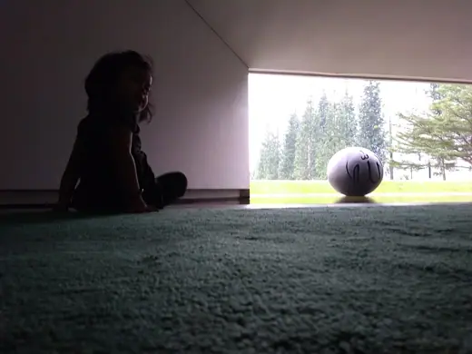
Al-Irsyad MosqueRidwan Kamil · 2010 Al-Shaheed MonumentSaman Kamal, Ismail Fatah Al Turk · 1983
Al-Shaheed MonumentSaman Kamal, Ismail Fatah Al Turk · 1983 Alamillo BridgeSantiago Calatrava · 1992
Alamillo BridgeSantiago Calatrava · 1992 Aldar HeadquartersMZ Architects · 2010
Aldar HeadquartersMZ Architects · 2010 Alexandra Road EstateNeave Brown · 1978
Alexandra Road EstateNeave Brown · 1978 AlhambraNasrid builders · 14th c.
AlhambraNasrid builders · 14th c. Alhamra Arts CouncilNayyar Ali Dada · 1992
Alhamra Arts CouncilNayyar Ali Dada · 1992 Alila Villas UluwatuWOHA · 2009
Alila Villas UluwatuWOHA · 2009 Alisher Navoi Opera and Ballet TheatreAlexey Shchusev · 1947
Alisher Navoi Opera and Ballet TheatreAlexey Shchusev · 1947 Allen Lambert Galleria, Brookfield PlaceSantiago Calatrava · 1992
Allen Lambert Galleria, Brookfield PlaceSantiago Calatrava · 1992 Allianz ArenaHerzog & de Meuron · 2005
Allianz ArenaHerzog & de Meuron · 2005 Altare della PatriaGiuseppe Sacconi · 1911
Altare della PatriaGiuseppe Sacconi · 1911 Alte NationalgalerieFriedrich August Stüler · 1876
Alte NationalgalerieFriedrich August Stüler · 1876 Alton West EstateLondon County Council Architects Department (Colin Lucas, Bill Howell and others) · 1959
Alton West EstateLondon County Council Architects Department (Colin Lucas, Bill Howell and others) · 1959 Alvar Aalto Cultural CentreAlvar Aalto · 1962
Alvar Aalto Cultural CentreAlvar Aalto · 1962 Alvar Aalto MuseumAlvar Aalto · 1973
Alvar Aalto MuseumAlvar Aalto · 1973 Amarbayasgalant MonasteryQing imperial builders · 1736
Amarbayasgalant MonasteryQing imperial builders · 1736 Amdavad ni GufaBalkrishna Doshi · 1995
Amdavad ni GufaBalkrishna Doshi · 1995 American Air Museum, DuxfordFoster + Partners · 1997
American Air Museum, DuxfordFoster + Partners · 1997 Amon Carter Museum of American ArtPhilip Johnson · 1961
Amon Carter Museum of American ArtPhilip Johnson · 1961 Amoreiras TowersTomás Taveira · 1985
Amoreiras TowersTomás Taveira · 1985 Amorepacific HeadquartersDavid Chipperfield Architects · 2017
Amorepacific HeadquartersDavid Chipperfield Architects · 2017 Amos RexJKMM Architects · 2018
Amos RexJKMM Architects · 2018 Amsterdam Orphanage (Burgerweeshuis)Aldo van Eyck · 1960
Amsterdam Orphanage (Burgerweeshuis)Aldo van Eyck · 1960 Anacleto Angelini Innovation CenterAlejandro Aravena (Elemental) · 2014
Anacleto Angelini Innovation CenterAlejandro Aravena (Elemental) · 2014 Anahuacalli MuseumDiego Rivera, Juan O'Gorman · 1964
Anahuacalli MuseumDiego Rivera, Juan O'Gorman · 1964 Ananda TempleBagan builders · 1105
Ananda TempleBagan builders · 1105 Andrew Melville HallJames Stirling · 1968
Andrew Melville HallJames Stirling · 1968 Angkor WatKhmer builders · c. 1150
Angkor WatKhmer builders · c. 1150 AnitkabirEmin Onat, Orhan Arda · 1953
AnitkabirEmin Onat, Orhan Arda · 1953 Ankara Railway StationŞekip Akalın · 1937
Ankara Railway StationŞekip Akalın · 1937 AntigoneRicardo Bofill, Taller de Arquitectura · 2000
AntigoneRicardo Bofill, Taller de Arquitectura · 2000 Antinori nel Chianti Classico WineryArchea Associati (Marco Casamonti) · 2012
Antinori nel Chianti Classico WineryArchea Associati (Marco Casamonti) · 2012 Antwerp Law CourtsRichard Rogers Partnership · 2006
Antwerp Law CourtsRichard Rogers Partnership · 2006 Anzac MemorialBruce Dellit · 1934
Anzac MemorialBruce Dellit · 1934 Anzeiger-HochhausFritz Höger · 1928
Anzeiger-HochhausFritz Höger · 1928 Aomori Museum of ArtJun Aoki · 2006
Aomori Museum of ArtJun Aoki · 2006 Aore Nagaoka City HallKengo Kuma · 2012
Aore Nagaoka City HallKengo Kuma · 2012 Aotea CentreEwen Wainscott (Auckland City Architect) · 1990
Aotea CentreEwen Wainscott (Auckland City Architect) · 1990 Apollo PavilionVictor Pasmore · 1969
Apollo PavilionVictor Pasmore · 1969 Apple ParkFoster + Partners · 2017
Apple ParkFoster + Partners · 2017 Appleby Blue AlmshouseWitherford Watson Mann · 2023
Appleby Blue AlmshouseWitherford Watson Mann · 2023 Aqua TowerJeanne Gang · 2009
Aqua TowerJeanne Gang · 2009 Ara Pacis MuseumRichard Meier · 2006
Ara Pacis MuseumRichard Meier · 2006 Aranya Low Cost HousingB. V. Doshi · 1989
Aranya Low Cost HousingB. V. Doshi · 1989 Arc de TriomfJosep Vilaseca i Casanovas · 1888
Arc de TriomfJosep Vilaseca i Casanovas · 1888 Arcadia Education ProjectSaif Ul Haque · 2016
Arcadia Education ProjectSaif Ul Haque · 2016 ArcelorMittal OrbitAnish Kapoor, Cecil Balmond · 2012
ArcelorMittal OrbitAnish Kapoor, Cecil Balmond · 2012 Archaeological Museum of IoanninaAris Konstantinidis · 1966
Archaeological Museum of IoanninaAris Konstantinidis · 1966 Arctic CathedralJan Inge Hovig · 1965
Arctic CathedralJan Inge Hovig · 1965 Arena ZagrebUPI-2M · 2008
Arena ZagrebUPI-2M · 2008 Argo Contemporary Art MuseumAhmadreza Schricker Architecture North (ASA North) · 2020
Argo Contemporary Art MuseumAhmadreza Schricker Architecture North (ASA North) · 2020 Ariston ClubMarcel Breuer · 1948
Ariston ClubMarcel Breuer · 1948 Arken Museum of Contemporary ArtSøren Robert Lund · 1996
Arken Museum of Contemporary ArtSøren Robert Lund · 1996 Armenian Genocide MemorialArthur Tarkhanyan, Sashur Kalashyan · 1967
Armenian Genocide MemorialArthur Tarkhanyan, Sashur Kalashyan · 1967 ARoS Aarhus KunstmuseumSchmidt Hammer Lassen · 2004
ARoS Aarhus KunstmuseumSchmidt Hammer Lassen · 2004 Arquipélago Contemporary Arts CentreMenos é Mais Arquitectos, João Mendes Ribeiro · 2015
Arquipélago Contemporary Arts CentreMenos é Mais Arquitectos, João Mendes Ribeiro · 2015 Art Biotop Water GardenJunya Ishigami · 2018
Art Biotop Water GardenJunya Ishigami · 2018 Art Gallery of AlbertaRandall Stout · 2010
Art Gallery of AlbertaRandall Stout · 2010 Art Gallery of New South Wales, North Building (Sydney Modern, Naala Nura)SANAA with Architectus · 2022
Art Gallery of New South Wales, North Building (Sydney Modern, Naala Nura)SANAA with Architectus · 2022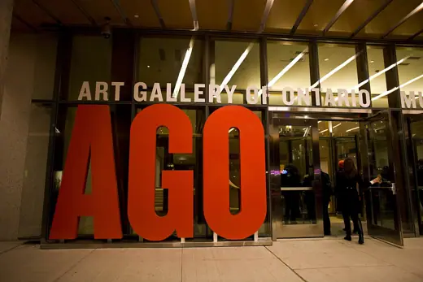
Art Gallery of OntarioFrank Gehry · 2008 Art Institute of Chicago, Modern WingRenzo Piano Building Workshop · 2009
Art Institute of Chicago, Modern WingRenzo Piano Building Workshop · 2009 Art Tower MitoArata Isozaki · 1990
Art Tower MitoArata Isozaki · 1990 Arthur and Yvonne Boyd Education CentreGlenn Murcutt, Wendy Lewin · 1999
Arthur and Yvonne Boyd Education CentreGlenn Murcutt, Wendy Lewin · 1999 Arts Centre MelbourneRoy Grounds · 1984
Arts Centre MelbourneRoy Grounds · 1984 ArtScience MuseumSafdie Architects · 2011
ArtScience MuseumSafdie Architects · 2011 Arvo Pärt CentreNieto Sobejano Arquitectos · 2018
Arvo Pärt CentreNieto Sobejano Arquitectos · 2018 Asahi Group Oyamazaki Villa Museum of ArtTadao Ando · 1996
Asahi Group Oyamazaki Villa Museum of ArtTadao Ando · 1996 Asakusa Culture Tourist Information CenterKengo Kuma · 2012
Asakusa Culture Tourist Information CenterKengo Kuma · 2012 Asian Art Museum of San FranciscoGae Aulenti · 2003
Asian Art Museum of San FranciscoGae Aulenti · 2003 Asian Games VillageRaj Rewal · 1982
Asian Games VillageRaj Rewal · 1982 Asilo Sant'EliaGiuseppe Terragni · 1937
Asilo Sant'EliaGiuseppe Terragni · 1937 Aspire Tower (The Torch Doha)Hadi Simaan, AREP · 2007
Aspire Tower (The Torch Doha)Hadi Simaan, AREP · 2007 Astley CastleWitherford Watson Mann · 2012
Astley CastleWitherford Watson Mann · 2012 Astrup Fearnley MuseumRenzo Piano · 2012
Astrup Fearnley MuseumRenzo Piano · 2012 AT&T Building (550 Madison Avenue)Philip Johnson, John Burgee · 1984
AT&T Building (550 Madison Avenue)Philip Johnson, John Burgee · 1984 Atatürk Cultural CenterMurat Tabanlioglu · 2021
Atatürk Cultural CenterMurat Tabanlioglu · 2021 Atatürk LibrarySedad Hakkı Eldem · 1976
Atatürk LibrarySedad Hakkı Eldem · 1976 Atelier BardillValerio Olgiati · 2007
Atelier BardillValerio Olgiati · 2007 Athens ConservatoireIoannis Despotopoulos · 1976
Athens ConservatoireIoannis Despotopoulos · 1976 Athens Olympic Stadium roofSantiago Calatrava · 2004
Athens Olympic Stadium roofSantiago Calatrava · 2004 Athénée FrançaisTakamasa Yoshizaka · 1962
Athénée FrançaisTakamasa Yoshizaka · 1962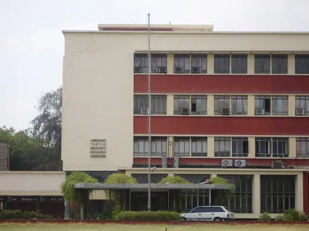
ATIRA (Ahmedabad Textile Industry's Research Association)Achyut Kanvinde · 1954 Atlanta Central LibraryMarcel Breuer · 1980
Atlanta Central LibraryMarcel Breuer · 1980 AtomiumAndre Waterkeyn, Andre Polak · 1958
AtomiumAndre Waterkeyn, Andre Polak · 1958 Auckland Art GalleryFJMT, Archimedia · 2011
Auckland Art GalleryFJMT, Archimedia · 2011 Auditorio Ciudad de LeónMansilla + Tuñón · 2002
Auditorio Ciudad de LeónMansilla + Tuñón · 2002 Auditorio de TenerifeSantiago Calatrava · 2003
Auditorio de TenerifeSantiago Calatrava · 2003 Auditorium Niccolò PaganiniRenzo Piano · 2001
Auditorium Niccolò PaganiniRenzo Piano · 2001 Auditorium Parco della MusicaRenzo Piano Building Workshop · 2002
Auditorium Parco della MusicaRenzo Piano Building Workshop · 2002 Aula MagnaRalph Erskine · 1997
Aula MagnaRalph Erskine · 1997 Aula Magna, Central University of VenezuelaCarlos Raúl Villanueva · 1953
Aula Magna, Central University of VenezuelaCarlos Raúl Villanueva · 1953 Aula TU DelftVan den Broek en Bakema · 1966
Aula TU DelftVan den Broek en Bakema · 1966 Aurora PlaceRenzo Piano Building Workshop · 2000
Aurora PlaceRenzo Piano Building Workshop · 2000 Australia SquareHarry Seidler · 1967
Australia SquareHarry Seidler · 1967 Australian National Maritime MuseumPhilip Cox · 1991
Australian National Maritime MuseumPhilip Cox · 1991 Australian War MemorialEmil Sodersten, John Crust · 1941
Australian War MemorialEmil Sodersten, John Crust · 1941 Austrian Parliament BuildingTheophil Hansen · 1883
Austrian Parliament BuildingTheophil Hansen · 1883 Austrian Postal Savings BankOtto Wagner · 1906
Austrian Postal Savings BankOtto Wagner · 1906 Autrique HouseVictor Horta · 1893
Autrique HouseVictor Horta · 1893 Avianca BuildingEsguerra, Sáenz, Urdaneta, Samper y Cía., with Ricaurte Prieto Carrizosa · 1969
Avianca BuildingEsguerra, Sáenz, Urdaneta, Samper y Cía., with Ricaurte Prieto Carrizosa · 1969 Avicenna MausoleumHoushang Seyhoun · 1954
Avicenna MausoleumHoushang Seyhoun · 1954 Avicii Arena (Globen)Berg Arkitektkontor · 1989
Avicii Arena (Globen)Berg Arkitektkontor · 1989 Aviva StadiumPopulous with Scott Tallon Walker · 2010
Aviva StadiumPopulous with Scott Tallon Walker · 2010 Awaji YumebutaiTadao Ando · 2000
Awaji YumebutaiTadao Ando · 2000 Axel Springer CampusOMA (Rem Koolhaas) · 2020
Axel Springer CampusOMA (Rem Koolhaas) · 2020 Azadi StadiumAbdol Aziz Farmanfarmaian · 1971
Azadi StadiumAbdol Aziz Farmanfarmaian · 1971 Azadi TowerHossein Amanat · 1971
Azadi TowerHossein Amanat · 1971 Azerbaijan Carpet MuseumFranz Janz · 2014
Azerbaijan Carpet MuseumFranz Janz · 2014 Aéro-HabitatLouis Miquel, Pierre Bourlier · 1955
Aéro-HabitatLouis Miquel, Pierre Bourlier · 1955 Babyn Yar Symbolic SynagogueManuel Herz Architects · 2021
Babyn Yar Symbolic SynagogueManuel Herz Architects · 2021 Bac de Roda BridgeSantiago Calatrava · 1987
Bac de Roda BridgeSantiago Calatrava · 1987 Bacardi Bottling PlantFélix Candela · 1960
Bacardi Bottling PlantFélix Candela · 1960 Bacardi BuildingEsteban Rodríguez-Castells, Rafael Fernández Ruenes · 1930
Bacardi BuildingEsteban Rodríguez-Castells, Rafael Fernández Ruenes · 1930 Badajoz Congress Centre (Manuel Rojas)SelgasCano (José Selgas, Lucía Cano) · 2006
Badajoz Congress Centre (Manuel Rojas)SelgasCano (José Selgas, Lucía Cano) · 2006 Badshahi MosqueMughal builders · 1673
Badshahi MosqueMughal builders · 1673 Bagsværd ChurchJørn Utzon · 1976
Bagsværd ChurchJørn Utzon · 1976 Baha'i Temple of South AmericaHariri Pontarini Architects · 2016
Baha'i Temple of South AmericaHariri Pontarini Architects · 2016 Bahrain National MuseumKrohn & Hartvig Rasmussen · 1988
Bahrain National MuseumKrohn & Hartvig Rasmussen · 1988 Bahrain National TheatreArchitecture-Studio · 2012
Bahrain National TheatreArchitecture-Studio · 2012 Bahrain World Trade CenterAtkins · 2008
Bahrain World Trade CenterAtkins · 2008 Bait ur Rouf MosqueMarina Tabassum · 2012
Bait ur Rouf MosqueMarina Tabassum · 2012 Baitul MukarramAbdulhusein M. Thariani · 1968
Baitul MukarramAbdulhusein M. Thariani · 1968 Baker HouseAlvar Aalto · 1949
Baker HouseAlvar Aalto · 1949 Bakhmetevsky Bus GarageKonstantin Melnikov with Vladimir Shukhov · 1928
Bakhmetevsky Bus GarageKonstantin Melnikov with Vladimir Shukhov · 1928 Baku Crystal Hallgmp Architekten (von Gerkan, Marg and Partners) · 2012
Baku Crystal Hallgmp Architekten (von Gerkan, Marg and Partners) · 2012 Balfron TowerErno Goldfinger · 1967
Balfron TowerErno Goldfinger · 1967 Banco Borges & IrmãoÁlvaro Siza · 1986
Banco Borges & IrmãoÁlvaro Siza · 1986 Bangkok Art and Culture CentreRobert G. Boughey & Associates · 2008
Bangkok Art and Culture CentreRobert G. Boughey & Associates · 2008 Bank of America TowerCookfox · 2009
Bank of America TowerCookfox · 2009 Bank of China TowerI. M. Pei · 1990
Bank of China TowerI. M. Pei · 1990 Bank of Georgia headquartersGeorge Chakhava · 1975
Bank of Georgia headquartersGeorge Chakhava · 1975 Bank of London and South AmericaClorindo Testa, SEPRA · 1966
Bank of London and South AmericaClorindo Testa, SEPRA · 1966 Bankinter BuildingRafael Moneo and Ramón Bescós · 1977
Bankinter BuildingRafael Moneo and Ramón Bescós · 1977 Banyuwangi International AirportAndra Matin · 2018
Banyuwangi International AirportAndra Matin · 2018 Barbican CentreChamberlin, Powell and Bon · 1982
Barbican CentreChamberlin, Powell and Bon · 1982 Barbican EstateChamberlin, Powell and Bon · 1982
Barbican EstateChamberlin, Powell and Bon · 1982 Barcelona Museum of Contemporary Art (MACBA)Richard Meier · 1995
Barcelona Museum of Contemporary Art (MACBA)Richard Meier · 1995 Barcelona PavilionMies van der Rohe, Lilly Reich · 1929
Barcelona PavilionMies van der Rohe, Lilly Reich · 1929 Barnes FoundationTod Williams Billie Tsien Architects · 2012
Barnes FoundationTod Williams Billie Tsien Architects · 2012 Basilica of Our Lady of AltagraciaPierre Dupre, Andre Dunoyer de Segonzac · 1971
Basilica of Our Lady of AltagraciaPierre Dupre, Andre Dunoyer de Segonzac · 1971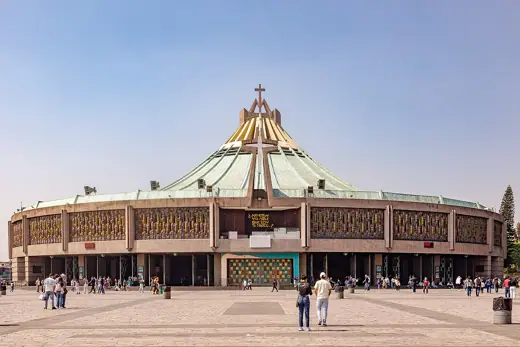
Basilica of Our Lady of GuadalupePedro Ramirez Vazquez · 1976 Basilica of Our Lady of Peace of YamoussoukroPierre Fakhoury · 1989
Basilica of Our Lady of Peace of YamoussoukroPierre Fakhoury · 1989 Basilica of Sainte-Anne du CongoRoger Erell · 1949
Basilica of Sainte-Anne du CongoRoger Erell · 1949 Basilica of St. Pius XPierre Vago, Eugene Freyssinet · 1958
Basilica of St. Pius XPierre Vago, Eugene Freyssinet · 1958 Basilica of the AnnunciationGiovanni Muzio · 1969
Basilica of the AnnunciationGiovanni Muzio · 1969 Basilica of the Holy TrinityAlexandros Tombazis · 2007
Basilica of the Holy TrinityAlexandros Tombazis · 2007 BasketBarNL Architects · 2003
BasketBarNL Architects · 2003 Bat Yam City HallAlfred Neumann, Zvi Hecker · 1963
Bat Yam City HallAlfred Neumann, Zvi Hecker · 1963 Bata Shoe MuseumRaymond Moriyama · 1995
Bata Shoe MuseumRaymond Moriyama · 1995 Bauhaus DessauWalter Gropius · 1926
Bauhaus DessauWalter Gropius · 1926 Bauhaus-ArchivWalter Gropius, Alex Cvijanovic · 1979
Bauhaus-ArchivWalter Gropius, Alex Cvijanovic · 1979 Bavinger HouseBruce Goff · 1955
Bavinger HouseBruce Goff · 1955 Bayterek TowerAkmurza Rustembekov · 2002
Bayterek TowerAkmurza Rustembekov · 2002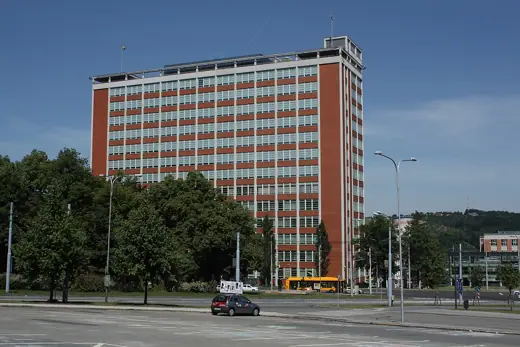
Baťa's Skyscraper (Building 21)Vladimír Karfík · 1938 BedZEDBill Dunster Architects · 2002
BedZEDBill Dunster Architects · 2002 Bee'ah HeadquartersZaha Hadid Architects · 2022
Bee'ah HeadquartersZaha Hadid Architects · 2022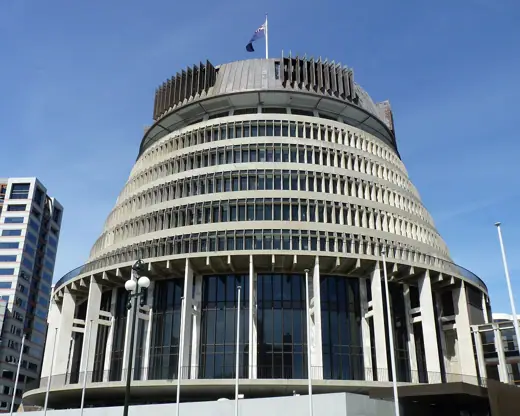
BeehiveBasil Spence · 1981 Beijing Capital International Airport Terminal 3Foster + Partners, NACO, Arup · 2008
Beijing Capital International Airport Terminal 3Foster + Partners, NACO, Arup · 2008 Beijing Daxing International Airport TerminalZaha Hadid Architects, ADPI · 2019
Beijing Daxing International Airport TerminalZaha Hadid Architects, ADPI · 2019 Beijing National Aquatics CenterPTW Architects · 2008
Beijing National Aquatics CenterPTW Architects · 2008 Beijing National StadiumHerzog & de Meuron · 2008
Beijing National StadiumHerzog & de Meuron · 2008 Beijing Railway StationYang Tingbao, Chen Deng'ao · 1959
Beijing Railway StationYang Tingbao, Chen Deng'ao · 1959 Beinecke Rare Book & Manuscript LibraryGordon Bunshaft, SOM · 1963
Beinecke Rare Book & Manuscript LibraryGordon Bunshaft, SOM · 1963 Beira railway stationPaulo de Melo Sampaio, Francisco Castro · 1966
Beira railway stationPaulo de Melo Sampaio, Francisco Castro · 1966 Beirut TerracesHerzog & de Meuron · 2017
Beirut TerracesHerzog & de Meuron · 2017 Beitou Public LibraryBio-architecture Formosana · 2006
Beitou Public LibraryBio-architecture Formosana · 2006 Belarusian Memorial ChapelSpheron Architects (Tszwai So) · 2016
Belarusian Memorial ChapelSpheron Architects (Tszwai So) · 2016 Belgrade Fair Hall 1Milorad Pantovic, Branko Zezelj · 1957
Belgrade Fair Hall 1Milorad Pantovic, Branko Zezelj · 1957 Bella Sky Hotel3XN · 2011
Bella Sky Hotel3XN · 2011 BellavistaArne Jacobsen · 1934
BellavistaArne Jacobsen · 1934 BellesguardAntoni Gaudí · 1909
BellesguardAntoni Gaudí · 1909 Bellevue TheatreArne Jacobsen · 1936
Bellevue TheatreArne Jacobsen · 1936 Belvedere 21Karl Schwanzer · 1962
Belvedere 21Karl Schwanzer · 1962 Belém Cultural CenterVittorio Gregotti, Manuel Salgado · 1992
Belém Cultural CenterVittorio Gregotti, Manuel Salgado · 1992 Benedictine Monastery ChapelGabriel Guarda, Martín Correa · 1964
Benedictine Monastery ChapelGabriel Guarda, Martín Correa · 1964 Benesse House MuseumTadao Ando · 1992
Benesse House MuseumTadao Ando · 1992 Bensberg Town HallGottfried Böhm · 1969
Bensberg Town HallGottfried Böhm · 1969 Bentota Beach HotelGeoffrey Bawa · 1969
Bentota Beach HotelGeoffrey Bawa · 1969 Bergisel Ski JumpZaha Hadid Architects · 2002
Bergisel Ski JumpZaha Hadid Architects · 2002 BergpolderflatWillem van Tijen, with Brinkman & Van der Vlugt · 1934
BergpolderflatWillem van Tijen, with Brinkman & Van der Vlugt · 1934 Berkeley Art Museum (original building)Mario Ciampi · 1970
Berkeley Art Museum (original building)Mario Ciampi · 1970 BerlaymontLucien De Vestel, Jean Gilson, André and Jean Polak · 1969
BerlaymontLucien De Vestel, Jean Gilson, André and Jean Polak · 1969 Berlin HauptbahnhofMeinhard von Gerkan (gmp, von Gerkan, Marg and Partners) · 2006
Berlin HauptbahnhofMeinhard von Gerkan (gmp, von Gerkan, Marg and Partners) · 2006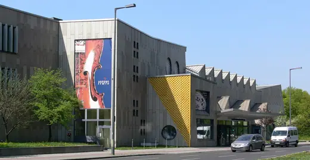
Berlin Musical Instrument MuseumEdgar Wisniewski, after designs by Hans Scharoun · 1984 Berlin State Library (Haus Potsdamer Straße)Hans Scharoun · 1978
Berlin State Library (Haus Potsdamer Straße)Hans Scharoun · 1978 Berliner PhilharmonieHans Scharoun · 1963
Berliner PhilharmonieHans Scharoun · 1963 Beth Sholom SynagogueFrank Lloyd Wright · 1959
Beth Sholom SynagogueFrank Lloyd Wright · 1959 Beurs van BerlageHendrik Petrus Berlage · 1903
Beurs van BerlageHendrik Petrus Berlage · 1903 Bharat BhavanCharles Correa · 1982
Bharat BhavanCharles Correa · 1982 Bhong MosqueRais Ghazi Mohammad (patron) with local master masons and craftsmen · 1982
Bhong MosqueRais Ghazi Mohammad (patron) with local master masons and craftsmen · 1982 Biblioteca cantonale, LuganoRino Tami and Carlo Tami · 1942
Biblioteca cantonale, LuganoRino Tami and Carlo Tami · 1942 Biblioteca Gabriel García MárquezSUMA Arquitectura · 2022
Biblioteca Gabriel García MárquezSUMA Arquitectura · 2022 Biblioteca Luis Ángel ArangoEsguerra, Sáenz, Urdaneta, Samper y Cía. · 1958
Biblioteca Luis Ángel ArangoEsguerra, Sáenz, Urdaneta, Samper y Cía. · 1958 Bibliotheca AlexandrinaSnohetta · 2002
Bibliotheca AlexandrinaSnohetta · 2002 Bibliothèque Alexis de TocquevilleOMA · 2017
Bibliothèque Alexis de TocquevilleOMA · 2017 Bibliothèque nationale de FranceDominique Perrault · 1996
Bibliothèque nationale de FranceDominique Perrault · 1996 Bienal Pavilion (Pavilhão Ciccillo Matarazzo)Oscar Niemeyer · 1954
Bienal Pavilion (Pavilhão Ciccillo Matarazzo)Oscar Niemeyer · 1954 BierpinselRalf Schüler and Ursulina Schüler-Witte · 1976
BierpinselRalf Schüler and Ursulina Schüler-Witte · 1976 BIGZ BuildingDragiša Brašovan · 1940
BIGZ BuildingDragiša Brašovan · 1940 Bihar MuseumMaki and Associates, Opolis · 2017
Bihar MuseumMaki and Associates, Opolis · 2017 Bilbao Metro entrances ("Fosteritos")Foster + Partners · 1995
Bilbao Metro entrances ("Fosteritos")Foster + Partners · 1995 BildmuseetHenning Larsen Architects · 2012
BildmuseetHenning Larsen Architects · 2012 Binoculars BuildingFrank Gehry with Claes Oldenburg and Coosje van Bruggen · 1991
Binoculars BuildingFrank Gehry with Claes Oldenburg and Coosje van Bruggen · 1991 BiomuseoFrank Gehry · 2014
BiomuseoFrank Gehry · 2014 Bishop Edward King ChapelNiall McLaughlin Architects · 2013
Bishop Edward King ChapelNiall McLaughlin Architects · 2013 Bitexco Financial TowerCarlos Zapata · 2010
Bitexco Financial TowerCarlos Zapata · 2010 Black DiamondSchmidt Hammer Lassen · 1999
Black DiamondSchmidt Hammer Lassen · 1999 Blavatnik School of GovernmentHerzog & de Meuron · 2015
Blavatnik School of GovernmentHerzog & de Meuron · 2015 Bloch Building, Nelson-Atkins Museum of ArtSteven Holl · 2007
Bloch Building, Nelson-Atkins Museum of ArtSteven Holl · 2007 Bloco das Águas LivresNuno Teotónio Pereira and Bartolomeu Costa Cabral · 1955
Bloco das Águas LivresNuno Teotónio Pereira and Bartolomeu Costa Cabral · 1955 Bloomberg LondonFoster + Partners · 2017
Bloomberg LondonFoster + Partners · 2017 Blue Building (Blue Condominium)Kyriakos Panagiotakos · 1933
Blue Building (Blue Condominium)Kyriakos Panagiotakos · 1933 Blues Point TowerHarry Seidler · 1962
Blues Point TowerHarry Seidler · 1962 BMW Central BuildingZaha Hadid · 2005
BMW Central BuildingZaha Hadid · 2005 BMW Headquarters (BMW Tower) and BMW MuseumKarl Schwanzer · 1973
BMW Headquarters (BMW Tower) and BMW MuseumKarl Schwanzer · 1973 BMW WeltCoop Himmelb(l)au · 2007
BMW WeltCoop Himmelb(l)au · 2007 Boa Nova Tea HouseÁlvaro Siza · 1963
Boa Nova Tea HouseÁlvaro Siza · 1963 Bocconi University Urban CampusSANAA · 2019
Bocconi University Urban CampusSANAA · 2019 Bode MuseumErnst von Ihne · 1904
Bode MuseumErnst von Ihne · 1904 Bodegas GüellFrancesc Berenguer with Antoni Gaudí · 1901
Bodegas GüellFrancesc Berenguer with Antoni Gaudí · 1901 Bodegas YsiosSantiago Calatrava · 2001
Bodegas YsiosSantiago Calatrava · 2001 BoekentorenHenry van de Velde · 1942
BoekentorenHenry van de Velde · 1942 Bolgatanga LibraryJ. Max Bond Jr. · 1966
Bolgatanga LibraryJ. Max Bond Jr. · 1966 BolgenHenning Larsen Architects · 2009
BolgenHenning Larsen Architects · 2009 Bonnefanten MuseumAldo Rossi · 1995
Bonnefanten MuseumAldo Rossi · 1995 Boots D10 BuildingOwen Williams · 1932
Boots D10 BuildingOwen Williams · 1932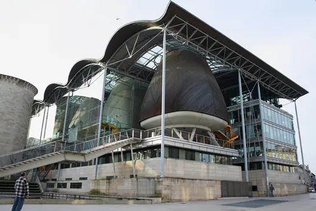
Bordeaux Law CourtsRichard Rogers Partnership · 1998 BorobudurSailendra builders · c. 825
BorobudurSailendra builders · c. 825 Borujerdi HouseUstad Ali Maryam · 1857
Borujerdi HouseUstad Ali Maryam · 1857 Bosco VerticaleStefano Boeri · 2014
Bosco VerticaleStefano Boeri · 2014 Boston City HallKallmann McKinnell & Knowles · 1968
Boston City HallKallmann McKinnell & Knowles · 1968 Boston Government Service CenterPaul Rudolph (coordinating architect), with Desmond & Lord and Shepley Bulfinch Richardson and Abbott · 1971
Boston Government Service CenterPaul Rudolph (coordinating architect), with Desmond & Lord and Shepley Bulfinch Richardson and Abbott · 1971 Boston Public Library, McKim BuildingMcKim, Mead & White · 1895
Boston Public Library, McKim BuildingMcKim, Mead & White · 1895 Boutique MonacoMass Studies (Minsuk Cho) · 2008
Boutique MonacoMass Studies (Minsuk Cho) · 2008 Bouça Social HousingÁlvaro Siza · 2006
Bouça Social HousingÁlvaro Siza · 2006 Braga Municipal StadiumEduardo Souto de Moura · 2003
Braga Municipal StadiumEduardo Souto de Moura · 2003 Brasília Bus Station (Rodoviária do Plano Piloto)Lúcio Costa · 1960
Brasília Bus Station (Rodoviária do Plano Piloto)Lúcio Costa · 1960 Brasília TV TowerLúcio Costa · 1967
Brasília TV TowerLúcio Costa · 1967 Brazilian Museum of Sculpture (MuBE)Paulo Mendes da Rocha · 1995
Brazilian Museum of Sculpture (MuBE)Paulo Mendes da Rocha · 1995 Brazilian Press Association Building (ABI)MMM Roberto (Marcelo and Milton Roberto) · 1938
Brazilian Press Association Building (ABI)MMM Roberto (Marcelo and Milton Roberto) · 1938 Breuer BuildingMarcel Breuer · 1966
Breuer BuildingMarcel Breuer · 1966 Breuer House IIMarcel Breuer · 1948
Breuer House IIMarcel Breuer · 1948 Bridge of PeaceMichele De Lucchi · 2010
Bridge of PeaceMichele De Lucchi · 2010 Bridge SchoolLi Xiaodong · 2009
Bridge SchoolLi Xiaodong · 2009 Brion CemeteryCarlo Scarpa · 1978
Brion CemeteryCarlo Scarpa · 1978 British Council, New DelhiCharles Correa · 1992
British Council, New DelhiCharles Correa · 1992 British LibraryColin St John Wilson, MJ Long · 1997
British LibraryColin St John Wilson, MJ Long · 1997 Bruder Klaus Field ChapelPeter Zumthor · 2007
Bruder Klaus Field ChapelPeter Zumthor · 2007 Brunswick CentrePatrick Hodgkinson · 1972
Brunswick CentrePatrick Hodgkinson · 1972 Brussels-Central StationVictor Horta, Maxime Brunfaut · 1952
Brussels-Central StationVictor Horta, Maxime Brunfaut · 1952 Brücke MuseumWerner Düttmann · 1967
Brücke MuseumWerner Düttmann · 1967 BT TowerEric Bedford · 1964
BT TowerEric Bedford · 1964 BundeskunsthalleGustav Peichl · 1992
BundeskunsthalleGustav Peichl · 1992 Bunkier SztukiKrystyna Tołłoczko-Różyska; facade by Stefan Borzęcki and Antoni Hajdecki · 1965
Bunkier SztukiKrystyna Tołłoczko-Różyska; facade by Stefan Borzęcki and Antoni Hajdecki · 1965 Burgo TowerEduardo Souto de Moura · 2007
Burgo TowerEduardo Souto de Moura · 2007 Burj Al ArabTom Wright, Atkins · 1999
Burj Al ArabTom Wright, Atkins · 1999 Burj KhalifaSOM · 2010
Burj KhalifaSOM · 2010 Burkina Institute of TechnologyDiébédo Francis Kéré · 2020
Burkina Institute of TechnologyDiébédo Francis Kéré · 2020 Burrell CollectionBarry Gasson, John Meunier and Brit Andresen · 1983
Burrell CollectionBarry Gasson, John Meunier and Brit Andresen · 1983 Burton Barr Central LibraryWill Bruder · 1995
Burton Barr Central LibraryWill Bruder · 1995 BUS:STOP KrumbachSou Fujimoto, Ensamble Studio, Wang Shu and Lu Wenyu, Smiljan Radić, Rintala Eggertsson, Alexander Brodsky, De Vylder Vinck Taillieu, with Vorarlberg partner architects · 2014
BUS:STOP KrumbachSou Fujimoto, Ensamble Studio, Wang Shu and Lu Wenyu, Smiljan Radić, Rintala Eggertsson, Alexander Brodsky, De Vylder Vinck Taillieu, with Vorarlberg partner architects · 2014 Busan Cinema CenterCoop Himmelb(l)au · 2011
Busan Cinema CenterCoop Himmelb(l)au · 2011 BusárasMichael Scott · 1953
BusárasMichael Scott · 1953 Butaro District HospitalMASS Design Group · 2011
Butaro District HospitalMASS Design Group · 2011 Buzludzha MonumentGeorgi Stoilov · 1981
Buzludzha MonumentGeorgi Stoilov · 1981 Byeongsan SeowonJoseon builders · 1613
Byeongsan SeowonJoseon builders · 1613 Byker WallRalph Erskine · 1982
Byker WallRalph Erskine · 1982 Cabanon de Le CorbusierLe Corbusier · 1952
Cabanon de Le CorbusierLe Corbusier · 1952 Cables Wynd HouseAlison & Hutchison & Partners · 1965
Cables Wynd HouseAlison & Hutchison & Partners · 1965 Cadet Chapel, US Air Force AcademyWalter Netsch (SOM) · 1962
Cadet Chapel, US Air Force AcademyWalter Netsch (SOM) · 1962 Café De UnieJ. J. P. Oud · 1925
Café De UnieJ. J. P. Oud · 1925 Café MoskauJosef Kaiser · 1964
Café MoskauJosef Kaiser · 1964 Café SeeroseUlrich Müther · 1983
Café SeeroseUlrich Müther · 1983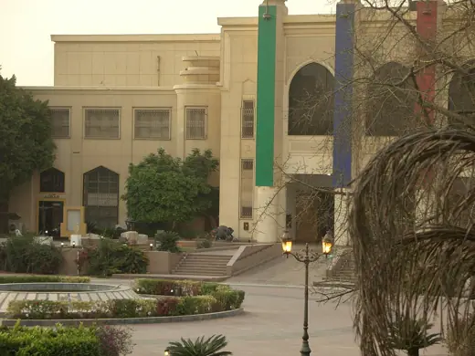
Cairo Opera HouseNikken Sekkei · 1988 Cairo TowerNaoum Shebib · 1961
Cairo TowerNaoum Shebib · 1961 CaixaForum BarcelonaJosep Puig i Cadafalch; Arata Isozaki (entrance) · 2002
CaixaForum BarcelonaJosep Puig i Cadafalch; Arata Isozaki (entrance) · 2002 CaixaForum MadridHerzog & de Meuron · 2008
CaixaForum MadridHerzog & de Meuron · 2008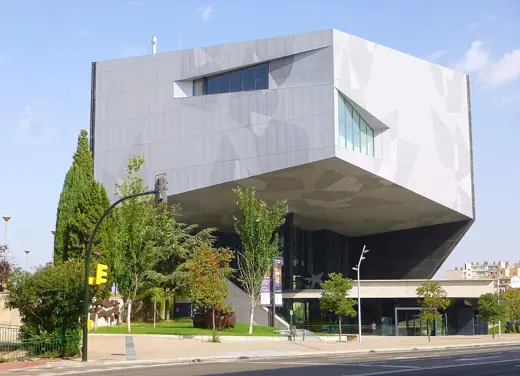
CaixaForum ZaragozaCarme Pinós · 2014 Caja Granada HeadquartersAlberto Campo Baeza · 2001
Caja Granada HeadquartersAlberto Campo Baeza · 2001 Calgary Central LibrarySnøhetta, DIALOG · 2018
Calgary Central LibrarySnøhetta, DIALOG · 2018 California Academy of SciencesRenzo Piano · 2008
California Academy of SciencesRenzo Piano · 2008 Calouste Gulbenkian MuseumRuy Athouguia, Pedro Cid, Alberto Pessoa · 1969
Calouste Gulbenkian MuseumRuy Athouguia, Pedro Cid, Alberto Pessoa · 1969 Caltrans District 7 HeadquartersMorphosis, Thom Mayne · 2004
Caltrans District 7 HeadquartersMorphosis, Thom Mayne · 2004 Cambridge Central MosqueMarks Barfield Architects · 2019
Cambridge Central MosqueMarks Barfield Architects · 2019 Cameron OfficesJohn Andrews · 1976
Cameron OfficesJohn Andrews · 1976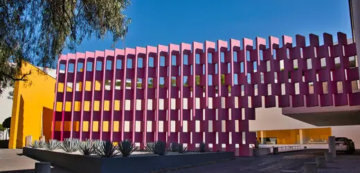
Camino Real Hotel, Mexico CityRicardo Legorreta · 1968 Can LisJørn Utzon · 1972
Can LisJørn Utzon · 1972 Canadian Museum of HistoryDouglas Cardinal · 1989
Canadian Museum of HistoryDouglas Cardinal · 1989 Canary Wharf Underground StationFoster + Partners · 1999
Canary Wharf Underground StationFoster + Partners · 1999 Canton TowerInformation Based Architecture · 2010
Canton TowerInformation Based Architecture · 2010 Capilla del RetiroCristián Undurraga · 2009
Capilla del RetiroCristián Undurraga · 2009 CapitaGreenToyo Ito · 2014
CapitaGreenToyo Ito · 2014 Capital GateRMJM · 2011
Capital GateRMJM · 2011 CapitaSpringBIG, Carlo Ratti Associati · 2021
CapitaSpringBIG, Carlo Ratti Associati · 2021 Capitol ComplexLe Corbusier · c. 1962
Capitol ComplexLe Corbusier · c. 1962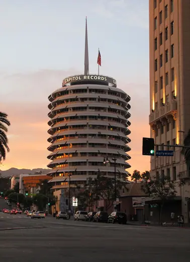
Capitol Records BuildingWelton Becket (Louis Naidorf) · 1956 Cardboard CathedralShigeru Ban · 2013
Cardboard CathedralShigeru Ban · 2013 Carnegie HallWilliam Burnet Tuthill · 1891
Carnegie HallWilliam Burnet Tuthill · 1891 Carpenter Center for the Visual ArtsLe Corbusier · 1963
Carpenter Center for the Visual ArtsLe Corbusier · 1963 Carpet Museum of IranAbdol Aziz Farmanfarmaian · 1977
Carpet Museum of IranAbdol Aziz Farmanfarmaian · 1977 Carré d'ArtFoster + Partners · 1993
Carré d'ArtFoster + Partners · 1993 Cartagena Roman Theatre MuseumRafael Moneo · 2008
Cartagena Roman Theatre MuseumRafael Moneo · 2008 Carter/Tucker HouseSean Godsell · 2000
Carter/Tucker HouseSean Godsell · 2000 Cartiera BurgoPier Luigi Nervi · 1964
Cartiera BurgoPier Luigi Nervi · 1964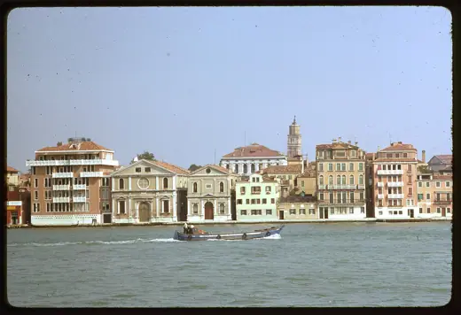
Casa alle ZattereIgnazio Gardella · 1958 Casa BatllóAntoni Gaudi · 1906
Casa BatllóAntoni Gaudi · 1906 Casa BianchiMario Botta · 1973
Casa BianchiMario Botta · 1973 Casa BlocJosep Lluís Sert, Josep Torres Clavé and Joan Baptista Subirana · 1936
Casa BlocJosep Lluís Sert, Josep Torres Clavé and Joan Baptista Subirana · 1936 Casa CalvetAntoni Gaudí · 1900
Casa CalvetAntoni Gaudí · 1900 Casa CienPezo von Ellrichshausen · 2011
Casa CienPezo von Ellrichshausen · 2011 Casa da MúsicaOMA · 2005
Casa da MúsicaOMA · 2005 Casa das CanoasOscar Niemeyer · 1953
Casa das CanoasOscar Niemeyer · 1953 Casa das Histórias Paula RegoEduardo Souto de Moura · 2009
Casa das Histórias Paula RegoEduardo Souto de Moura · 2009 Casa das Mudas Art CentrePaulo David · 2004
Casa das Mudas Art CentrePaulo David · 2004 Casa De BlasAlberto Campo Baeza · 2000
Casa De BlasAlberto Campo Baeza · 2000 Casa de la Marina (Barceloneta housing)Josep Antoni Coderch and Manuel Valls · 1954
Casa de la Marina (Barceloneta housing)Josep Antoni Coderch and Manuel Valls · 1954 Casa de las FloresSecundino Zuazo · 1932
Casa de las FloresSecundino Zuazo · 1932 Casa de VidroLina Bo Bardi · 1951
Casa de VidroLina Bo Bardi · 1951 Casa del FascioGiuseppe Terragni · 1936
Casa del FascioGiuseppe Terragni · 1936 Casa del GirasoleLuigi Moretti · 1950
Casa del GirasoleLuigi Moretti · 1950 Casa do Baile (Pampulha Dance Hall)Oscar Niemeyer · 1943
Casa do Baile (Pampulha Dance Hall)Oscar Niemeyer · 1943 Casa FusterLluís Domènech i Montaner · 1911
Casa FusterLluís Domènech i Montaner · 1911 Casa GasparAlberto Campo Baeza · 1992
Casa GasparAlberto Campo Baeza · 1992 Casa GilardiLuis Barragán · 1976
Casa GilardiLuis Barragán · 1976 Casa KalmannLuigi Snozzi · 1976
Casa KalmannLuigi Snozzi · 1976 Casa KlotzMathias Klotz · 1991
Casa KlotzMathias Klotz · 1991 Casa Luis BarragánLuis Barragán · 1948
Casa Luis BarragánLuis Barragán · 1948 Casa MalaparteAdalberto Libera and Curzio Malaparte · 1942
Casa MalaparteAdalberto Libera and Curzio Malaparte · 1942 Casa MilàAntoni Gaudi · 1912
Casa MilàAntoni Gaudi · 1912 Casa ModernistaGregori Warchavchik · 1928
Casa ModernistaGregori Warchavchik · 1928 Casa no Butantã (Paulo Mendes da Rocha House)Paulo Mendes da Rocha · 1964
Casa no Butantã (Paulo Mendes da Rocha House)Paulo Mendes da Rocha · 1964 Casa O'Gorman 1929 (Cecil O'Gorman House)Juan O'Gorman · 1929
Casa O'Gorman 1929 (Cecil O'Gorman House)Juan O'Gorman · 1929 Casa PapanicePaolo Portoghesi, Vittorio Gigliotti · 1970
Casa PapanicePaolo Portoghesi, Vittorio Gigliotti · 1970 Casa PlanellsJosep Maria Jujol · 1924
Casa PlanellsJosep Maria Jujol · 1924 Casa RotondaMario Botta · 1982
Casa RotondaMario Botta · 1982 Casa RusticiGiuseppe Terragni, Pietro Lingeri · 1935
Casa RusticiGiuseppe Terragni, Pietro Lingeri · 1935 Casa SindicalFrancisco de Asís Cabrero and Rafael Aburto · 1951
Casa SindicalFrancisco de Asís Cabrero and Rafael Aburto · 1951 Casa sobre el ArroyoAmancio Williams · 1946
Casa sobre el ArroyoAmancio Williams · 1946 Casa UgaldeJosé Antonio Coderch · 1952
Casa UgaldeJosé Antonio Coderch · 1952 Case Study House #21 (Bailey House)Pierre Koenig · 1959
Case Study House #21 (Bailey House)Pierre Koenig · 1959 Castel BérangerHector Guimard · 1898
Castel BérangerHector Guimard · 1898 Castello di RivoliAndrea Bruno · 1984
Castello di RivoliAndrea Bruno · 1984 Castelvecchio MuseumCarlo Scarpa · 1975
Castelvecchio MuseumCarlo Scarpa · 1975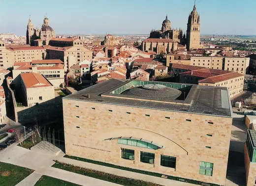
Castile and León Congress and Exhibition CentreJuan Navarro Baldeweg · 1992 CatetinhoOscar Niemeyer · 1956
CatetinhoOscar Niemeyer · 1956 Cathedral of BrasíliaOscar Niemeyer · 1970
Cathedral of BrasíliaOscar Niemeyer · 1970 Cathedral of Christ the LightCraig W. Hartman (SOM) · 2008
Cathedral of Christ the LightCraig W. Hartman (SOM) · 2008 Cathedral of LearningCharles Klauder · 1937
Cathedral of LearningCharles Klauder · 1937 Cathedral of Our Lady of the AngelsRafael Moneo · 2002
Cathedral of Our Lady of the AngelsRafael Moneo · 2002 Cathedral of Saint Mary of the AssumptionPietro Belluschi and Pier Luigi Nervi · 1971
Cathedral of Saint Mary of the AssumptionPietro Belluschi and Pier Luigi Nervi · 1971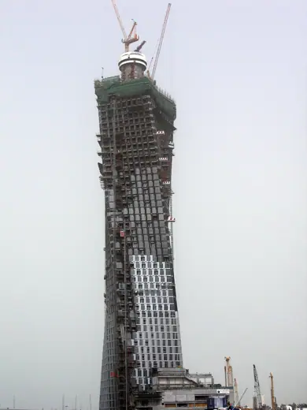
Cayan TowerSOM · 2013 CBS BuildingEero Saarinen · 1965
CBS BuildingEero Saarinen · 1965 CCTV HeadquartersOMA · 2012
CCTV HeadquartersOMA · 2012 Cedar Rock (Walter House)Frank Lloyd Wright · 1950
Cedar Rock (Walter House)Frank Lloyd Wright · 1950 Centennial HallMax Berg · 1913
Centennial HallMax Berg · 1913 Centennial Hall, Tokyo Institute of TechnologyKazuo Shinohara · 1987
Centennial Hall, Tokyo Institute of TechnologyKazuo Shinohara · 1987 Centraal BeheerHerman Hertzberger · 1972
Centraal BeheerHerman Hertzberger · 1972 Central European UniversityO'Donnell + Tuomey · 2016
Central European UniversityO'Donnell + Tuomey · 2016 Central Government Complex, TamarRocco Yim (Rocco Design Architects) · 2011
Central Government Complex, TamarRocco Yim (Rocco Design Architects) · 2011 Central Library (UNAM)Juan O'Gorman, Gustavo Saavedra, Juan Martínez de Velasco · 1956
Central Library (UNAM)Juan O'Gorman, Gustavo Saavedra, Juan Martínez de Velasco · 1956 Central MarketJean Desbois, Louis Chauchon · 1937
Central MarketJean Desbois, Louis Chauchon · 1937 Central Market, KoudougouLaurent Séchaud · 2005
Central Market, KoudougouLaurent Séchaud · 2005 Central Research Institute of Robotics and Technical CyberneticsStanislav Savin, Boris Artyushin · 1987
Central Research Institute of Robotics and Technical CyberneticsStanislav Savin, Boris Artyushin · 1987 Central Saint Martins, Granary BuildingStanton Williams · 2011
Central Saint Martins, Granary BuildingStanton Williams · 2011 Centre de Cultura Contemporània de Barcelona (CCCB)Viaplana i Piñón · 1994
Centre de Cultura Contemporània de Barcelona (CCCB)Viaplana i Piñón · 1994 Centre for Development StudiesLaurie Baker · 1971
Centre for Development StudiesLaurie Baker · 1971 Centre for Earth ArchitectureDiébédo Francis Kéré · 2010
Centre for Earth ArchitectureDiébédo Francis Kéré · 2010 Centre for Fine Arts (Bozar)Victor Horta · 1928
Centre for Fine Arts (Bozar)Victor Horta · 1928 Centre PompidouRenzo Piano, Richard Rogers · 1977
Centre PompidouRenzo Piano, Richard Rogers · 1977 Centre Pompidou-MetzShigeru Ban, Jean de Gastines · 2010
Centre Pompidou-MetzShigeru Ban, Jean de Gastines · 2010 Centro BotínRenzo Piano Building Workshop · 2017
Centro BotínRenzo Piano Building Workshop · 2017 Centro Cultural de CaliRogelio Salmona · 1990
Centro Cultural de CaliRogelio Salmona · 1990 Centro Cultural Gabriela MistralCristian Fernandez Eyzaguirre · 2010
Centro Cultural Gabriela MistralCristian Fernandez Eyzaguirre · 2010 Centro de Arte Moderna GulbenkianLeslie Martin · 1983
Centro de Arte Moderna GulbenkianLeslie Martin · 1983 Centro de Artes de SinesAires Mateus · 2005
Centro de Artes de SinesAires Mateus · 2005 Centro Simón Bolívar (El Silencio Towers)Cipriano Domínguez · 1954
Centro Simón Bolívar (El Silencio Towers)Cipriano Domínguez · 1954 Centro Urbano Presidente AlemánMario Pani · 1949
Centro Urbano Presidente AlemánMario Pani · 1949 Centrosoyuz BuildingLe Corbusier · 1936
Centrosoyuz BuildingLe Corbusier · 1936 Century Plaza TowersMinoru Yamasaki · 1975
Century Plaza TowersMinoru Yamasaki · 1975 CEPT UniversityB. V. Doshi · 1966
CEPT UniversityB. V. Doshi · 1966 Ceramic Park MinoArata Isozaki · 2002
Ceramic Park MinoArata Isozaki · 2002 Chaktomuk Conference HallVann Molyvann · 1961
Chaktomuk Conference HallVann Molyvann · 1961 Chand BaoriUnknown builders · c. 800
Chand BaoriUnknown builders · c. 800 Chapel of St. IgnatiusSteven Holl · 1997
Chapel of St. IgnatiusSteven Holl · 1997 Chapelle du RosaireHenri Matisse, Auguste Perret · 1951
Chapelle du RosaireHenri Matisse, Auguste Perret · 1951 Chassé TheaterHerman Hertzberger · 1995
Chassé TheaterHerman Hertzberger · 1995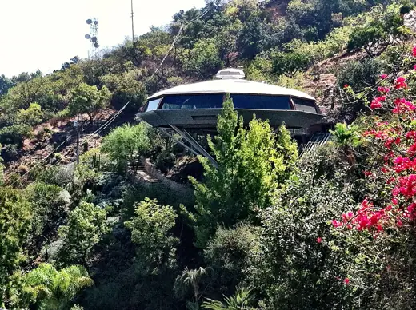
Chemosphere (Malin Residence)John Lautner · 1960 Chengqi Lou (Fujian Tulou)Hakka builders · 1709
Chengqi Lou (Fujian Tulou)Hakka builders · 1709 Chhatrapati Shivaji Maharaj International Airport Terminal 2Skidmore, Owings & Merrill · 2014
Chhatrapati Shivaji Maharaj International Airport Terminal 2Skidmore, Owings & Merrill · 2014 Chiang Kai-shek Memorial HallYang Cho-cheng · 1980
Chiang Kai-shek Memorial HallYang Cho-cheng · 1980 Chicago Board of Trade BuildingHolabird & Root · 1930
Chicago Board of Trade BuildingHolabird & Root · 1930 Chichu Art MuseumTadao Ando · 2004
Chichu Art MuseumTadao Ando · 2004 Chiesa del Santo VoltoMario Botta · 2006
Chiesa del Santo VoltoMario Botta · 2006 Chiesa Madre di GibellinaLudovico Quaroni · 2010
Chiesa Madre di GibellinaLudovico Quaroni · 2010 Chikatsu Asuka MuseumTadao Ando · 1994
Chikatsu Asuka MuseumTadao Ando · 1994 Children's Memorial, Yad VashemMoshe Safdie · 1987
Children's Memorial, Yad VashemMoshe Safdie · 1987 Children's Surgical Hospital, EntebbeRenzo Piano Building Workshop, TAMassociati · 2021
Children's Surgical Hospital, EntebbeRenzo Piano Building Workshop, TAMassociati · 2021 ChilehausFritz Höger · 1924
ChilehausFritz Höger · 1924 China Pavilion, Expo 2010He Jingtang · 2010
China Pavilion, Expo 2010He Jingtang · 2010 China Steel Corporation HeadquartersKris Yao · 2012
China Steel Corporation HeadquartersKris Yao · 2012 Chinggis Khaan Statue ComplexJ. Enkhjargal, D. Erdenebileg · 2008
Chinggis Khaan Statue ComplexJ. Enkhjargal, D. Erdenebileg · 2008 Chorsu BazaarVladimir Azimov and team · 1980
Chorsu BazaarVladimir Azimov and team · 1980 Choux de CréteilGérard Grandval · 1974
Choux de CréteilGérard Grandval · 1974 Christ Church LutheranEliel Saarinen · 1949
Christ Church LutheranEliel Saarinen · 1949 Christchurch Art Gallery Te Puna o WaiwhetūBuchan Group · 2003
Christchurch Art Gallery Te Puna o WaiwhetūBuchan Group · 2003 Christchurch Town HallWarren and Mahoney · 1972
Christchurch Town HallWarren and Mahoney · 1972 Christi AuferstehungGottfried Böhm · 1970
Christi AuferstehungGottfried Böhm · 1970 Christian Science PlazaAraldo Cossutta (I. M. Pei & Associates) · 1973
Christian Science PlazaAraldo Cossutta (I. M. Pei & Associates) · 1973 Chrysler BuildingWilliam Van Alen · 1930
Chrysler BuildingWilliam Van Alen · 1930 Chulalongkorn University Centenary ParkLandprocess · 2017
Chulalongkorn University Centenary ParkLandprocess · 2017 Church of Cristo ObreroEladio Dieste · 1960
Church of Cristo ObreroEladio Dieste · 1960 Church of La Medalla MilagrosaFélix Candela · 1955
Church of La Medalla MilagrosaFélix Candela · 1955 Church of Our Lady of the Rosary of FátimaPorfírio Pardal Monteiro · 1938
Church of Our Lady of the Rosary of FátimaPorfírio Pardal Monteiro · 1938 Church of Saint Anthony of PolanaNuno Craveiro Lopes · 1962
Church of Saint Anthony of PolanaNuno Craveiro Lopes · 1962 Church of Saint Francis of Assisi, PampulhaOscar Niemeyer · 1943
Church of Saint Francis of Assisi, PampulhaOscar Niemeyer · 1943 Church of Saint George, LalibelaZagwe builders · c. 1200
Church of Saint George, LalibelaZagwe builders · c. 1200 Church of Saint Peter, DuraznoEladio Dieste · 1971
Church of Saint Peter, DuraznoEladio Dieste · 1971 Church of Saint-Nicolas, HérémenceWalter Maria Förderer · 1971
Church of Saint-Nicolas, HérémenceWalter Maria Förderer · 1971 Church of San Giovanni BattistaMario Botta · 1996
Church of San Giovanni BattistaMario Botta · 1996 Church of St Joan of ArcLouis Arretche · 1979
Church of St Joan of ArcLouis Arretche · 1979 Church of St. Clement of OhridSlavko Brezoski · 1990
Church of St. Clement of OhridSlavko Brezoski · 1990 Church of the Autostrada del SoleGiovanni Michelucci · 1964
Church of the Autostrada del SoleGiovanni Michelucci · 1964 Church of the CrossAlvar Aalto · 1978
Church of the CrossAlvar Aalto · 1978 Church of the Holy SacrificeLeandro Locsin · 1955
Church of the Holy SacrificeLeandro Locsin · 1955 Church of the LightTadao Ando · 1989
Church of the LightTadao Ando · 1989 Church of the Most Sacred Heart of Our LordJože Plečnik · 1932
Church of the Most Sacred Heart of Our LordJože Plečnik · 1932 Church of the Three CrossesAlvar Aalto · 1958
Church of the Three CrossesAlvar Aalto · 1958 Church on the WaterTadao Ando · 1988
Church on the WaterTadao Ando · 1988 Church on the WindTadao Ando · 1986
Church on the WindTadao Ando · 1986 Cidade das ArtesChristian de Portzamparc · 2013
Cidade das ArtesChristian de Portzamparc · 2013 Cinema ImperoMario Messina · 1937
Cinema ImperoMario Messina · 1937 Cinémathèque française (former American Center)Frank Gehry · 1994
Cinémathèque française (former American Center)Frank Gehry · 1994 Circular School, Agios DimitriosTakis Zenetos · 1976
Circular School, Agios DimitriosTakis Zenetos · 1976 City Hall and Central Library, The HagueRichard Meier · 1995
City Hall and Central Library, The HagueRichard Meier · 1995 City Hall, LondonFoster and Partners · 2002
City Hall, LondonFoster and Partners · 2002 City of Arts and SciencesSantiago Calatrava · 1998
City of Arts and SciencesSantiago Calatrava · 1998 City of JusticeDavid Chipperfield Architects, b720 Fermín Vázquez Arquitectos · 2009
City of JusticeDavid Chipperfield Architects, b720 Fermín Vázquez Arquitectos · 2009 City Theater of TehranAli Sardar Afkhami · 1972
City Theater of TehranAli Sardar Afkhami · 1972 City-Hochhaus LeipzigHermann Henselmann · 1972
City-Hochhaus LeipzigHermann Henselmann · 1972 Cité de l'Océan et du SurfSteven Holl Architects with Solange Fabião · 2011
Cité de l'Océan et du SurfSteven Holl Architects with Solange Fabião · 2011 Cité de la MuetteEugène Beaudouin and Marcel Lods · 1934
Cité de la MuetteEugène Beaudouin and Marcel Lods · 1934 Cité de la musiqueChristian de Portzamparc · 1995
Cité de la musiqueChristian de Portzamparc · 1995 Cité de Refuge (Salvation Army Hostel)Le Corbusier · 1933
Cité de Refuge (Salvation Army Hostel)Le Corbusier · 1933 Ciudad AbiertaAlberto Cruz, Godofredo Iommi · 1971
Ciudad AbiertaAlberto Cruz, Godofredo Iommi · 1971 Ciudad Universitaria, UNAMMario Pani, Enrique del Moral · 1954
Ciudad Universitaria, UNAMMario Pani, Enrique del Moral · 1954 Civic Center of LimaAdolfo Córdova and team · 1974
Civic Center of LimaAdolfo Córdova and team · 1974 Claudio Santoro National TheatreOscar Niemeyer · 1966
Claudio Santoro National TheatreOscar Niemeyer · 1966 Clifton CathedralPercy Thomas Partnership · 1973
Clifton CathedralPercy Thomas Partnership · 1973 Clore Gallery, Tate BritainJames Stirling, Michael Wilford · 1987
Clore Gallery, Tate BritainJames Stirling, Michael Wilford · 1987 CN TowerJohn Andrews · 1976
CN TowerJohn Andrews · 1976 CNITBernard Zehrfuss, Nicolas Esquillan · 1958
CNITBernard Zehrfuss, Nicolas Esquillan · 1958 Co-Cathedral of the Great Mother of God (Gran Madre di Dio)Gio Ponti · 1970
Co-Cathedral of the Great Mother of God (Gran Madre di Dio)Gio Ponti · 1970 Cocoa HouseThe Plan Group (West Africa) · 1965
Cocoa HouseThe Plan Group (West Africa) · 1965 Coconut PalaceFrancisco Manosa · 1978
Coconut PalaceFrancisco Manosa · 1978 Colección de Arte Amalia Lacroze de FortabatRafael Viñoly · 2008
Colección de Arte Amalia Lacroze de FortabatRafael Viñoly · 2008 Coliseu do PortoCassiano Branco · 1941
Coliseu do PortoCassiano Branco · 1941 College of Social Sciences, National Taiwan University (Koo Chen-Fu Memorial Library)Toyo Ito · 2013
College of Social Sciences, National Taiwan University (Koo Chen-Fu Memorial Library)Toyo Ito · 2013 Collegio del ColleGiancarlo De Carlo · 1962
Collegio del ColleGiancarlo De Carlo · 1962 Cologne Central MosquePaul Bohm · 2017
Cologne Central MosquePaul Bohm · 2017 Columbus LighthouseJ. L. Gleave · 1992
Columbus LighthouseJ. L. Gleave · 1992 Commerzbank TowerFoster and Partners · 1997
Commerzbank TowerFoster and Partners · 1997 ConcertgebouwAdolf Leonard van Gendt · 1888
ConcertgebouwAdolf Leonard van Gendt · 1888 Concord PavilionFrank Gehry · 1975
Concord PavilionFrank Gehry · 1975 Conjunto JK (Conjunto Governador Kubitschek)Oscar Niemeyer · 1970
Conjunto JK (Conjunto Governador Kubitschek)Oscar Niemeyer · 1970 Conjunto NacionalDavid Libeskind · 1958
Conjunto NacionalDavid Libeskind · 1958 Constance Perkins HouseRichard Neutra · 1955
Constance Perkins HouseRichard Neutra · 1955 Constitutional Court of South AfricaOMM Design Workshop, Urban Solutions · 2004
Constitutional Court of South AfricaOMM Design Workshop, Urban Solutions · 2004 Contemporary Jewish MuseumDaniel Libeskind · 2008
Contemporary Jewish MuseumDaniel Libeskind · 2008 Convention Centre DublinKevin Roche · 2010
Convention Centre DublinKevin Roche · 2010 Copan BuildingOscar Niemeyer · 1966
Copan BuildingOscar Niemeyer · 1966 Copenhagen Opera HouseHenning Larsen · 2005
Copenhagen Opera HouseHenning Larsen · 2005 Copenhagen Police Headquarters (Politigården)Hack Kampmann, Aage Rafn · 1924
Copenhagen Police Headquarters (Politigården)Hack Kampmann, Aage Rafn · 1924 CopenHillBIG · 2019
CopenHillBIG · 2019 Coppelia Ice Cream ParlourMario Girona · 1966
Coppelia Ice Cream ParlourMario Girona · 1966 Corpus Christi Church, AachenRudolf Schwarz · 1930
Corpus Christi Church, AachenRudolf Schwarz · 1930 CorvialeMario Fiorentino · 1982
CorvialeMario Fiorentino · 1982 Cosmic Rays PavilionFélix Candela, Jorge González Reyna · 1951
Cosmic Rays PavilionFélix Candela, Jorge González Reyna · 1951 Coventry CathedralBasil Spence · 1962
Coventry CathedralBasil Spence · 1962 Covered Plaza, University City of CaracasCarlos Raúl Villanueva · 1954
Covered Plaza, University City of CaracasCarlos Raúl Villanueva · 1954 Crematorium HofheideRCR Arquitectes with Coussée & Goris · 2014
Crematorium HofheideRCR Arquitectes with Coussée & Goris · 2014 Crow Island SchoolPerkins, Wheeler & Will with Eliel and Eero Saarinen · 1940
Crow Island SchoolPerkins, Wheeler & Will with Eliel and Eero Saarinen · 1940 Crucible TheatreRHWL · 1971
Crucible TheatreRHWL · 1971 Crypt of Colonia GuellAntoni Gaudi · 1914
Crypt of Colonia GuellAntoni Gaudi · 1914 Crystal Bridges Museum of American ArtSafdie Architects · 2011
Crystal Bridges Museum of American ArtSafdie Architects · 2011 Crystal CathedralPhilip Johnson · 1980
Crystal CathedralPhilip Johnson · 1980 Cuadra San CristóbalLuis Barragán · 1968
Cuadra San CristóbalLuis Barragán · 1968 Cube HousesPiet Blom · 1984
Cube HousesPiet Blom · 1984 Cultural Center of the Philippines (Tanghalang Pambansa)Leandro Locsin · 1969
Cultural Center of the Philippines (Tanghalang Pambansa)Leandro Locsin · 1969 Cultural Palace of NationalitiesZhang Bo · 1959
Cultural Palace of NationalitiesZhang Bo · 1959 Curtain Wall HouseShigeru Ban · 1995
Curtain Wall HouseShigeru Ban · 1995 Curutchet HouseLe Corbusier · 1953
Curutchet HouseLe Corbusier · 1953 Cuvilliés TheatreFrançois de Cuvilliés · 1753
Cuvilliés TheatreFrançois de Cuvilliés · 1753 Cymbalista SynagogueMario Botta · 1998
Cymbalista SynagogueMario Botta · 1998 D. T. Suzuki MuseumYoshio Taniguchi · 2011
D. T. Suzuki MuseumYoshio Taniguchi · 2011 Daikanyama T-SiteKlein Dytham Architecture · 2011
Daikanyama T-SiteKlein Dytham Architecture · 2011 Dalarna Media LibraryADEPT · 2014
Dalarna Media LibraryADEPT · 2014 Dallas City HallI. M. Pei · 1978
Dallas City HallI. M. Pei · 1978 Dallas Museum of ArtEdward Larrabee Barnes · 1984
Dallas Museum of ArtEdward Larrabee Barnes · 1984 Dancing HouseVlado Milunic, Frank Gehry · 1996
Dancing HouseVlado Milunic, Frank Gehry · 1996 Danish Jewish MuseumDaniel Libeskind · 2004
Danish Jewish MuseumDaniel Libeskind · 2004 Danish Maritime MuseumBIG · 2013
Danish Maritime MuseumBIG · 2013 Dano Secondary SchoolDiébédo Francis Kéré · 2007
Dano Secondary SchoolDiébédo Francis Kéré · 2007 Darat al FununAmmar Khammash · 1993
Darat al FununAmmar Khammash · 1993 Darwin D. Martin HouseFrank Lloyd Wright · 1905
Darwin D. Martin HouseFrank Lloyd Wright · 1905 Das Gelbe HausValerio Olgiati · 1999
Das Gelbe HausValerio Olgiati · 1999 David H. Koch TheaterPhilip Johnson · 1964
David H. Koch TheaterPhilip Johnson · 1964 De KrookRCR Arquitectes, Coussee & Goris · 2017
De KrookRCR Arquitectes, Coussee & Goris · 2017 De KunstlinieSANAA · 2007
De KunstlinieSANAA · 2007 De La Warr PavilionErich Mendelsohn, Serge Chermayeff · 1935
De La Warr PavilionErich Mendelsohn, Serge Chermayeff · 1935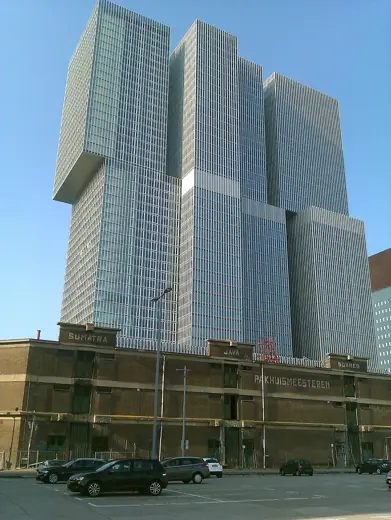
De RotterdamOMA · 2013 De VonkJ. J. P. Oud · 1918
De VonkJ. J. P. Oud · 1918 de Young MuseumHerzog & de Meuron · 2005
de Young MuseumHerzog & de Meuron · 2005 Deere & Company Administrative CenterEero Saarinen and Associates · 1964
Deere & Company Administrative CenterEero Saarinen and Associates · 1964 DeFlat KleiburgNL Architects, XVW architectuur · 2016
DeFlat KleiburgNL Architects, XVW architectuur · 2016 Deichman Bjørvika (Oslo Public Library)Lundhagem, Atelier Oslo · 2020
Deichman Bjørvika (Oslo Public Library)Lundhagem, Atelier Oslo · 2020 Delta ShelterTom Kundig (Olson Kundig) · 2005
Delta ShelterTom Kundig (Olson Kundig) · 2005 Den Blå Planet (National Aquarium Denmark)3XN · 2013
Den Blå Planet (National Aquarium Denmark)3XN · 2013 Dentsu Building (Caretta Shiodome)Jean Nouvel · 2002
Dentsu Building (Caretta Shiodome)Jean Nouvel · 2002 Depot Boijmans van BeuningenMVRDV · 2021
Depot Boijmans van BeuningenMVRDV · 2021 DerzhpromSergei Serafimov, Samuel Kravets · 1928
DerzhpromSergei Serafimov, Samuel Kravets · 1928 Des Moines Art CenterEliel Saarinen, I. M. Pei and Richard Meier · 1948
Des Moines Art CenterEliel Saarinen, I. M. Pei and Richard Meier · 1948 Design MuseumJohn Pawson, OMA · 2016
Design MuseumJohn Pawson, OMA · 2016 Design Museum HolonRon Arad · 2010
Design Museum HolonRon Arad · 2010 Design Research BuildingBenjamin Thompson & Associates · 1969
Design Research BuildingBenjamin Thompson & Associates · 1969 Deutsche Bank PlaceFoster + Partners · 2005
Deutsche Bank PlaceFoster + Partners · 2005 Deutsche Oper BerlinFritz Bornemann · 1961
Deutsche Oper BerlinFritz Bornemann · 1961 Deutsches Architekturmuseum (DAM)Oswald Mathias Ungers · 1984
Deutsches Architekturmuseum (DAM)Oswald Mathias Ungers · 1984 Dhahran Air TerminalMinoru Yamasaki · 1961
Dhahran Air TerminalMinoru Yamasaki · 1961 Diagoon HousesHerman Hertzberger · 1970
Diagoon HousesHerman Hertzberger · 1970 Dialogue Centre PrzełomyKWK Promes (Robert Konieczny) · 2016
Dialogue Centre PrzełomyKWK Promes (Robert Konieczny) · 2016 Diamond Ranch High SchoolMorphosis, Thom Mayne · 2000
Diamond Ranch High SchoolMorphosis, Thom Mayne · 2000 Diar es SaâdaFernand Pouillon · 1953
Diar es SaâdaFernand Pouillon · 1953 Diego Rivera and Frida Kahlo House-StudioJuan O'Gorman · 1932
Diego Rivera and Frida Kahlo House-StudioJuan O'Gorman · 1932 Dior OmotesandoSANAA (Kazuyo Sejima and Ryue Nishizawa) · 2003
Dior OmotesandoSANAA (Kazuyo Sejima and Ryue Nishizawa) · 2003 DipoliReima Pietilä, Raili Pietilä · 1966
DipoliReima Pietilä, Raili Pietilä · 1966 Dirty HouseDavid Adjaye · 2002
Dirty HouseDavid Adjaye · 2002 Dispensario AntituberculosoJosep Lluís Sert, Josep Torres Clavé, Joan Baptista Subirana (GATCPAC) · 1938
Dispensario AntituberculosoJosep Lluís Sert, Josep Torres Clavé, Joan Baptista Subirana (GATCPAC) · 1938 Dixon Street FlatsGordon Wilson (Department of Housing Construction) · 1944
Dixon Street FlatsGordon Wilson (Department of Housing Construction) · 1944 Diözesanmuseum PaderbornGottfried Böhm · 1975
Diözesanmuseum PaderbornGottfried Böhm · 1975 Djamaa el DjazaïrKSP Jürgen Engel Architekten · 2019
Djamaa el DjazaïrKSP Jürgen Engel Architekten · 2019 Djinguereber MosqueAbu Ishaq es-Sahili · 1327
Djinguereber MosqueAbu Ishaq es-Sahili · 1327 Dnieper Hydroelectric StationViktor Vesnin, Nikolai Kolli and team · 1932
Dnieper Hydroelectric StationViktor Vesnin, Nikolai Kolli and team · 1932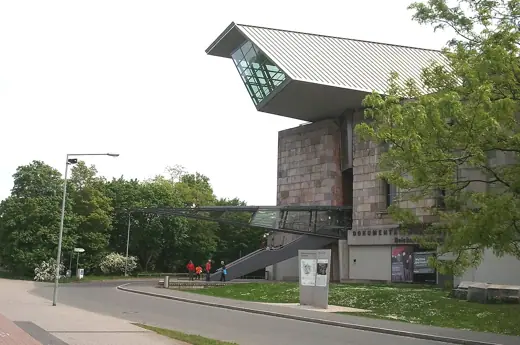
Documentation Center Nazi Party Rally GroundsGünther Domenig · 2001 Doha TowerJean Nouvel · 2012
Doha TowerJean Nouvel · 2012 Dokk1Schmidt Hammer Lassen Architects, Kristine Jensen · 2015
Dokk1Schmidt Hammer Lassen Architects, Kristine Jensen · 2015 Domain Park FlatsRobin Boyd · 1962
Domain Park FlatsRobin Boyd · 1962 Dome of SoltaniyehIlkhanid builders · 1312
Dome of SoltaniyehIlkhanid builders · 1312 Dominican Chapel, IbadanDemas Nwoko · 1970
Dominican Chapel, IbadanDemas Nwoko · 1970 Dominion TowerZaha Hadid Architects · 2015
Dominion TowerZaha Hadid Architects · 2015 Dominus WineryHerzog & de Meuron · 1997
Dominus WineryHerzog & de Meuron · 1997 DomusArata Isozaki · 1995
DomusArata Isozaki · 1995 Donau City ChurchHeinz Tesar · 2000
Donau City ChurchHeinz Tesar · 2000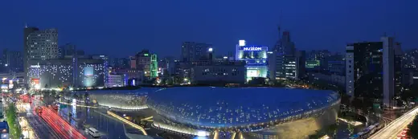
Dongdaemun Design PlazaZaha Hadid · 2014 Dornbusch ChurchMeixner Schlüter Wendt · 2005
Dornbusch ChurchMeixner Schlüter Wendt · 2005 Dorset Street FlatsMiles Warren · 1957
Dorset Street FlatsMiles Warren · 1957 Douaumont OssuaryLéon Azéma, Max Edrei and Jacques Hulot · 1932
Douaumont OssuaryLéon Azéma, Max Edrei and Jacques Hulot · 1932 Dr Chau Chak Wing BuildingFrank Gehry · 2015
Dr Chau Chak Wing BuildingFrank Gehry · 2015 DR KoncerthusetJean Nouvel · 2009
DR KoncerthusetJean Nouvel · 2009 Dresden Central StationErnst Giese and Paul Weidner; roof by Foster + Partners · 1898
Dresden Central StationErnst Giese and Paul Weidner; roof by Foster + Partners · 1898 Dubai World Trade CentreJohn R. Harris · 1979
Dubai World Trade CentreJohn R. Harris · 1979 Dudhsagar DairyAchyut Kanvinde · 1970
Dudhsagar DairyAchyut Kanvinde · 1970 Dunelm HouseArchitects' Co-Partnership (Richard Raines, Michael Powers) with Ove Arup · 1966
Dunelm HouseArchitects' Co-Partnership (Richard Raines, Michael Powers) with Ove Arup · 1966 Dutch Pavilion, Venice BiennaleGerrit Rietveld · 1954
Dutch Pavilion, Venice BiennaleGerrit Rietveld · 1954 DZ Bank BuildingFrank Gehry · 2001
DZ Bank BuildingFrank Gehry · 2001 E-1027Eileen Gray and Jean Badovici · 1929
E-1027Eileen Gray and Jean Badovici · 1929 Eames HouseCharles and Ray Eames · 1949
Eames HouseCharles and Ray Eames · 1949 East Hall of Foguang TempleTang dynasty builders (monk Yuancheng) · 857
East Hall of Foguang TempleTang dynasty builders (monk Yuancheng) · 857 Eastern City Gate (Rudo)Vera Ćirković (architect), Milutin Jerotijević (engineer) · 1976
Eastern City Gate (Rudo)Vera Ćirković (architect), Milutin Jerotijević (engineer) · 1976 Eastgate CentreMick Pearce · 1996
Eastgate CentreMick Pearce · 1996 ECLAC BuildingEmilio Duhart · 1966
ECLAC BuildingEmilio Duhart · 1966 Eden ProjectNicholas Grimshaw · 2001
Eden ProjectNicholas Grimshaw · 2001 Edificio BasurtoFrancisco J. Serrano · 1945
Edificio BasurtoFrancisco J. Serrano · 1945 Edificio Carrión (Edificio Capitol)Luis Martínez-Feduchi and Vicente Eced · 1933
Edificio Carrión (Edificio Capitol)Luis Martínez-Feduchi and Vicente Eced · 1933 Edificio GirasolJosep Antoni Coderch · 1966
Edificio GirasolJosep Antoni Coderch · 1966 Edificio López SerranoRicardo Mira, Miguel Rosich · 1932
Edificio López SerranoRicardo Mira, Miguel Rosich · 1932 Edificio PanamericanoRaúl Sichero · 1964
Edificio PanamericanoRaúl Sichero · 1964 Edifício EstherÁlvaro Vital Brazil, Adhemar Marinho · 1938
Edifício EstherÁlvaro Vital Brazil, Adhemar Marinho · 1938 Edifício LouveiraVilanova Artigas, Carlos Cascaldi · 1949
Edifício LouveiraVilanova Artigas, Carlos Cascaldi · 1949 Edifício NiemeyerOscar Niemeyer · 1960
Edifício NiemeyerOscar Niemeyer · 1960 Edo-Tokyo MuseumKiyonori Kikutake · 1993
Edo-Tokyo MuseumKiyonori Kikutake · 1993 EDP HeadquartersAires Mateus (Manuel and Francisco Aires Mateus) · 2015
EDP HeadquartersAires Mateus (Manuel and Francisco Aires Mateus) · 2015 EDSA ShrineFrancisco Mañosa · 1989
EDSA ShrineFrancisco Mañosa · 1989 Education City MosqueMangera Yvars Architects · 2015
Education City MosqueMangera Yvars Architects · 2015 EducatoriumOMA · 1997
EducatoriumOMA · 1997 Eiffel TowerGustave Eiffel (with Koechlin, Nouguier and Sauvestre) · 1889
Eiffel TowerGustave Eiffel (with Koechlin, Nouguier and Sauvestre) · 1889 Einstein TowerErich Mendelsohn · 1921
Einstein TowerErich Mendelsohn · 1921 Ekeberg RestaurantLars Backer · 1929
Ekeberg RestaurantLars Backer · 1929 El Batel Auditorium and Congress CentreSelgasCano (José Selgas, Lucía Cano) · 2011
El Batel Auditorium and Congress CentreSelgasCano (José Selgas, Lucía Cano) · 2011 El CaprichoAntoni Gaudí · 1885
El CaprichoAntoni Gaudí · 1885 El Colegio de MéxicoTeodoro González de León, Abraham Zabludovsky · 1976
El Colegio de MéxicoTeodoro González de León, Abraham Zabludovsky · 1976 El HelicoideJorge Romero Gutiérrez, Dirk Bornhorst · 1961
El HelicoideJorge Romero Gutiérrez, Dirk Bornhorst · 1961 ElbphilharmonieHerzog & de Meuron · 2017
ElbphilharmonieHerzog & de Meuron · 2017 Elementary School, Fagnano OlonaAldo Rossi · 1976
Elementary School, Fagnano OlonaAldo Rossi · 1976 Elephant BuildingOng-ard Satrabhandhu · 1997
Elephant BuildingOng-ard Satrabhandhu · 1997 Eli and Edythe Broad Art MuseumZaha Hadid Architects · 2012
Eli and Edythe Broad Art MuseumZaha Hadid Architects · 2012 Embassy of Belgium, New DelhiSatish Gujral · 1983
Embassy of Belgium, New DelhiSatish Gujral · 1983 Embassy of Kuwait, TokyoKenzo Tange · 1970
Embassy of Kuwait, TokyoKenzo Tange · 1970 Emerson College Los AngelesMorphosis (Thom Mayne) · 2014
Emerson College Los AngelesMorphosis (Thom Mayne) · 2014 Emirates TowersHazel Wong · 2000
Emirates TowersHazel Wong · 2000 Engel HouseZe'ev Rechter · 1933
Engel HouseZe'ev Rechter · 1933 Enso-Gutzeit Headquarters (Stora Enso)Alvar Aalto · 1962
Enso-Gutzeit Headquarters (Stora Enso)Alvar Aalto · 1962 Entebbe Children's Surgical HospitalRenzo Piano · 2021
Entebbe Children's Surgical HospitalRenzo Piano · 2021 Entrepreneurship Development Institute of IndiaBimal Hasmukh Patel · 1987
Entrepreneurship Development Institute of IndiaBimal Hasmukh Patel · 1987 Equitable Building (Commonwealth Building)Pietro Belluschi · 1948
Equitable Building (Commonwealth Building)Pietro Belluschi · 1948 Erdene Zuu MonasteryAbtai Sain Khan · 1585
Erdene Zuu MonasteryAbtai Sain Khan · 1585 Espaces d'AbraxasRicardo Bofill · 1983
Espaces d'AbraxasRicardo Bofill · 1983 Esplanade - Theatres on the BayDP Architects, Michael Wilford · 2002
Esplanade - Theatres on the BayDP Architects, Michael Wilford · 2002 Estadio AztecaPedro Ramírez Vázquez, Rafael Mijares · 1966
Estadio AztecaPedro Ramírez Vázquez, Rafael Mijares · 1966 Estadio CentenarioJuan Antonio Scasso · 1930
Estadio CentenarioJuan Antonio Scasso · 1930 Estadio Olímpico UniversitarioAugusto Pérez Palacios, Raúl Salinas, Jorge Bravo Moro · 1952
Estadio Olímpico UniversitarioAugusto Pérez Palacios, Raúl Salinas, Jorge Bravo Moro · 1952 Estadio Universitario de CaracasCarlos Raul Villanueva · 1951
Estadio Universitario de CaracasCarlos Raul Villanueva · 1951 Estonian National MuseumDorell Ghotmeh Tane · 2016
Estonian National MuseumDorell Ghotmeh Tane · 2016 Etihad MuseumMoriyama & Teshima Architects · 2016
Etihad MuseumMoriyama & Teshima Architects · 2016 Eureka TowerFender Katsalidis · 2006
Eureka TowerFender Katsalidis · 2006 European Central BankCoop Himmelb(l)au · 2014
European Central BankCoop Himmelb(l)au · 2014 European Court of Human Rights BuildingRichard Rogers Partnership with Claude Bucher · 1994
European Court of Human Rights BuildingRichard Rogers Partnership with Claude Bucher · 1994 European Investment BankIngenhoven Architects · 2008
European Investment BankIngenhoven Architects · 2008 European Solidarity CentreFort Architekci · 2014
European Solidarity CentreFort Architekci · 2014 Euskalduna Conference Centre and Concert HallFederico Soriano and Dolores Palacios · 1999
Euskalduna Conference Centre and Concert HallFederico Soriano and Dolores Palacios · 1999 Everson Museum of ArtI. M. Pei · 1968
Everson Museum of ArtI. M. Pei · 1968 Everyman TheatreHaworth Tompkins · 2014
Everyman TheatreHaworth Tompkins · 2014 EvoluonLouis Kalff, Leo de Bever · 1966
EvoluonLouis Kalff, Leo de Bever · 1966 Evolution TowerRMJM · 2014
Evolution TowerRMJM · 2014 Ewha Campus ComplexDominique Perrault · 2008
Ewha Campus ComplexDominique Perrault · 2008 Exchange House, BroadgateSkidmore, Owings & Merrill · 1990
Exchange House, BroadgateSkidmore, Owings & Merrill · 1990 Faculty of Architecture, University of PortoÁlvaro Siza · 1996
Faculty of Architecture, University of PortoÁlvaro Siza · 1996 Faculty of Architecture, University of the RepublicRomán Fresnedo Siri, Mario Muccinelli · 1946
Faculty of Architecture, University of the RepublicRomán Fresnedo Siri, Mario Muccinelli · 1946 Faculty of Engineering, University of the RepublicJulio Vilamajó · 1945
Faculty of Engineering, University of the RepublicJulio Vilamajó · 1945 Faculty of Fine Arts, University of DhakaMuzharul Islam · 1956
Faculty of Fine Arts, University of DhakaMuzharul Islam · 1956 Faculty of Languages, History and GeographyBruno Taut · 1940
Faculty of Languages, History and GeographyBruno Taut · 1940 Fagus FactoryWalter Gropius, Adolf Meyer · 1911
Fagus FactoryWalter Gropius, Adolf Meyer · 1911 Faisal MosqueVedat Dalokay · 1986
Faisal MosqueVedat Dalokay · 1986 FallingwaterFrank Lloyd Wright · 1939
FallingwaterFrank Lloyd Wright · 1939 Faneuil Hall Marketplace (Quincy Market)Benjamin Thompson & Associates (renovation); Alexander Parris (1826 market) · 1976
Faneuil Hall Marketplace (Quincy Market)Benjamin Thompson & Associates (renovation); Alexander Parris (1826 market) · 1976 Farnsworth HouseMies van der Rohe · 1951
Farnsworth HouseMies van der Rohe · 1951 Faro del ComercioLuis Barragán, Raúl Ferrera · 1984
Faro del ComercioLuis Barragán, Raúl Ferrera · 1984 Fashion and Textile MuseumRicardo Legorreta · 2003
Fashion and Textile MuseumRicardo Legorreta · 2003 FAU-USP BuildingVilanova Artigas · 1969
FAU-USP BuildingVilanova Artigas · 1969 Featherston HouseRobin Boyd (Romberg & Boyd) · 1969
Featherston HouseRobin Boyd (Romberg & Boyd) · 1969 Federal ChancelleryAxel Schultes and Charlotte Frank · 2001
Federal ChancelleryAxel Schultes and Charlotte Frank · 2001 Federal Palace of SwitzerlandHans Wilhelm Auer · 1902
Federal Palace of SwitzerlandHans Wilhelm Auer · 1902 Federation of Industries BuildingRifat Chadirji · 1966
Federation of Industries BuildingRifat Chadirji · 1966 Federation SquareLab Architecture Studio, Bates Smart · 2002
Federation SquareLab Architecture Studio, Bates Smart · 2002 Felix Nussbaum HausDaniel Libeskind · 1998
Felix Nussbaum HausDaniel Libeskind · 1998 Fernsehturm BerlinHermann Henselmann, Fritz Dieter and Günter Franke · 1969
Fernsehturm BerlinHermann Henselmann, Fritz Dieter and Günter Franke · 1969 Festspielhaus Baden-BadenWilhelm Holzbauer · 1998
Festspielhaus Baden-BadenWilhelm Holzbauer · 1998 Feynan EcolodgeAmmar Khammash · 2005
Feynan EcolodgeAmmar Khammash · 2005 Fiat Tagliero BuildingGiuseppe Pettazzi · 1938
Fiat Tagliero BuildingGiuseppe Pettazzi · 1938 Fiera MilanoMassimiliano Fuksas · 2005
Fiera MilanoMassimiliano Fuksas · 2005 FilmhusetPeter Celsing · 1971
FilmhusetPeter Celsing · 1971 Final Wooden HouseSou Fujimoto · 2008
Final Wooden HouseSou Fujimoto · 2008 Findeco HouseDušan Milenković, Branimir Ganović · 1978
Findeco HouseDušan Milenković, Branimir Ganović · 1978 Finlandia HallAlvar Aalto · 1971
Finlandia HallAlvar Aalto · 1971 Finsbury Health CentreBerthold Lubetkin and Tecton · 1938
Finsbury Health CentreBerthold Lubetkin and Tecton · 1938 Fiore di pietraMario Botta · 2017
Fiore di pietraMario Botta · 2017 Firenze Santa Maria Novella StationGiovanni Michelucci · 1935
Firenze Santa Maria Novella StationGiovanni Michelucci · 1935 First Christian ChurchEliel Saarinen · 1942
First Christian ChurchEliel Saarinen · 1942 Fisher BuildingAlbert Kahn · 1928
Fisher BuildingAlbert Kahn · 1928 Fisher Center for the Performing ArtsFrank Gehry · 2003
Fisher Center for the Performing ArtsFrank Gehry · 2003 Fisher HouseLouis Kahn · 1967
Fisher HouseLouis Kahn · 1967 Fix Brewery (National Museum of Contemporary Art)Takis Zenetos · 1961
Fix Brewery (National Museum of Contemporary Art)Takis Zenetos · 1961 Flame TowersHOK · 2012
Flame TowersHOK · 2012 Flamengo ParkRoberto Burle Marx, Affonso Eduardo Reidy · 1965
Flamengo ParkRoberto Burle Marx, Affonso Eduardo Reidy · 1965 Florey BuildingJames Stirling · 1971
Florey BuildingJames Stirling · 1971 Florya Atatürk Marine MansionSeyfi Arkan · 1935
Florya Atatürk Marine MansionSeyfi Arkan · 1935 Flower Kiosk, Malmö Eastern CemeterySigurd Lewerentz · 1969
Flower Kiosk, Malmö Eastern CemeterySigurd Lewerentz · 1969 Flower TowerÉdouard François · 2004
Flower TowerÉdouard François · 2004 Flying Saucer (UkrINTEI)Florian Yuriev, Lev Novikov · 1971
Flying Saucer (UkrINTEI)Florian Yuriev, Lev Novikov · 1971 FOCSA BuildingErnesto Gómez Sampera, Martín Domínguez Esteban · 1956
FOCSA BuildingErnesto Gómez Sampera, Martín Domínguez Esteban · 1956 Fogo Island InnTodd Saunders · 2013
Fogo Island InnTodd Saunders · 2013 Folk Arts TheaterLeandro Locsin · 1974
Folk Arts TheaterLeandro Locsin · 1974 Fondation Avicenne (Maison de l'Iran)Claude Parent, André Bloc, Mohsen Foroughi, Heydar Ghiai · 1969
Fondation Avicenne (Maison de l'Iran)Claude Parent, André Bloc, Mohsen Foroughi, Heydar Ghiai · 1969 Fondation BeyelerRenzo Piano · 1997
Fondation BeyelerRenzo Piano · 1997 Fondation CartierJean Nouvel · 1994
Fondation CartierJean Nouvel · 1994 Fondation Jérôme Seydoux-PathéRenzo Piano Building Workshop · 2014
Fondation Jérôme Seydoux-PathéRenzo Piano Building Workshop · 2014 Fondation Louis VuittonFrank Gehry · 2014
Fondation Louis VuittonFrank Gehry · 2014 Fondation MaeghtJosep Lluis Sert · 1964
Fondation MaeghtJosep Lluis Sert · 1964 Fondation Martin BodmerMario Botta · 2003
Fondation Martin BodmerMario Botta · 2003 Fondazione Giangiacomo FeltrinelliHerzog & de Meuron · 2016
Fondazione Giangiacomo FeltrinelliHerzog & de Meuron · 2016 Fondazione PradaOMA · 2015
Fondazione PradaOMA · 2015 Forbidden CityKuai Xiang (Ming imperial builders) · 1420
Forbidden CityKuai Xiang (Ming imperial builders) · 1420 Ford Foundation BuildingKevin Roche, John Dinkeloo · 1967
Ford Foundation BuildingKevin Roche, John Dinkeloo · 1967 Forma Furniture ShowroomPaulo Mendes da Rocha · 1994
Forma Furniture ShowroomPaulo Mendes da Rocha · 1994 Forskaren3XN · 2024
Forskaren3XN · 2024 Forsyth Barr StadiumPopulous and Jasmax · 2011
Forsyth Barr StadiumPopulous and Jasmax · 2011 Fort JesusGiovanni Battista Cairati · 1596
Fort JesusGiovanni Battista Cairati · 1596 Fountain PlaceHenry N. Cobb (Pei Cobb Freed & Partners) · 1986
Fountain PlaceHenry N. Cobb (Pei Cobb Freed & Partners) · 1986 Four Domes PavilionHans Poelzig · 1913
Four Domes PavilionHans Poelzig · 1913 Four Seasons Centre for the Performing ArtsDiamond Schmitt Architects · 2006
Four Seasons Centre for the Performing ArtsDiamond Schmitt Architects · 2006 FRAC Nord-Pas de CalaisLacaton & Vassal · 2013
FRAC Nord-Pas de CalaisLacaton & Vassal · 2013 FRAC Provence-Alpes-Côte d'AzurKengo Kuma · 2013
FRAC Provence-Alpes-Côte d'AzurKengo Kuma · 2013 Fragrant Hill HotelI. M. Pei · 1982
Fragrant Hill HotelI. M. Pei · 1982 Franklin CourtVenturi and Rauch (Robert Venturi, Denise Scott Brown) · 1976
Franklin CourtVenturi and Rauch (Robert Venturi, Denise Scott Brown) · 1976 Franklin D. Roosevelt Four Freedoms ParkLouis Kahn · 2012
Franklin D. Roosevelt Four Freedoms ParkLouis Kahn · 2012 Frauenmuseum HittisauCukrowicz Nachbaur · 2000
Frauenmuseum HittisauCukrowicz Nachbaur · 2000 Fredensborg HousesJørn Utzon · 1963
Fredensborg HousesJørn Utzon · 1963 Frederic C. Hamilton Building, Denver Art MuseumStudio Daniel Libeskind with Davis Partnership · 2006
Frederic C. Hamilton Building, Denver Art MuseumStudio Daniel Libeskind with Davis Partnership · 2006 Freer Gallery of ArtCharles A. Platt · 1923
Freer Gallery of ArtCharles A. Platt · 1923 French Communist Party HeadquartersOscar Niemeyer · 1971
French Communist Party HeadquartersOscar Niemeyer · 1971 Frey House IIAlbert Frey · 1964
Frey House IIAlbert Frey · 1964 Friendship CentreKashef Mahboob Chowdhury · 2011
Friendship CentreKashef Mahboob Chowdhury · 2011 Friendship Hospital SatkhiraKashef Mahboob Chowdhury · 2018
Friendship Hospital SatkhiraKashef Mahboob Chowdhury · 2018 Fuji KindergartenTezuka Architects · 2007
Fuji KindergartenTezuka Architects · 2007 Fuji Television BuildingKenzō Tange · 1996
Fuji Television BuildingKenzō Tange · 1996 Fujisawa Municipal Gymnasium (Akibadai)Fumihiko Maki · 1984
Fujisawa Municipal Gymnasium (Akibadai)Fumihiko Maki · 1984 Fukuoka Art MuseumKunio Maekawa · 1979
Fukuoka Art MuseumKunio Maekawa · 1979 Fundació Joan MiróJosep Lluís Sert · 1975
Fundació Joan MiróJosep Lluís Sert · 1975 Fundació Pilar i Joan Miró, Moneo BuildingRafael Moneo · 1992
Fundació Pilar i Joan Miró, Moneo BuildingRafael Moneo · 1992 Funkturm BerlinHeinrich Straumer · 1926
Funkturm BerlinHeinrich Straumer · 1926 Futuna ChapelJohn Scott · 1961
Futuna ChapelJohn Scott · 1961 Future University HakodateRiken Yamamoto · 2000
Future University HakodateRiken Yamamoto · 2000 Futuro HouseMatti Suuronen · 1968
Futuro HouseMatti Suuronen · 1968 Gabriel García Márquez Cultural CenterRogelio Salmona · 2008
Gabriel García Márquez Cultural CenterRogelio Salmona · 2008 Gaddafi StadiumNasreddin Murat-Khan; Nayyar Ali Dada (1996 redesign) · 1959
Gaddafi StadiumNasreddin Murat-Khan; Nayyar Ali Dada (1996 redesign) · 1959 Galaxy SOHOZaha Hadid Architects · 2012
Galaxy SOHOZaha Hadid Architects · 2012 Galeries Lafayette BerlinJean Nouvel · 1996
Galeries Lafayette BerlinJean Nouvel · 1996 Galician Centre of Contemporary Art (CGAC)Álvaro Siza · 1993
Galician Centre of Contemporary Art (CGAC)Álvaro Siza · 1993 Galileo Galilei PlanetariumEnrique Jan · 1966
Galileo Galilei PlanetariumEnrique Jan · 1966 Galleria Department Store (West)UNStudio · 2004
Galleria Department Store (West)UNStudio · 2004 Galleria Vittorio Emanuele IIGiuseppe Mengoni · 1877
Galleria Vittorio Emanuele IIGiuseppe Mengoni · 1877 Gallery of Horyuji TreasuresYoshio Taniguchi · 1999
Gallery of Horyuji TreasuresYoshio Taniguchi · 1999 Gallery of Modern ArtKerry Clare, Lindsay Clare · 2006
Gallery of Modern ArtKerry Clare, Lindsay Clare · 2006 Gandhi BhawanPierre Jeanneret · 1962
Gandhi BhawanPierre Jeanneret · 1962 Gandhi Smarak SangrahalayaCharles Correa · 1963
Gandhi Smarak SangrahalayaCharles Correa · 1963 Gando Primary SchoolDiébédo Francis Kéré · 2001
Gando Primary SchoolDiébédo Francis Kéré · 2001 Garage Museum of Contemporary ArtOMA · 2015
Garage Museum of Contemporary ArtOMA · 2015 Garage with Chauffeur's FlatGerrit Rietveld · 1928
Garage with Chauffeur's FlatGerrit Rietveld · 1928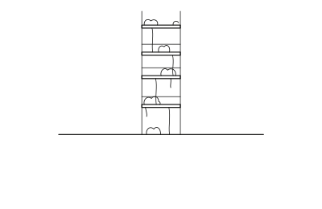
Garden & HouseRyue Nishizawa · 2011 Garden of Fine Arts, KyotoTadao Ando · 1994
Garden of Fine Arts, KyotoTadao Ando · 1994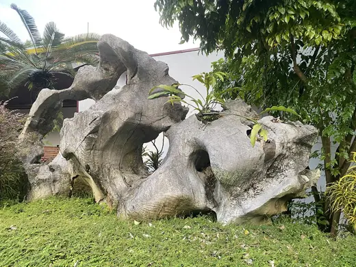
Gardens by the Bay Cooled ConservatoriesWilkinsonEyre · 2012 Gare do OrienteSantiago Calatrava · 1998
Gare do OrienteSantiago Calatrava · 1998 Gartenstadt FalkenbergBruno Taut · 1916
Gartenstadt FalkenbergBruno Taut · 1916 Gas Natural BuildingEnric Miralles, Benedetta Tagliabue · 2005
Gas Natural BuildingEnric Miralles, Benedetta Tagliabue · 2005 Gasometer B, ViennaCoop Himmelb(l)au · 2001
Gasometer B, ViennaCoop Himmelb(l)au · 2001 Gate of EuropePhilip Johnson, John Burgee · 1996
Gate of EuropePhilip Johnson, John Burgee · 1996 Gateshead Millennium BridgeWilkinsonEyre, Gifford · 2001
Gateshead Millennium BridgeWilkinsonEyre, Gifford · 2001 Gateway ArchEero Saarinen · 1965
Gateway ArchEero Saarinen · 1965 Gavina ShowroomCarlo Scarpa · 1963
Gavina ShowroomCarlo Scarpa · 1963 GC Prostho Museum Research CenterKengo Kuma · 2010
GC Prostho Museum Research CenterKengo Kuma · 2010 Geelong Library and Heritage CentreARM Architecture · 2015
Geelong Library and Heritage CentreARM Architecture · 2015 Gehry ResidenceFrank Gehry · 1978
Gehry ResidenceFrank Gehry · 1978 Gehry TowerFrank Gehry · 2001
Gehry TowerFrank Gehry · 2001 Geisel LibraryWilliam Pereira · 1970
Geisel LibraryWilliam Pereira · 1970 Gemini ResidenceMVRDV · 2005
Gemini ResidenceMVRDV · 2005 General Archive of the NationRogelio Salmona · 1994
General Archive of the NationRogelio Salmona · 1994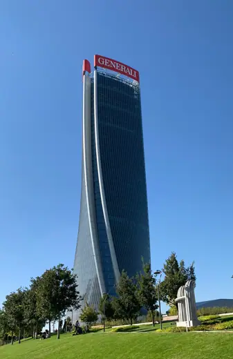
Generali TowerZaha Hadid · 2017 Genex TowerMihajlo Mitrović · 1980
Genex TowerMihajlo Mitrović · 1980 Genova San Giorgio BridgeRenzo Piano · 2020
Genova San Giorgio BridgeRenzo Piano · 2020 German Embassy, Saint PetersburgPeter Behrens · 1913
German Embassy, Saint PetersburgPeter Behrens · 1913 German Environment Agency (Umweltbundesamt), DessauSauerbruch Hutton · 2005
German Environment Agency (Umweltbundesamt), DessauSauerbruch Hutton · 2005 German Historical Museum, Pei WingI. M. Pei · 2003
German Historical Museum, Pei WingI. M. Pei · 2003 German Maritime Museum (Scharoun building)Hans Scharoun · 1975
German Maritime Museum (Scharoun building)Hans Scharoun · 1975 GES-2 House of CultureRenzo Piano Building Workshop · 2021
GES-2 House of CultureRenzo Piano Building Workshop · 2021 Geschwister-Scholl-SchuleHans Scharoun · 1962
Geschwister-Scholl-SchuleHans Scharoun · 1962 Getty CenterRichard Meier · 1997
Getty CenterRichard Meier · 1997 GewandhausRudolf Skoda · 1981
GewandhausRudolf Skoda · 1981 Gifu Kitagata ApartmentKazuyo Sejima · 1998
Gifu Kitagata ApartmentKazuyo Sejima · 1998 Gimnasio MaravillasAlejandro de la Sota · 1962
Gimnasio MaravillasAlejandro de la Sota · 1962 Gipsoteca CanovianaCarlo Scarpa · 1957
Gipsoteca CanovianaCarlo Scarpa · 1957 Glasgow School of ArtCharles Rennie Mackintosh · 1909
Glasgow School of ArtCharles Rennie Mackintosh · 1909 Glaspalast SindelfingenBehnisch & Partner · 1977
Glaspalast SindelfingenBehnisch & Partner · 1977 Glass HousePhilip Johnson · 1949
Glass HousePhilip Johnson · 1949 Glass House, SeopjikojiTadao Ando · 2008
Glass House, SeopjikojiTadao Ando · 2008 Glass Pavilion, Toledo Museum of ArtSANAA · 2006
Glass Pavilion, Toledo Museum of ArtSANAA · 2006 Gobierno Civil de TarragonaAlejandro de la Sota · 1964
Gobierno Civil de TarragonaAlejandro de la Sota · 1964 Goce Delčev Student DormitoryGeorgi Konstantinovski · 1977
Goce Delčev Student DormitoryGeorgi Konstantinovski · 1977 GoetheanumRudolf Steiner · 1928
GoetheanumRudolf Steiner · 1928 GolcondeAntonin Raymond, George Nakashima · 1945
GolcondeAntonin Raymond, George Nakashima · 1945 Golden Mile ComplexDesign Partnership (Gan Eng Oon, William Lim, Tay Kheng Soon) · 1973
Golden Mile ComplexDesign Partnership (Gan Eng Oon, William Lim, Tay Kheng Soon) · 1973 Goldsmith StreetMikhail Riches with Cathy Hawley · 2019
Goldsmith StreetMikhail Riches with Cathy Hawley · 2019 Gosplan GarageKonstantin Melnikov · 1936
Gosplan GarageKonstantin Melnikov · 1936 Gosstrakh ApartmentsMoisei Ginzburg · 1927
Gosstrakh ApartmentsMoisei Ginzburg · 1927 Gothenburg Concert HallNils Einar Eriksson · 1935
Gothenburg Concert HallNils Einar Eriksson · 1935 Gothenburg Law Courts ExtensionGunnar Asplund · 1937
Gothenburg Law Courts ExtensionGunnar Asplund · 1937 Government Complex SejongHaeahn Architecture · 2014
Government Complex SejongHaeahn Architecture · 2014 Government House of the Kazakh ASSR (now KBTU)Moisei Ginzburg · 1931
Government House of the Kazakh ASSR (now KBTU)Moisei Ginzburg · 1931 Government Museum and Art GalleryLe Corbusier · 1968
Government Museum and Art GalleryLe Corbusier · 1968 Governor Phillip TowerDenton Corker Marshall · 1993
Governor Phillip TowerDenton Corker Marshall · 1993 Graduate House, University of TorontoMorphosis with Teeple Architects · 2000
Graduate House, University of TorontoMorphosis with Teeple Architects · 2000 Grady Gammage Memorial AuditoriumFrank Lloyd Wright · 1964
Grady Gammage Memorial AuditoriumFrank Lloyd Wright · 1964 Grand Egyptian MuseumHeneghan Peng · 2025
Grand Egyptian MuseumHeneghan Peng · 2025 Grand Hotel TaipeiYang Cho-cheng · 1973
Grand Hotel TaipeiYang Cho-cheng · 1973 Grand Mosque of KuwaitMohamed Makiya · 1986
Grand Mosque of KuwaitMohamed Makiya · 1986 Grand National Assembly of TurkeyClemens Holzmeister · 1961
Grand National Assembly of TurkeyClemens Holzmeister · 1961 Grand PalaisCharles Girault · 1900
Grand PalaisCharles Girault · 1900 Grand Parc Bordeaux TransformationLacaton & Vassal, Frédéric Druot, Christophe Hutin · 2016
Grand Parc Bordeaux TransformationLacaton & Vassal, Frédéric Druot, Christophe Hutin · 2016 Grand Théâtre de QuébecVictor Prus · 1971
Grand Théâtre de QuébecVictor Prus · 1971 Grande ArcheJohan Otto von Spreckelsen · 1989
Grande ArcheJohan Otto von Spreckelsen · 1989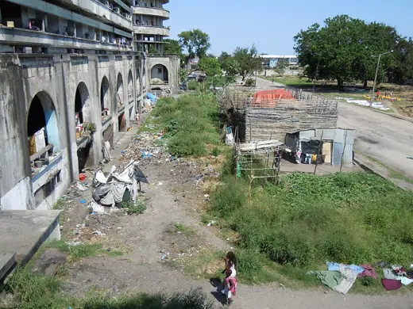
Grande Hotel BeiraFrancisco de Castro · 1955 Grande Hotel de Ouro PretoOscar Niemeyer · 1940
Grande Hotel de Ouro PretoOscar Niemeyer · 1940 Great (Bamboo) Wall HouseKengo Kuma · 2002
Great (Bamboo) Wall HouseKengo Kuma · 2002 Great Hall of the PeopleZhang Bo · 1959
Great Hall of the PeopleZhang Bo · 1959 Great Mosque of DjennéIsmaïla Traoré · 1907
Great Mosque of DjennéIsmaïla Traoré · 1907 Great Mosque of NionoLassina Minta · 1973
Great Mosque of NionoLassina Minta · 1973 Great Mosque of RomePaolo Portoghesi · 1995
Great Mosque of RomePaolo Portoghesi · 1995 Green Building (MIT Building 54)I. M. Pei · 1964
Green Building (MIT Building 54)I. M. Pei · 1964 Green Square Library and PlazaStudio Hollenstein with Stewart Architecture · 2018
Green Square Library and PlazaStudio Hollenstein with Stewart Architecture · 2018 Grieg HallKnud Munk · 1978
Grieg HallKnud Munk · 1978 Groot Klimmendaal Rehabilitation CentreKoen van Velsen · 2010
Groot Klimmendaal Rehabilitation CentreKoen van Velsen · 2010 Gropius HouseWalter Gropius · 1938
Gropius HouseWalter Gropius · 1938 Grosvenor PlaceHarry Seidler & Associates · 1988
Grosvenor PlaceHarry Seidler & Associates · 1988 Großes FestspielhausClemens Holzmeister · 1960
Großes FestspielhausClemens Holzmeister · 1960 GroßmarkthalleMartin Elsaesser · 1928
GroßmarkthalleMartin Elsaesser · 1928 Grundtvig's ChurchPeder Vilhelm Jensen-Klint · 1940
Grundtvig's ChurchPeder Vilhelm Jensen-Klint · 1940 GSW HeadquartersSauerbruch Hutton · 1999
GSW HeadquartersSauerbruch Hutton · 1999 Guangzhou Opera HouseZaha Hadid · 2010
Guangzhou Opera HouseZaha Hadid · 2010 Guggenheim BilbaoFrank Gehry · 1997
Guggenheim BilbaoFrank Gehry · 1997 Guild HouseVenturi and Rauch · 1963
Guild HouseVenturi and Rauch · 1963 Gulshan Society MosqueKashef Mahboob Chowdhury · 2017
Gulshan Society MosqueKashef Mahboob Chowdhury · 2017 Gunma Museum of Modern ArtArata Isozaki · 1974
Gunma Museum of Modern ArtArata Isozaki · 1974 Gunma Music CenterAntonin Raymond · 1961
Gunma Music CenterAntonin Raymond · 1961 GustavianumOlof Rudbeck · 1663
GustavianumOlof Rudbeck · 1663 Gustavo Capanema PalaceLúcio Costa, Oscar Niemeyer · 1945
Gustavo Capanema PalaceLúcio Costa, Oscar Niemeyer · 1945 Guthrie TheaterAteliers Jean Nouvel · 2006
Guthrie TheaterAteliers Jean Nouvel · 2006 Haas HouseHans Hollein · 1990
Haas HouseHans Hollein · 1990 Habib Bank PlazaLeo A. Daly · 1971
Habib Bank PlazaLeo A. Daly · 1971 Habitat 67Moshe Safdie · 1967
Habitat 67Moshe Safdie · 1967 Hadassah Hospital, Mount ScopusErich Mendelsohn · 1939
Hadassah Hospital, Mount ScopusErich Mendelsohn · 1939 Hagen CrematoriumPeter Behrens · 1907
Hagen CrematoriumPeter Behrens · 1907 Hajj Terminal, King Abdulaziz International AirportSOM, Fazlur Rahman Khan · 1981
Hajj Terminal, King Abdulaziz International AirportSOM, Fazlur Rahman Khan · 1981 Hall of NationsRaj Rewal, Mahendra Raj · 1972
Hall of NationsRaj Rewal, Mahendra Raj · 1972 Hallfield Primary SchoolDenys Lasdun · 1954
Hallfield Primary SchoolDenys Lasdun · 1954 HallgrímskirkjaGuðjón Samúelsson · 1986
HallgrímskirkjaGuðjón Samúelsson · 1986 Hamburger BahnhofJosef Paul Kleihues · 1996
Hamburger BahnhofJosef Paul Kleihues · 1996 Hanoi Museumgmp Architekten · 2010
Hanoi Museumgmp Architekten · 2010 Hans Otto TheaterGottfried Böhm · 2006
Hans Otto TheaterGottfried Böhm · 2006 Harbin Opera HouseMAD Architects · 2015
Harbin Opera HouseMAD Architects · 2015 Harold Holt Memorial Swimming CentreKevin Borland and Daryl Jackson · 1969
Harold Holt Memorial Swimming CentreKevin Borland and Daryl Jackson · 1969 HarpaHenning Larsen Architects, Olafur Eliasson · 2011
HarpaHenning Larsen Architects, Olafur Eliasson · 2011 Harry and Penelope Seidler HouseHarry and Penelope Seidler · 1967
Harry and Penelope Seidler HouseHarry and Penelope Seidler · 1967 Hassan II BridgeMarc Mimram · 2011
Hassan II BridgeMarc Mimram · 2011 Hassan II MosqueMichel Pinseau · 1993
Hassan II MosqueMichel Pinseau · 1993 Hastings PierdRMM · 2016
Hastings PierdRMM · 2016 Haus der Kulturen der Welt (Kongresshalle)Hugh Stubbins · 1957
Haus der Kulturen der Welt (Kongresshalle)Hugh Stubbins · 1957 Haus der KunstPaul Ludwig Troost · 1937
Haus der KunstPaul Ludwig Troost · 1937 Haus des RundfunksHans Poelzig · 1931
Haus des RundfunksHans Poelzig · 1931 Haus GugalunPeter Zumthor · 1994
Haus GugalunPeter Zumthor · 1994 Haus Lange and Haus EstersLudwig Mies van der Rohe · 1930
Haus Lange and Haus EstersLudwig Mies van der Rohe · 1930 Haystack Mountain School of CraftsEdward Larrabee Barnes · 1961
Haystack Mountain School of CraftsEdward Larrabee Barnes · 1961 Hayward GalleryRon Herron, Warren Chalk · 1968
Hayward GalleryRon Herron, Warren Chalk · 1968 Healy Guest House (Cocoon House)Paul Rudolph and Ralph Twitchell · 1950
Healy Guest House (Cocoon House)Paul Rudolph and Ralph Twitchell · 1950 Hearst CastleJulia Morgan · 1947
Hearst CastleJulia Morgan · 1947 Hector Pieterson MuseumMashabane Rose Associates · 2002
Hector Pieterson MuseumMashabane Rose Associates · 2002 Hedge HouseWiel Arets · 2001
Hedge HouseWiel Arets · 2001 Hedmark MuseumSverre Fehn · 1979
Hedmark MuseumSverre Fehn · 1979 Helix BridgeCox Architecture, Architects 61, Arup · 2010
Helix BridgeCox Architecture, Architects 61, Arup · 2010 Helsingborg Concert HallSven Markelius · 1934
Helsingborg Concert HallSven Markelius · 1934 Helsinki Central Library OodiALA Architects · 2018
Helsinki Central Library OodiALA Architects · 2018 Helsinki Central StationEliel Saarinen · 1919
Helsinki Central StationEliel Saarinen · 1919 Helsinki Music CentreLPR Architects · 2011
Helsinki Music CentreLPR Architects · 2011 Helsinki Olympic StadiumYrjö Lindegren, Toivo Jäntti · 1938
Helsinki Olympic StadiumYrjö Lindegren, Toivo Jäntti · 1938 Henie Onstad KunstsenterJon Eikvar, Sven Erik Engebretsen · 1968
Henie Onstad KunstsenterJon Eikvar, Sven Erik Engebretsen · 1968 Herbert F. Johnson Museum of ArtI. M. Pei · 1973
Herbert F. Johnson Museum of ArtI. M. Pei · 1973 Heritance KandalamaGeoffrey Bawa · 1994
Heritance KandalamaGeoffrey Bawa · 1994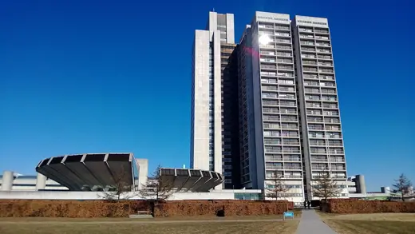
Herlev HospitalGehrdt Bornebusch · 1976 Herz-Jesu-KircheAllmann Sattler Wappner · 2000
Herz-Jesu-KircheAllmann Sattler Wappner · 2000 Het SchipMichel de Klerk · 1921
Het SchipMichel de Klerk · 1921 Heydar Aliyev CenterZaha Hadid · 2012
Heydar Aliyev CenterZaha Hadid · 2012 High Court of AustraliaEdwards Madigan Torzillo Briggs · 1980
High Court of AustraliaEdwards Madigan Torzillo Briggs · 1980 High LineDiller Scofidio + Renfro, James Corner, Piet Oudolf · 2009
High LineDiller Scofidio + Renfro, James Corner, Piet Oudolf · 2009 High Museum of ArtRichard Meier · 1983
High Museum of ArtRichard Meier · 1983 Highpoint IBerthold Lubetkin and Tecton · 1935
Highpoint IBerthold Lubetkin and Tecton · 1935 Hill of the BuddhaTadao Ando · 2015
Hill of the BuddhaTadao Ando · 2015 Hillbrow Tower (Telkom Joburg Tower)South African Posts & Telecommunications (client); designers not credited in sources · 1971
Hillbrow Tower (Telkom Joburg Tower)South African Posts & Telecommunications (client); designers not credited in sources · 1971 Hillside TerraceFumihiko Maki · 1992
Hillside TerraceFumihiko Maki · 1992 Hilton AthensProkopis Vassiliadis, Emmanouil Vourekas, Spyros Staikos · 1963
Hilton AthensProkopis Vassiliadis, Emmanouil Vourekas, Spyros Staikos · 1963 Hilton IstanbulSOM, Sedad Hakkı Eldem · 1955
Hilton IstanbulSOM, Sedad Hakkı Eldem · 1955 Hilversum town hallWillem Dudok · 1931
Hilversum town hallWillem Dudok · 1931 Hipodromo do CristalRoman Fresnedo Siri · 1959
Hipodromo do CristalRoman Fresnedo Siri · 1959 Hiroshima City Museum of Contemporary ArtKisho Kurokawa · 1988
Hiroshima City Museum of Contemporary ArtKisho Kurokawa · 1988 Hiroshima Peace Memorial MuseumKenzo Tange · 1955
Hiroshima Peace Memorial MuseumKenzo Tange · 1955 Hirshhorn Museum and Sculpture GardenGordon Bunshaft (SOM) · 1974
Hirshhorn Museum and Sculpture GardenGordon Bunshaft (SOM) · 1974 Historial de la Grande GuerreHenri Ciriani · 1992
Historial de la Grande GuerreHenri Ciriani · 1992 History Faculty Building, CambridgeJames Stirling · 1968
History Faculty Building, CambridgeJames Stirling · 1968 Ho Chi Minh MausoleumGarol Isakovich · 1975
Ho Chi Minh MausoleumGarol Isakovich · 1975 Hochhaus an der WeberwieseHermann Henselmann · 1952
Hochhaus an der WeberwieseHermann Henselmann · 1952 Hoenheim-Nord Tram TerminusZaha Hadid · 2001
Hoenheim-Nord Tram TerminusZaha Hadid · 2001 HohenhofHenry van de Velde · 1908
HohenhofHenry van de Velde · 1908 Holiday Inn BeirutAndré Wogenscky, Maurice Hindié · 1974
Holiday Inn BeirutAndré Wogenscky, Maurice Hindié · 1974 Hollyhock HouseFrank Lloyd Wright · 1921
Hollyhock HouseFrank Lloyd Wright · 1921 Holmenkollbakken ski jumpJDS Architects · 2010
Holmenkollbakken ski jumpJDS Architects · 2010 Holyoke Center (Smith Campus Center)Josep Lluís Sert · 1966
Holyoke Center (Smith Campus Center)Josep Lluís Sert · 1966 Hong Kong City HallRon Phillips, Alan Fitch · 1962
Hong Kong City HallRon Phillips, Alan Fitch · 1962 Hong Kong ColiseumPau Shiu-hung (Architectural Services Department) · 1983
Hong Kong ColiseumPau Shiu-hung (Architectural Services Department) · 1983 Hong Kong Cultural CentreJosé Lei (Architectural Services Department) · 1989
Hong Kong Cultural CentreJosé Lei (Architectural Services Department) · 1989 Hong Kong Design InstituteColdefy & Associés (CAAU) · 2010
Hong Kong Design InstituteColdefy & Associés (CAAU) · 2010 Hong Kong International Airport Terminal 1Foster + Partners · 1998
Hong Kong International Airport Terminal 1Foster + Partners · 1998 Hong Kong Palace MuseumRocco Yim · 2022
Hong Kong Palace MuseumRocco Yim · 2022 Honolulu Museum of ArtBertram Goodhue · 1927
Honolulu Museum of ArtBertram Goodhue · 1927 Hooper House IIMarcel Breuer · 1959
Hooper House IIMarcel Breuer · 1959 Hopkins HouseMichael and Patty Hopkins · 1976
Hopkins HouseMichael and Patty Hopkins · 1976 Horizon ApartmentsHarry Seidler · 1998
Horizon ApartmentsHarry Seidler · 1998 HornbækhusKay Fisker · 1923
HornbækhusKay Fisker · 1923 Horta HouseVictor Horta · 1901
Horta HouseVictor Horta · 1901 Hospicio CabañasManuel Tolsá · 1810
Hospicio CabañasManuel Tolsá · 1810 Hospital de Sant PauLluis Domenech i Montaner · 1930
Hospital de Sant PauLluis Domenech i Montaner · 1930 Hospital Naval Pedro MalloClorindo Testa · 1981
Hospital Naval Pedro MalloClorindo Testa · 1981 Hotakubo HousingRiken Yamamoto · 1991
Hotakubo HousingRiken Yamamoto · 1991 Hotel AvionBohuslav Fuchs · 1928
Hotel AvionBohuslav Fuchs · 1928 Hotel Habana Libre (former Habana Hilton)Welton Becket & Associates, with Arroyo y Menéndez · 1958
Hotel Habana Libre (former Habana Hilton)Welton Becket & Associates, with Arroyo y Menéndez · 1958 Hotel HumboldtTomás Sanabria · 1956
Hotel HumboldtTomás Sanabria · 1956 Hotel JakartaSeARCH · 2018
Hotel JakartaSeARCH · 2018 Hotel KazakhstanYuri Ratushny, Leonid Ukhobotov, Vladimir Kim · 1977
Hotel KazakhstanYuri Ratushny, Leonid Ukhobotov, Vladimir Kim · 1977 Hotel Marqués de RiscalFrank Gehry · 2006
Hotel Marqués de RiscalFrank Gehry · 2006 Hotel ThermalVěra and Vladimír Machonin · 1977
Hotel ThermalVěra and Vladimír Machonin · 1977 Hotel TokoenKiyonori Kikutake · 1964
Hotel TokoenKiyonori Kikutake · 1964 Hotel UniqueRuy Ohtake · 2002
Hotel UniqueRuy Ohtake · 2002 Hotel UzbekistanIvan Merport and team · 1974
Hotel UzbekistanIvan Merport and team · 1974 House for an Art LoverCharles Rennie Mackintosh · 1996
House for an Art LoverCharles Rennie Mackintosh · 1996 House in Cap FerretLacaton & Vassal · 1998
House in Cap FerretLacaton & Vassal · 1998 House in WhiteKazuo Shinohara · 1966
House in WhiteKazuo Shinohara · 1966 House NSou Fujimoto · 2008
House NSou Fujimoto · 2008 House NASou Fujimoto · 2011
House NASou Fujimoto · 2011 House of Culture (Kulttuuritalo)Alvar Aalto · 1958
House of Culture (Kulttuuritalo)Alvar Aalto · 1958 House of Kunio MaekawaKunio Maekawa · 1942
House of Kunio MaekawaKunio Maekawa · 1942 House of Music HungarySou Fujimoto · 2022
House of Music HungarySou Fujimoto · 2022 House of SovietsYulian Schwarzbreim (TsNIIEP) · 1985
House of SovietsYulian Schwarzbreim (TsNIIEP) · 1985 House of the Black MadonnaJosef Gočár · 1912
House of the Black MadonnaJosef Gočár · 1912 House of WisdomFoster + Partners · 2020
House of WisdomFoster + Partners · 2020 House VI (Frank Residence)Peter Eisenman · 1975
House VI (Frank Residence)Peter Eisenman · 1975 House with ChimaerasWładysław Horodecki · 1903
House with ChimaerasWładysław Horodecki · 1903 HSBC Main BuildingNorman Foster · 1986
HSBC Main BuildingNorman Foster · 1986 Hu Huishan MemorialLiu Jiakun · 2009
Hu Huishan MemorialLiu Jiakun · 2009 Hubertus HouseAldo van Eyck · 1978
Hubertus HouseAldo van Eyck · 1978 HufeisensiedlungBruno Taut, Martin Wagner · 1927
HufeisensiedlungBruno Taut, Martin Wagner · 1927 Hukuru MiskiyMaldivian builders · 1658
Hukuru MiskiyMaldivian builders · 1658 Humana BuildingMichael Graves · 1985
Humana BuildingMichael Graves · 1985 Humble Administrator's GardenWang Xianchen · c. 1513
Humble Administrator's GardenWang Xianchen · c. 1513 Humboldt ForumFranco Stella · 2020
Humboldt ForumFranco Stella · 2020 Hundertwasser ToiletsFriedensreich Hundertwasser · 1999
Hundertwasser ToiletsFriedensreich Hundertwasser · 1999 HundertwasserhausFriedensreich Hundertwasser, Josef Krawina · 1985
HundertwasserhausFriedensreich Hundertwasser, Josef Krawina · 1985 Hungarian Parliament BuildingImre Steindl · 1904
Hungarian Parliament BuildingImre Steindl · 1904 Hungerburgbahn stationsZaha Hadid Architects · 2007
Hungerburgbahn stationsZaha Hadid Architects · 2007 HvitträskGesellius, Lindgren, Saarinen · 1903
HvitträskGesellius, Lindgren, Saarinen · 1903 Hyogo Children's MuseumTadao Ando · 1989
Hyogo Children's MuseumTadao Ando · 1989 Hypo-HausWalther and Bea Betz · 1981
Hypo-HausWalther and Bea Betz · 1981 Hyvinkää ChurchAarno Ruusuvuori · 1961
Hyvinkää ChurchAarno Ruusuvuori · 1961 Hyōgo Prefectural Museum of ArtTadao Ando · 2002
Hyōgo Prefectural Museum of ArtTadao Ando · 2002 Härlanda ChurchPeter Celsing · 1958
Härlanda ChurchPeter Celsing · 1958 Hôtel El AurassiLuigi Moretti · 1975
Hôtel El AurassiLuigi Moretti · 1975 Hôtel GuimardHector Guimard · 1912
Hôtel GuimardHector Guimard · 1912 Hôtel TasselVictor Horta · 1894
Hôtel TasselVictor Horta · 1894 Hôtel van EetveldeVictor Horta · 1898
Hôtel van EetveldeVictor Horta · 1898 IAC BuildingFrank Gehry · 2007
IAC BuildingFrank Gehry · 2007 Ian Potter Museum of ArtNonda Katsalidis (Katsalidis Architects) · 1998
Ian Potter Museum of ArtNonda Katsalidis (Katsalidis Architects) · 1998 Iate Tênis Clube, PampulhaOscar Niemeyer · 1942
Iate Tênis Clube, PampulhaOscar Niemeyer · 1942 Iberê Camargo FoundationÁlvaro Siza · 2008
Iberê Camargo FoundationÁlvaro Siza · 2008 Ibirapuera AuditoriumOscar Niemeyer · 2005
Ibirapuera AuditoriumOscar Niemeyer · 2005 IBM Research Centre, La GaudeMarcel Breuer · 1962
IBM Research Centre, La GaudeMarcel Breuer · 1962 ICC BerlinRalf Schüler and Ursulina Schüler-Witte · 1979
ICC BerlinRalf Schüler and Ursulina Schüler-Witte · 1979 ICD/ITKE Research Pavilion 2012University of Stuttgart · 2012
ICD/ITKE Research Pavilion 2012University of Stuttgart · 2012 ICI House (Orica House)Osborn McCutcheon (Bates Smart McCutcheon) · 1958
ICI House (Orica House)Osborn McCutcheon (Bates Smart McCutcheon) · 1958 IDS CenterPhilip Johnson and John Burgee · 1972
IDS CenterPhilip Johnson and John Burgee · 1972 IG Farben BuildingHans Poelzig · 1930
IG Farben BuildingHans Poelzig · 1930 Iglesia El RosarioRubén Martínez · 1971
Iglesia El RosarioRubén Martínez · 1971 Igrejinha Nossa Senhora de FátimaOscar Niemeyer · 1958
Igrejinha Nossa Senhora de FátimaOscar Niemeyer · 1958 Igualada CemeteryEnric Miralles, Carme Pinós · 1994
Igualada CemeteryEnric Miralles, Carme Pinós · 1994 IIM AhmedabadLouis Kahn · 1974
IIM AhmedabadLouis Kahn · 1974 IIT Kanpur Academic AreaAchyut Kanvinde · c. 1966
IIT Kanpur Academic AreaAchyut Kanvinde · c. 1966 IKMZ Library, BTU CottbusHerzog & de Meuron · 2004
IKMZ Library, BTU CottbusHerzog & de Meuron · 2004 Ilulissat Icefjord CentreDorte Mandrup · 2021
Ilulissat Icefjord CentreDorte Mandrup · 2021 Imabari City HallKenzō Tange · 1958
Imabari City HallKenzō Tange · 1958 Immeuble ClartéLe Corbusier · 1932
Immeuble ClartéLe Corbusier · 1932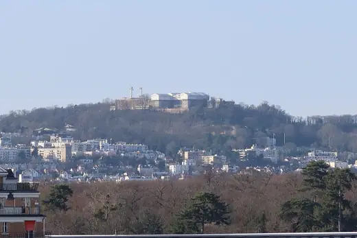
Immeuble MolitorLe Corbusier and Pierre Jeanneret · 1934 Imperial War Museum NorthDaniel Libeskind · 2002
Imperial War Museum NorthDaniel Libeskind · 2002 Independence ArchGhana Public Works Department · 1961
Independence ArchGhana Public Works Department · 1961 Independence HouseG. Cappa · 1961
Independence HouseG. Cappa · 1961 Independence Memorial HallTom Neville Wynne-Jones · 1953
Independence Memorial HallTom Neville Wynne-Jones · 1953 Independence Monument (Cambodia)Vann Molyvann · 1962
Independence Monument (Cambodia)Vann Molyvann · 1962 Independence PalaceNgo Viet Thu · 1966
Independence PalaceNgo Viet Thu · 1966 India Habitat CentreJoseph Allen Stein · 1993
India Habitat CentreJoseph Allen Stein · 1993 India International CentreJoseph Allen Stein · 1962
India International CentreJoseph Allen Stein · 1962 Indian Coffee HouseLaurie Baker · c. 1958
Indian Coffee HouseLaurie Baker · c. 1958 Indian Institute of Management BangaloreBalkrishna Doshi · 1983
Indian Institute of Management BangaloreBalkrishna Doshi · 1983 Indonesian Parliament ComplexSoejoedi Wirjoatmodjo · 1983
Indonesian Parliament ComplexSoejoedi Wirjoatmodjo · 1983 Institut du Monde ArabeJean Nouvel · 1987
Institut du Monde ArabeJean Nouvel · 1987 Institute for Marine and Antarctic StudiesJohn Wardle Architects with Terroir · 2014
Institute for Marine and Antarctic StudiesJohn Wardle Architects with Terroir · 2014 Institute of Contemporary Art, BostonDiller Scofidio + Renfro · 2006
Institute of Contemporary Art, BostonDiller Scofidio + Renfro · 2006 Institute of EducationDenys Lasdun · 1976
Institute of EducationDenys Lasdun · 1976 Institute of Foreign LanguagesVann Molyvann · 1972
Institute of Foreign LanguagesVann Molyvann · 1972 Institute of Hygiene and MicrobiologyHermann Fehling, Daniel Gogel (Fehling+Gogel) · 1974
Institute of Hygiene and MicrobiologyHermann Fehling, Daniel Gogel (Fehling+Gogel) · 1974 Instituto Moreira Salles PaulistaAndrade Morettin Arquitetos · 2017
Instituto Moreira Salles PaulistaAndrade Morettin Arquitetos · 2017 Inter-University Seminar HouseTakamasa Yoshizaka (Atelier U) · 1965
Inter-University Seminar HouseTakamasa Yoshizaka (Atelier U) · 1965 International Congress CentreJEMS Architekci · 2015
International Congress CentreJEMS Architekci · 2015 International House of JapanKunio Maekawa, Junzo Sakakura and Junzo Yoshimura · 1955
International House of JapanKunio Maekawa, Junzo Sakakura and Junzo Yoshimura · 1955 International Museum of HorologyPierre Zoelly, Georges-Jacques Haefeli · 1974
International Museum of HorologyPierre Zoelly, Georges-Jacques Haefeli · 1974 International Museum of the BaroqueToyo Ito · 2016
International Museum of the BaroqueToyo Ito · 2016 Inujima Seirensho Art MuseumHiroshi Sambuichi · 2008
Inujima Seirensho Art MuseumHiroshi Sambuichi · 2008 Isabella Stewart Gardner MuseumWillard T. Sears · 1903
Isabella Stewart Gardner MuseumWillard T. Sears · 1903 IsbjergetCEBRA, JDS · 2013
IsbjergetCEBRA, JDS · 2013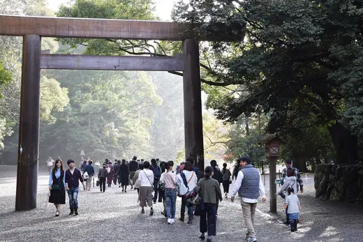
Ise Grand ShrineShinto shrine carpenters · 2013 Islamic Cemetery AltachBernardo Bader · 2011
Islamic Cemetery AltachBernardo Bader · 2011 Isokon BuildingWells Coates · 1934
Isokon BuildingWells Coates · 1934 Israel Goldstein SynagogueDavid Resnick, Heinrich Rau · 1957
Israel Goldstein SynagogueDavid Resnick, Heinrich Rau · 1957 Israel MuseumAlfred Mansfeld and Dora Gad · 1965
Israel MuseumAlfred Mansfeld and Dora Gad · 1965 Istiqlal MosqueFriedrich Silaban · 1978
Istiqlal MosqueFriedrich Silaban · 1978 Istituto Marchiondi SpagliardiVittoriano Viganò · 1957
Istituto Marchiondi SpagliardiVittoriano Viganò · 1957 Itamaraty PalaceOscar Niemeyer · 1970
Itamaraty PalaceOscar Niemeyer · 1970 IthraSnohetta · 2018
IthraSnohetta · 2018 Izvestia BuildingGrigory Barkhin, Mikhail Barkhin · 1927
Izvestia BuildingGrigory Barkhin, Mikhail Barkhin · 1927 İstanbul ModernRenzo Piano · 2023
İstanbul ModernRenzo Piano · 2023 J. Edgar Hoover BuildingC. F. Murphy and Associates (Stanislaw Z. Gladych) · 1975
J. Edgar Hoover BuildingC. F. Murphy and Associates (Stanislaw Z. Gladych) · 1975 Jachthuis Sint HubertusHendrik Petrus Berlage · 1920
Jachthuis Sint HubertusHendrik Petrus Berlage · 1920 Jacob and Wilhelm Grimm CentreMax Dudler · 2009
Jacob and Wilhelm Grimm CentreMax Dudler · 2009 Jacob K. Javits Convention CenterI. M. Pei & Partners (James Ingo Freed) · 1986
Jacob K. Javits Convention CenterI. M. Pei & Partners (James Ingo Freed) · 1986 Jacobs II House (Solar Hemicycle)Frank Lloyd Wright · 1948
Jacobs II House (Solar Hemicycle)Frank Lloyd Wright · 1948 Jahad Metro PlazaKA Architecture Studio · 2023
Jahad Metro PlazaKA Architecture Studio · 2023 James A. Farley Building (Moynihan Train Hall)McKim, Mead & White; SOM (train hall) · 1914
James A. Farley Building (Moynihan Train Hall)McKim, Mead & White; SOM (train hall) · 1914 James Simon GalleryDavid Chipperfield · 2019
James Simon GalleryDavid Chipperfield · 2019 Janggyeong Panjeon, HaeinsaJoseon builders · 1488
Janggyeong Panjeon, HaeinsaJoseon builders · 1488 Jantar Mantar, JaipurSawai Jai Singh II · c. 1734
Jantar Mantar, JaipurSawai Jai Singh II · c. 1734 Japan National StadiumKengo Kuma · 2019
Japan National StadiumKengo Kuma · 2019 Japan Pavilion, Expo 2000Shigeru Ban with Frei Otto · 2000
Japan Pavilion, Expo 2000Shigeru Ban with Frei Otto · 2000 Jardine HousePalmer and Turner · 1973
Jardine HousePalmer and Turner · 1973 Jardinette ApartmentsRichard Neutra · 1928
Jardinette ApartmentsRichard Neutra · 1928 Jatiyo Smriti SoudhoSyed Mainul Hossain · 1982
Jatiyo Smriti SoudhoSyed Mainul Hossain · 1982 Jaume Fuster LibraryJosep Llinàs (with Joan Vera) · 2005
Jaume Fuster LibraryJosep Llinàs (with Joan Vera) · 2005 Jawahar Kala KendraCharles Correa · 1991
Jawahar Kala KendraCharles Correa · 1991 Jay Pritzker PavilionFrank Gehry · 2004
Jay Pritzker PavilionFrank Gehry · 2004 Jaú Bus StationVilanova Artigas · 1973
Jaú Bus StationVilanova Artigas · 1973 Jean-Marie Tjibaou Cultural CentreRenzo Piano · 1998
Jean-Marie Tjibaou Cultural CentreRenzo Piano · 1998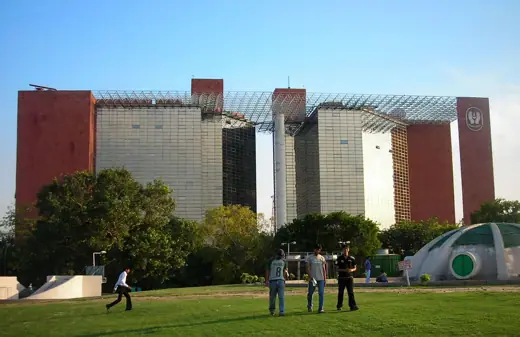
Jeevan Bharati BuildingCharles Correa · 1986 Jesús Soto Museum of Modern ArtCarlos Raúl Villanueva · 1973
Jesús Soto Museum of Modern ArtCarlos Raúl Villanueva · 1973 Jetwing LighthouseGeoffrey Bawa · 1997
Jetwing LighthouseGeoffrey Bawa · 1997 Jewel Changi AirportMoshe Safdie · 2019
Jewel Changi AirportMoshe Safdie · 2019 Jewish Museum BerlinDaniel Libeskind · 2001
Jewish Museum BerlinDaniel Libeskind · 2001 Ještěd TowerKarel Hubáček · 1973
Ještěd TowerKarel Hubáček · 1973 Jim Thompson HouseJim Thompson · 1959
Jim Thompson HouseJim Thompson · 1959 Jin Mao TowerSOM · 1999
Jin Mao TowerSOM · 1999 Jinchokan Moriya Historical MuseumTerunobu Fujimori · 1991
Jinchokan Moriya Historical MuseumTerunobu Fujimori · 1991 Joan Miró's Studio (Taller Sert)Josep Lluís Sert · 1955
Joan Miró's Studio (Taller Sert)Josep Lluís Sert · 1955 Jockey Club Innovation TowerZaha Hadid Architects · 2014
Jockey Club Innovation TowerZaha Hadid Architects · 2014 Joensuu Town HallEliel Saarinen · 1914
Joensuu Town HallEliel Saarinen · 1914 John F. Kennedy Presidential Library and MuseumI. M. Pei · 1979
John F. Kennedy Presidential Library and MuseumI. M. Pei · 1979 John Hancock CenterBruce Graham, Fazlur Khan · 1969
John Hancock CenterBruce Graham, Fazlur Khan · 1969 John Hancock TowerHenry N. Cobb · 1976
John Hancock TowerHenry N. Cobb · 1976 Johnson Wax HeadquartersFrank Lloyd Wright · 1939
Johnson Wax HeadquartersFrank Lloyd Wright · 1939 Joieria RocaJosep Lluís Sert · 1934
Joieria RocaJosep Lluís Sert · 1934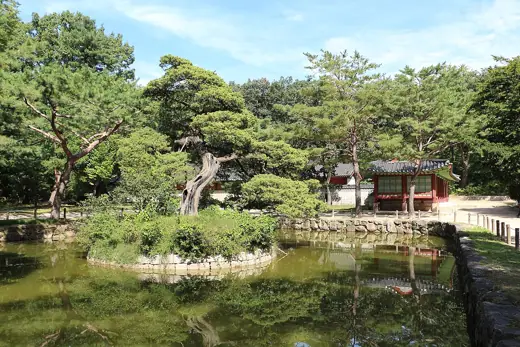
Jongmyo ShrineJoseon builders · 1395 Joseph Regenstein LibraryWalter Netsch (Skidmore, Owings & Merrill) · 1970
Joseph Regenstein LibraryWalter Netsch (Skidmore, Owings & Merrill) · 1970 José Martí MemorialEnrique Luis Varela · 1958
José Martí MemorialEnrique Luis Varela · 1958 Jubilee ChurchRichard Meier · 2003
Jubilee ChurchRichard Meier · 2003 Juscelino Kubitschek BridgeAlexandre Chan · 2002
Juscelino Kubitschek BridgeAlexandre Chan · 2002 Kabuki-za (2013)Kengo Kuma · 2013
Kabuki-za (2013)Kengo Kuma · 2013 Kadokawa Culture MuseumKengo Kuma · 2020
Kadokawa Culture MuseumKengo Kuma · 2020 KAFD Metro StationZaha Hadid Architects · 2024
KAFD Metro StationZaha Hadid Architects · 2024 Kagawa Prefectural Government OfficeKenzō Tange · 1958
Kagawa Prefectural Government OfficeKenzō Tange · 1958 Kagawa Prefectural GymnasiumKenzō Tange · 1964
Kagawa Prefectural GymnasiumKenzō Tange · 1964 Kaiser Wilhelm Memorial ChurchEgon Eiermann · 1963
Kaiser Wilhelm Memorial ChurchEgon Eiermann · 1963 KAIT WorkshopJunya Ishigami · 2008
KAIT WorkshopJunya Ishigami · 2008 Kaknas TowerHans Borgstrom, Bengt Lindroos · 1967
Kaknas TowerHans Borgstrom, Bengt Lindroos · 1967 Kala AcademyCharles Correa · 1983
Kala AcademyCharles Correa · 1983 Kaleva ChurchReima Pietila, Raili Pietila · 1966
Kaleva ChurchReima Pietila, Raili Pietila · 1966 Kamalapur railway stationRobert Boughey, Daniel Dunham · 1968
Kamalapur railway stationRobert Boughey, Daniel Dunham · 1968 Kamppi ChapelK2S Architects · 2012
Kamppi ChapelK2S Architects · 2012 Kanchanjunga ApartmentsCharles Correa · 1983
Kanchanjunga ApartmentsCharles Correa · 1983 KannikegårdenLundgaard & Tranberg · 2015
KannikegårdenLundgaard & Tranberg · 2015 Kansai International Airport Terminal 1Renzo Piano Building Workshop · 1994
Kansai International Airport Terminal 1Renzo Piano Building Workshop · 1994 Kant-DreieckJosef Paul Kleihues · 1994
Kant-DreieckJosef Paul Kleihues · 1994 KanyonJerde Partnership, Tabanlıoğlu Architects · 2006
KanyonJerde Partnership, Tabanlıoğlu Architects · 2006 KanzlerbungalowSep Ruf · 1964
KanzlerbungalowSep Ruf · 1964 Kaohsiung Music CenterManuel Monteserín (MADE IN Architects) · 2021
Kaohsiung Music CenterManuel Monteserín (MADE IN Architects) · 2021 Karen Demirchyan Sports and Concert ComplexGurgen Musheghyan, Artur Tarkhanyan, Spartak Khachikyan, Grachya Poghosyan · 1983
Karen Demirchyan Sports and Concert ComplexGurgen Musheghyan, Artur Tarkhanyan, Spartak Khachikyan, Grachya Poghosyan · 1983 Kariakoo MarketBeda Amuli · 1974
Kariakoo MarketBeda Amuli · 1974 Karl-Marx-HofKarl Ehn · 1930
Karl-Marx-HofKarl Ehn · 1930 Karlsplatz Stadtbahn PavilionsOtto Wagner · 1899
Karlsplatz Stadtbahn PavilionsOtto Wagner · 1899 Kasumigaseki BuildingYamashita Sekkei with Mitsui Fudosan · 1968
Kasumigaseki BuildingYamashita Sekkei with Mitsui Fudosan · 1968 Katsura Imperial VillaPrince Toshihito and Toshitada · 17th c.
Katsura Imperial VillaPrince Toshihito and Toshitada · 17th c. KatuaqSchmidt Hammer Lassen · 1997
KatuaqSchmidt Hammer Lassen · 1997 Katyń MuseumBBGK Architekci · 2015
Katyń MuseumBBGK Architekci · 2015 Kauchuk Factory ClubKonstantin Melnikov · 1929
Kauchuk Factory ClubKonstantin Melnikov · 1929 Kaufhaus TyrolDavid Chipperfield with Dieter Mathoi · 2010
Kaufhaus TyrolDavid Chipperfield with Dieter Mathoi · 2010 Kaufmann Desert HouseRichard Neutra · 1946
Kaufmann Desert HouseRichard Neutra · 1946 Kaunas Central Post OfficeFeliksas Vizbaras · 1932
Kaunas Central Post OfficeFeliksas Vizbaras · 1932 Kavanagh buildingSanchez, Lagos & de la Torre · 1936
Kavanagh buildingSanchez, Lagos & de la Torre · 1936 Kazakhstan Central Concert HallManfredi Nicoletti · 2009
Kazakhstan Central Concert HallManfredi Nicoletti · 2009 Kaze-no-Oka CrematoriumFumihiko Maki · 1997
Kaze-no-Oka CrematoriumFumihiko Maki · 1997 Kaédi Regional HospitalFabrizio Carola, ADAUA · 1989
Kaédi Regional HospitalFabrizio Carola, ADAUA · 1989 Keeling HouseDenys Lasdun · 1957
Keeling HouseDenys Lasdun · 1957 Kela Main Office (National Pensions Institute)Alvar Aalto · 1956
Kela Main Office (National Pensions Institute)Alvar Aalto · 1956 Kempegowda International Airport Terminal 2Skidmore, Owings & Merrill · 2022
Kempegowda International Airport Terminal 2Skidmore, Owings & Merrill · 2022 Ken Domon Museum of PhotographyYoshio Taniguchi · 1983
Ken Domon Museum of PhotographyYoshio Taniguchi · 1983 Kennedy CenterEdward Durell Stone · 1971
Kennedy CenterEdward Durell Stone · 1971 Kentuck KnobFrank Lloyd Wright · 1956
Kentuck KnobFrank Lloyd Wright · 1956 Kenyatta International Convention CentreKarl Henrik Nostvik · 1973
Kenyatta International Convention CentreKarl Henrik Nostvik · 1973 Khan Shatyr Entertainment CenterFoster + Partners · 2010
Khan Shatyr Entertainment CenterFoster + Partners · 2010 KiasmaSteven Holl · 1998
KiasmaSteven Holl · 1998 KiefhoekJ. J. P. Oud · 1930
KiefhoekJ. J. P. Oud · 1930 Kigali Convention CentreRoland Dieterle · 2016
Kigali Convention CentreRoland Dieterle · 2016 Kilden Performing Arts CentreALA Architects · 2012
Kilden Performing Arts CentreALA Architects · 2012 Kimbell Art MuseumLouis Kahn · 1972
Kimbell Art MuseumLouis Kahn · 1972 King Abdullah Petroleum Studies and Research CenterZaha Hadid Architects · 2017
King Abdullah Petroleum Studies and Research CenterZaha Hadid Architects · 2017 King Fahd International StadiumIan Fraser, John Roberts & Partners · 1987
King Fahd International StadiumIan Fraser, John Roberts & Partners · 1987 King Fahd National LibraryGerber Architekten · 2013
King Fahd National LibraryGerber Architekten · 2013 King Khalid International AirportHOK · 1983
King Khalid International AirportHOK · 1983 King Power MahanakhonOle Scheeren · 2016
King Power MahanakhonOle Scheeren · 2016 King Saud MosqueAbdel-Wahed El-Wakil · 1989
King Saud MosqueAbdel-Wahed El-Wakil · 1989 Kingdom CentreEllerbe Becket with Omrania · 2002
Kingdom CentreEllerbe Becket with Omrania · 2002 Kingo HousesJørn Utzon · 1958
Kingo HousesJørn Utzon · 1958 Kingsgate BridgeOve Arup · 1963
Kingsgate BridgeOve Arup · 1963 Kino InternationalJosef Kaiser · 1963
Kino InternationalJosef Kaiser · 1963 Kirche am SteinhofOtto Wagner · 1907
Kirche am SteinhofOtto Wagner · 1907 Kirchner Museum DavosGigon/Guyer · 1992
Kirchner Museum DavosGigon/Guyer · 1992 Kirishima International Concert Hall (Miyama Conseru)Fumihiko Maki · 1994
Kirishima International Concert Hall (Miyama Conseru)Fumihiko Maki · 1994 Kiro-san ObservatoryKengo Kuma · 1994
Kiro-san ObservatoryKengo Kuma · 1994 Kitakyushu Central LibraryArata Isozaki · 1975
Kitakyushu Central LibraryArata Isozaki · 1975 Kitakyushu Municipal Museum of ArtArata Isozaki · 1974
Kitakyushu Municipal Museum of ArtArata Isozaki · 1974 KnessetJoseph Klarwein · 1966
KnessetJoseph Klarwein · 1966 Knights of Columbus BuildingKevin Roche John Dinkeloo and Associates · 1969
Knights of Columbus BuildingKevin Roche John Dinkeloo and Associates · 1969 Knut Hamsun CentreSteven Holl · 2009
Knut Hamsun CentreSteven Holl · 2009 Kobe Port TowerNikken Sekkei · 1963
Kobe Port TowerNikken Sekkei · 1963 KockicaIvan Vitic · 1968
KockicaIvan Vitic · 1968 Kogod Courtyard, National Portrait GalleryFoster + Partners · 2007
Kogod Courtyard, National Portrait GalleryFoster + Partners · 2007 Kollhoff TowerHans Kollhoff · 1999
Kollhoff TowerHans Kollhoff · 1999 Kolumba MuseumPeter Zumthor · 2007
Kolumba MuseumPeter Zumthor · 2007 Komazawa Olympic Park Control Tower and GymnasiumYoshinobu Ashihara · 1964
Komazawa Olympic Park Control Tower and GymnasiumYoshinobu Ashihara · 1964 KOMTARLim Chong Keat · 1986
KOMTARLim Chong Keat · 1986 Kotva Department StoreVěra and Vladimír Machonin · 1975
Kotva Department StoreVěra and Vladimír Machonin · 1975 KPN TowerRenzo Piano Building Workshop · 2000
KPN TowerRenzo Piano Building Workshop · 2000 Kranhäuser (Crane Houses)Alfons Linster and Hadi Teherani (BRT Architekten) · 2008
Kranhäuser (Crane Houses)Alfons Linster and Hadi Teherani (BRT Architekten) · 2008 Kresge AuditoriumEero Saarinen · 1955
Kresge AuditoriumEero Saarinen · 1955 Krushi BhawanStudio Lotus · 2019
Krushi BhawanStudio Lotus · 2019 Kröller-Müller MuseumHenry van de Velde · 1938
Kröller-Müller MuseumHenry van de Velde · 1938 KTH School of ArchitectureTham & Videgård Arkitekter · 2015
KTH School of ArchitectureTham & Videgård Arkitekter · 2015 Kuala Lumpur International AirportKisho Kurokawa · 1998
Kuala Lumpur International AirportKisho Kurokawa · 1998 KulturhusetPeter Celsing · 1974
KulturhusetPeter Celsing · 1974 Kulturpalast DresdenWolfgang Hänsch · 1969
Kulturpalast DresdenWolfgang Hänsch · 1969 Kumamoto Prefectural Museum of ArtKunio Maekawa · 1976
Kumamoto Prefectural Museum of ArtKunio Maekawa · 1976 Kumano Kodo Nakahechi Museum of ArtSANAA · 1997
Kumano Kodo Nakahechi Museum of ArtSANAA · 1997 Kumu Art MuseumPekka Vapaavuori · 2006
Kumu Art MuseumPekka Vapaavuori · 2006 Kunsten Museum of Modern Art AalborgAlvar and Elissa Aalto with Jean-Jacques Baruël · 1972
Kunsten Museum of Modern Art AalborgAlvar and Elissa Aalto with Jean-Jacques Baruël · 1972 KunsthalOMA · 1992
KunsthalOMA · 1992 Kunsthalle BielefeldPhilip Johnson · 1968
Kunsthalle BielefeldPhilip Johnson · 1968 Kunsthaus BregenzPeter Zumthor · 1997
Kunsthaus BregenzPeter Zumthor · 1997 Kunsthaus GrazPeter Cook, Colin Fournier · 2003
Kunsthaus GrazPeter Cook, Colin Fournier · 2003 Kunsthaus Zürich ExtensionDavid Chipperfield Architects · 2020
Kunsthaus Zürich ExtensionDavid Chipperfield Architects · 2020 Kunstmuseum Basel, New BuildingChrist & Gantenbein · 2016
Kunstmuseum Basel, New BuildingChrist & Gantenbein · 2016 Kunstmuseum BonnAxel Schultes (BJSS) with Jürgen Pleuser · 1992
Kunstmuseum BonnAxel Schultes (BJSS) with Jürgen Pleuser · 1992 Kunstmuseum LiechtensteinMorger & Degelo, Christian Kerez · 2000
Kunstmuseum LiechtensteinMorger & Degelo, Christian Kerez · 2000 Kunstmuseum Moritzburg extensionNieto Sobejano Arquitectos · 2008
Kunstmuseum Moritzburg extensionNieto Sobejano Arquitectos · 2008 Kunstmuseum RavensburgLederer Ragnarsdóttir Oei · 2013
Kunstmuseum RavensburgLederer Ragnarsdóttir Oei · 2013 Kunstmuseum StuttgartHascher Jehle Architektur · 2005
Kunstmuseum StuttgartHascher Jehle Architektur · 2005 Kuokkala ChurchLassila Hirvilammi (Anssi Lassila, Teemu Hirvilammi, Jani Jansson) · 2010
Kuokkala ChurchLassila Hirvilammi (Anssi Lassila, Teemu Hirvilammi, Jani Jansson) · 2010 Kurashiki City Art Museum (former City Hall)Kenzō Tange · 1960
Kurashiki City Art Museum (former City Hall)Kenzō Tange · 1960 Kurashiki Ivy SquareShizutaro Urabe · 1974
Kurashiki Ivy SquareShizutaro Urabe · 1974 Kurilpa BridgeCox Rayner Architects with Arup · 2009
Kurilpa BridgeCox Rayner Architects with Arup · 2009 KursaalRafael Moneo · 1999
KursaalRafael Moneo · 1999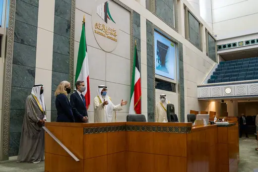
Kuwait National AssemblyJorn Utzon · 1982 Kuwait TowersSune Lindstrom, Malene Bjorn · 1979
Kuwait TowersSune Lindstrom, Malene Bjorn · 1979 Kuwait Water TowersSune Lindström, VBB · 1976
Kuwait Water TowersSune Lindström, VBB · 1976 Kwame Nkrumah MausoleumDon Arthur · 1992
Kwame Nkrumah MausoleumDon Arthur · 1992 Kyiv Crematorium (Park of Memory)Avraham Miletsky, Ada Rybachuk, Volodymyr Melnychenko · 1975
Kyiv Crematorium (Park of Memory)Avraham Miletsky, Ada Rybachuk, Volodymyr Melnychenko · 1975 Kyoto Concert HallArata Isozaki · 1995
Kyoto Concert HallArata Isozaki · 1995 Kyoto International Conference CenterSachio Otani · 1966
Kyoto International Conference CenterSachio Otani · 1966 Kyoto National MuseumKatayama Tokuma · 1895
Kyoto National MuseumKatayama Tokuma · 1895 Kyoto Station BuildingHiroshi Hara · 1997
Kyoto Station BuildingHiroshi Hara · 1997 Kyoto TowerMamoru Yamada · 1964
Kyoto TowerMamoru Yamada · 1964 Kyungdong Presbyterian ChurchKim Swoo-geun · 1981
Kyungdong Presbyterian ChurchKim Swoo-geun · 1981 Kyushu National MuseumKiyonori Kikutake · 2005
Kyushu National MuseumKiyonori Kikutake · 2005 L'Arbre BlancSou Fujimoto, Nicolas Laisné, Manal Rachdi · 2019
L'Arbre BlancSou Fujimoto, Nicolas Laisné, Manal Rachdi · 2019 L'AuditoriRafael Moneo · 1999
L'AuditoriRafael Moneo · 1999 L'HemisfèricSantiago Calatrava · 1998
L'HemisfèricSantiago Calatrava · 1998 L'Illa DiagonalRafael Moneo and Manuel de Solà-Morales · 1993
L'Illa DiagonalRafael Moneo and Manuel de Solà-Morales · 1993 L'Oceanogràfic RestaurantFélix Candela · 2003
L'Oceanogràfic RestaurantFélix Candela · 2003 L'ÀgoraSantiago Calatrava · 2009
L'ÀgoraSantiago Calatrava · 2009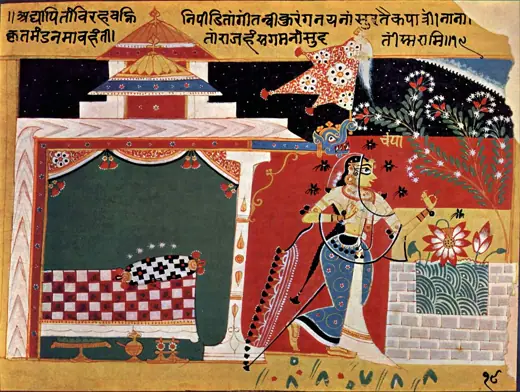
L. D. Institute of IndologyBalkrishna Doshi · 1962 La BordaLacol · 2018
La BordaLacol · 2018 La Collina OmihachimanTerunobu Fujimori · 2014
La Collina OmihachimanTerunobu Fujimori · 2014 La CongiuntaPeter Märkli · 1992
La CongiuntaPeter Märkli · 1992 La FábricaRicardo Bofill (Taller de Arquitectura) · 1975
La FábricaRicardo Bofill (Taller de Arquitectura) · 1975 La Lira Theatre Public SpaceRCR Arquitectes · 2011
La Lira Theatre Public SpaceRCR Arquitectes · 2011 La Muralla RojaRicardo Bofill (Taller de Arquitectura) · 1973
La Muralla RojaRicardo Bofill (Taller de Arquitectura) · 1973 La Nuvola (Roma Convention Center)Massimiliano Fuksas, Doriana Fuksas · 2016
La Nuvola (Roma Convention Center)Massimiliano Fuksas, Doriana Fuksas · 2016 La Pampa Civic Centre (Casa de Gobierno)Clorindo Testa · 1963
La Pampa Civic Centre (Casa de Gobierno)Clorindo Testa · 1963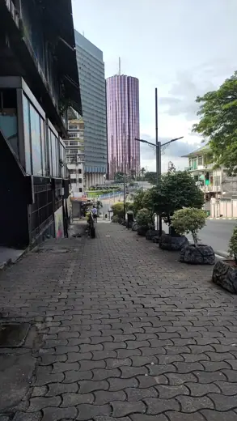
La PyramideRinaldo Olivieri · 1973 La Ricarda (Casa Gomis)Antoni Bonet i Castellana · 1963
La Ricarda (Casa Gomis)Antoni Bonet i Castellana · 1963 La Rinascente, Piazza FiumeFranco Albini, Franca Helg · 1961
La Rinascente, Piazza FiumeFranco Albini, Franca Helg · 1961 La ScalaGiuseppe Piermarini · 1778
La ScalaGiuseppe Piermarini · 1778 La Seine MusicaleShigeru Ban · 2017
La Seine MusicaleShigeru Ban · 2017 La TalleraFrida Escobedo · 2012
La TalleraFrida Escobedo · 2012 Laban Dance CentreHerzog & de Meuron · 2003
Laban Dance CentreHerzog & de Meuron · 2003 Lahti Town HallEliel Saarinen · 1912
Lahti Town HallEliel Saarinen · 1912 Lake Point TowerSchipporeit-Heinrich · 1968
Lake Point TowerSchipporeit-Heinrich · 1968 Lakeuden Risti ChurchAlvar Aalto · 1960
Lakeuden Risti ChurchAlvar Aalto · 1960 Lamune OnsenTerunobu Fujimori · 2005
Lamune OnsenTerunobu Fujimori · 2005 Lanaras Weekend HouseNicos Valsamakis · 1963
Lanaras Weekend HouseNicos Valsamakis · 1963 Langen FoundationTadao Ando · 2004
Langen FoundationTadao Ando · 2004 Langer EugenEgon Eiermann · 1969
Langer EugenEgon Eiermann · 1969 Lanserhof Syltingenhoven associates · 2022
Lanserhof Syltingenhoven associates · 2022 Lanyang MuseumKris Yao · 2010
Lanyang MuseumKris Yao · 2010 Lappia HallAlvar Aalto · 1975
Lappia HallAlvar Aalto · 1975 Las Lajas SanctuaryLucindo Espinosa · 1949
Las Lajas SanctuaryLucindo Espinosa · 1949 LASALLE College of the ArtsRSP Architects Planners & Engineers · 2007
LASALLE College of the ArtsRSP Architects Planners & Engineers · 2007 Lascaux IVSnøhetta with Duncan Lewis · 2016
Lascaux IVSnøhetta with Duncan Lewis · 2016 LasipalatsiViljo Revell, Niilo Kokko and Heimo Riihimäki · 1936
LasipalatsiViljo Revell, Niilo Kokko and Heimo Riihimäki · 1936 Latin America MemorialOscar Niemeyer · 1989
Latin America MemorialOscar Niemeyer · 1989 Le Corbusier GymnasiumLe Corbusier · 1980
Le Corbusier GymnasiumLe Corbusier · 1980 Le FresnoyBernard Tschumi · 1997
Le FresnoyBernard Tschumi · 1997 Le VolcanOscar Niemeyer · 1982
Le VolcanOscar Niemeyer · 1982 Lecumberri PalaceAntonio Torres Torija · 1900
Lecumberri PalaceAntonio Torres Torija · 1900 Lee Ufan MuseumTadao Ando · 2010
Lee Ufan MuseumTadao Ando · 2010 Leeum, Samsung Museum of ArtMario Botta, Jean Nouvel · 2004
Leeum, Samsung Museum of ArtMario Botta, Jean Nouvel · 2004 Leeza SOHOZaha Hadid Architects · 2019
Leeza SOHOZaha Hadid Architects · 2019 Lego HouseBIG · 2017
Lego HouseBIG · 2017 Lehmbruck MuseumManfred Lehmbruck · 1964
Lehmbruck MuseumManfred Lehmbruck · 1964 Leicester University Engineering BuildingJames Stirling, James Gowan · 1963
Leicester University Engineering BuildingJames Stirling, James Gowan · 1963 Lemke HouseLudwig Mies van der Rohe · 1933
Lemke HouseLudwig Mies van der Rohe · 1933 Len Lye CentrePattersons · 2015
Len Lye CentrePattersons · 2015 Lenin's MausoleumAlexey Shchusev · 1930
Lenin's MausoleumAlexey Shchusev · 1930 Lentos Art MuseumWeber & Hofer · 2003
Lentos Art MuseumWeber & Hofer · 2003 Leopold MuseumOrtner & Ortner · 2001
Leopold MuseumOrtner & Ortner · 2001 Les Arcades du LacRicardo Bofill, Taller de Arquitectura · 1982
Les Arcades du LacRicardo Bofill, Taller de Arquitectura · 1982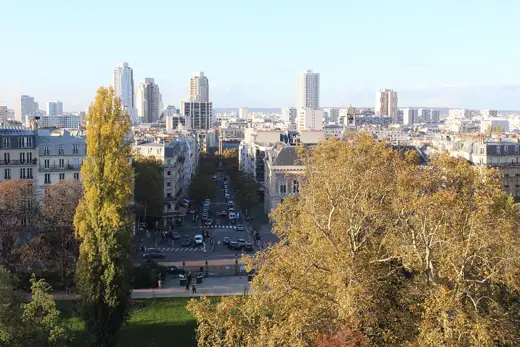
Les Orgues de FlandreMartin Schulz van Treeck · 1980 Lever HouseGordon Bunshaft, SOM · 1952
Lever HouseGordon Bunshaft, SOM · 1952 Lewis Glucksman GalleryO'Donnell + Tuomey · 2004
Lewis Glucksman GalleryO'Donnell + Tuomey · 2004 Leão que Ri (Smiling Lion)Pancho Guedes · 1958
Leão que Ri (Smiling Lion)Pancho Guedes · 1958 Leça Swimming PoolsÁlvaro Siza · 1966
Leça Swimming PoolsÁlvaro Siza · 1966 Liberation War MuseumTanzim Hasan Salim, Naheed Farzana · 2017
Liberation War MuseumTanzim Hasan Salim, Naheed Farzana · 2017 Library and Learning Center, Vienna University of EconomicsZaha Hadid Architects · 2013
Library and Learning Center, Vienna University of EconomicsZaha Hadid Architects · 2013 Library of BirminghamMecanoo · 2013
Library of BirminghamMecanoo · 2013 LiederhalleRolf Gutbrod and Adolf Abel · 1956
LiederhalleRolf Gutbrod and Adolf Abel · 1956 Lieksa ChurchReima Pietilä, Raili Pietilä · 1982
Lieksa ChurchReima Pietilä, Raili Pietilä · 1982 LifeCycle Tower One (LCT ONE)Hermann Kaufmann · 2012
LifeCycle Tower One (LCT ONE)Hermann Kaufmann · 2012 Lilla BommenRalph Erskine · 1989
Lilla BommenRalph Erskine · 1989 Lille CathedralCharles Leroy; west front by Pierre-Louis Carlier · 1999
Lille CathedralCharles Leroy; west front by Pierre-Louis Carlier · 1999 Lille Grand PalaisOMA · 1994
Lille Grand PalaisOMA · 1994 Lille LangebroWilkinsonEyre, Urban Agency · 2019
Lille LangebroWilkinsonEyre, Urban Agency · 2019 Linked HybridSteven Holl · 2009
Linked HybridSteven Holl · 2009 LinnahallRaine Karp · 1980
LinnahallRaine Karp · 1980 Lippo CentrePaul Rudolph · 1988
Lippo CentrePaul Rudolph · 1988 Lipstick BuildingPhilip Johnson and John Burgee · 1986
Lipstick BuildingPhilip Johnson and John Burgee · 1986 Lisbon OceanariumPeter Chermayeff · 1998
Lisbon OceanariumPeter Chermayeff · 1998 Lisbon Port Control TowerGonçalo Byrne · 2001
Lisbon Port Control TowerGonçalo Byrne · 2001 Lister County CourthouseGunnar Asplund · 1921
Lister County CourthouseGunnar Asplund · 1921 Liverpool Metropolitan CathedralFrederick Gibberd · 1967
Liverpool Metropolitan CathedralFrederick Gibberd · 1967 Liège-Guillemins StationSantiago Calatrava · 2009
Liège-Guillemins StationSantiago Calatrava · 2009 Lloyd's BuildingRichard Rogers · 1986
Lloyd's BuildingRichard Rogers · 1986 LocHalCivic Architects, Braaksma & Roos, Inside Outside (Petra Blaisse) · 2019
LocHalCivic Architects, Braaksma & Roos, Inside Outside (Petra Blaisse) · 2019 Loisium Wine WorldSteven Holl · 2003
Loisium Wine WorldSteven Holl · 2003 London Aquatics CentreZaha Hadid · 2011
London Aquatics CentreZaha Hadid · 2011 London Bridge StationGrimshaw · 2018
London Bridge StationGrimshaw · 2018 London Central MosqueFrederick Gibberd · 1977
London Central MosqueFrederick Gibberd · 1977 London EyeMarks Barfield · 2000
London EyeMarks Barfield · 2000 London VelodromeHopkins Architects · 2011
London VelodromeHopkins Architects · 2011 Long Museum West BundAtelier Deshaus · 2014
Long Museum West BundAtelier Deshaus · 2014 LooshausAdolf Loos · 1911
LooshausAdolf Loos · 1911 Lord's Media CentreFuture Systems (Jan Kaplický, Amanda Levete) · 1999
Lord's Media CentreFuture Systems (Jan Kaplický, Amanda Levete) · 1999 Los Manantiales RestaurantFélix Candela · 1958
Los Manantiales RestaurantFélix Candela · 1958 Lotus TempleFariborz Sahba · 1986
Lotus TempleFariborz Sahba · 1986 Louise Weiss Building, European ParliamentArchitecture-Studio · 1999
Louise Weiss Building, European ParliamentArchitecture-Studio · 1999 Louisiana Museum of Modern ArtJorgen Bo, Vilhelm Wohlert · 1958
Louisiana Museum of Modern ArtJorgen Bo, Vilhelm Wohlert · 1958 Louvre Abu DhabiJean Nouvel · 2017
Louvre Abu DhabiJean Nouvel · 2017 Louvre PyramidI. M. Pei · 1989
Louvre PyramidI. M. Pei · 1989 Louvre-LensSANAA · 2012
Louvre-LensSANAA · 2012 Lovell Beach HouseRudolph Schindler · 1926
Lovell Beach HouseRudolph Schindler · 1926 Lovell Health HouseRichard Neutra · 1929
Lovell Health HouseRichard Neutra · 1929 Luce Memorial ChapelI. M. Pei, Chen Chi-kwan · 1963
Luce Memorial ChapelI. M. Pei, Chen Chi-kwan · 1963 Lucerne Culture and Congress Centre (KKL)Ateliers Jean Nouvel · 2000
Lucerne Culture and Congress Centre (KKL)Ateliers Jean Nouvel · 2000 LUMA Arles TowerFrank Gehry · 2021
LUMA Arles TowerFrank Gehry · 2021 Lund KonsthallKlas Anshelm · 1957
Lund KonsthallKlas Anshelm · 1957 LunugangaGeoffrey Bawa · c. 1998
LunugangaGeoffrey Bawa · c. 1998 Lusail StadiumFoster + Partners, Populous · 2021
Lusail StadiumFoster + Partners, Populous · 2021 LVMH TowerChristian de Portzamparc · 1999
LVMH TowerChristian de Portzamparc · 1999 Lycée SchorgeDiébédo Francis Kéré · 2016
Lycée SchorgeDiébédo Francis Kéré · 2016 Lyndon Baines Johnson Library and MuseumGordon Bunshaft (SOM) · 1971
Lyndon Baines Johnson Library and MuseumGordon Bunshaft (SOM) · 1971 Lyon Museum of Contemporary ArtRenzo Piano Building Workshop · 1995
Lyon Museum of Contemporary ArtRenzo Piano Building Workshop · 1995 Lyon-Saint-Exupéry TGV StationSantiago Calatrava · 1994
Lyon-Saint-Exupéry TGV StationSantiago Calatrava · 1994 LöylyAvanto Architects · 2016
LöylyAvanto Architects · 2016 M+Herzog & de Meuron · 2021
M+Herzog & de Meuron · 2021 Macao Science CenterPei Partnership Architects · 2009
Macao Science CenterPei Partnership Architects · 2009 Macedonian Opera and BalletBiro 71 (Štefan Kacin, Jurij Princes, Bogdan Spindler, Marjan Uršič) · 1979
Macedonian Opera and BalletBiro 71 (Štefan Kacin, Jurij Princes, Bogdan Spindler, Marjan Uršič) · 1979 Madinat al-Zahra MuseumNieto Sobejano Arquitectos · 2009
Madinat al-Zahra MuseumNieto Sobejano Arquitectos · 2009 Madrid-Barajas Airport Terminal 4Richard Rogers Partnership, Estudio Lamela · 2006
Madrid-Barajas Airport Terminal 4Richard Rogers Partnership, Estudio Lamela · 2006 Maersk TowerC.F. Møller Architects · 2017
Maersk TowerC.F. Møller Architects · 2017 Maggie's Centre LondonRogers Stirk Harbour + Partners · 2008
Maggie's Centre LondonRogers Stirk Harbour + Partners · 2008 Magna Science Adventure CentreWilkinson Eyre · 2001
Magna Science Adventure CentreWilkinson Eyre · 2001 Magney HouseGlenn Murcutt · 1984
Magney HouseGlenn Murcutt · 1984 Maison BlancheCharles-Édouard Jeanneret (Le Corbusier) · 1912
Maison BlancheCharles-Édouard Jeanneret (Le Corbusier) · 1912 Maison de la RadioHenry Bernard · 1963
Maison de la RadioHenry Bernard · 1963 Maison de VerrePierre Chareau, Bernard Bijvoet · 1932
Maison de VerrePierre Chareau, Bernard Bijvoet · 1932 Maison du BrésilLe Corbusier and Lúcio Costa · 1959
Maison du BrésilLe Corbusier and Lúcio Costa · 1959 Maison du Peuple, ClichyBeaudouin & Lods with Jean Prouvé · 1939
Maison du Peuple, ClichyBeaudouin & Lods with Jean Prouvé · 1939 Maison GuietteLe Corbusier · 1927
Maison GuietteLe Corbusier · 1927 Maison HermèsRenzo Piano · 2001
Maison HermèsRenzo Piano · 2001 Maison Jean ProuvéJean Prouvé · 1954
Maison Jean ProuvéJean Prouvé · 1954 Maison La RocheLe Corbusier, Pierre Jeanneret · 1925
Maison La RocheLe Corbusier, Pierre Jeanneret · 1925 Maison Louis CarréAlvar Aalto · 1959
Maison Louis CarréAlvar Aalto · 1959 Maison PlaneixLe Corbusier · 1928
Maison PlaneixLe Corbusier · 1928 Maison à BordeauxOMA, Rem Koolhaas · 1998
Maison à BordeauxOMA, Rem Koolhaas · 1998 Maisons JaoulLe Corbusier · 1956
Maisons JaoulLe Corbusier · 1956 Majara ResidenceZAV Architects · 2020
Majara ResidenceZAV Architects · 2020 Majdanek MausoleumWiktor Tołkin, Janusz Dembek · 1969
Majdanek MausoleumWiktor Tołkin, Janusz Dembek · 1969 MajolikahausOtto Wagner · 1899
MajolikahausOtto Wagner · 1899 Makoko Floating SchoolKunlé Adeyemi (NLÉ) · 2013
Makoko Floating SchoolKunlé Adeyemi (NLÉ) · 2013 Makuhari MesseFumihiko Maki · 1989
Makuhari MesseFumihiko Maki · 1989 Malaysian Houses of ParliamentWilliam Ivor Shipley · 1963
Malaysian Houses of ParliamentWilliam Ivor Shipley · 1963 MALBA, Museo de Arte Latinoamericano de Buenos AiresAFT Arquitectos (Atelman, Fourcade, Tapia) · 2001
MALBA, Museo de Arte Latinoamericano de Buenos AiresAFT Arquitectos (Atelman, Fourcade, Tapia) · 2001 Malmö KonsthallKlas Anshelm · 1975
Malmö KonsthallKlas Anshelm · 1975 Manhattan Municipal BuildingMcKim, Mead & White · 1914
Manhattan Municipal BuildingMcKim, Mead & White · 1914 Manila Metropolitan TheaterJuan Arellano · 1931
Manila Metropolitan TheaterJuan Arellano · 1931 Manitoba Hydro PlaceKPMB Architects · 2009
Manitoba Hydro PlaceKPMB Architects · 2009 Mannesmann-HochhausPaul Schneider-Esleben · 1958
Mannesmann-HochhausPaul Schneider-Esleben · 1958 Manufacturers Trust Company BuildingGordon Bunshaft and Charles Evans Hughes III (SOM) · 1954
Manufacturers Trust Company BuildingGordon Bunshaft and Charles Evans Hughes III (SOM) · 1954 Mapungubwe Interpretation CentrePeter Rich Architects · 2009
Mapungubwe Interpretation CentrePeter Rich Architects · 2009 Maqam EchahidBashir Yellès, Marian Konieczny · 1982
Maqam EchahidBashir Yellès, Marian Konieczny · 1982 MarayaGiò Forma, Black Engineering · 2019
MarayaGiò Forma, Black Engineering · 2019 Marco Polo TowerBehnisch Architekten · 2010
Marco Polo TowerBehnisch Architekten · 2010 Margaret Esherick HouseLouis Kahn · 1961
Margaret Esherick HouseLouis Kahn · 1961 Maria Regina MartyrumHans Schädel and Friedrich Ebert · 1963
Maria Regina MartyrumHans Schädel and Friedrich Ebert · 1963 Marie Short HouseGlenn Murcutt · 1975
Marie Short HouseGlenn Murcutt · 1975 Marin County Civic CenterFrank Lloyd Wright · 1962
Marin County Civic CenterFrank Lloyd Wright · 1962 Marina Bay SandsMoshe Safdie · 2010
Marina Bay SandsMoshe Safdie · 2010 Marina CityBertrand Goldberg · 1964
Marina CityBertrand Goldberg · 1964 MarkthalMVRDV · 2014
MarkthalMVRDV · 2014 Marl Town HallVan den Broek en Bakema · 1967
Marl Town HallVan den Broek en Bakema · 1967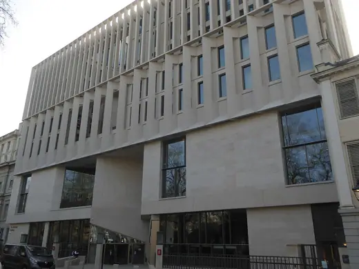
Marshall Building, London School of EconomicsGrafton Architects (Yvonne Farrell, Shelley McNamara) · 2022 MART RoveretoMario Botta · 2002
MART RoveretoMario Botta · 2002 MARTa HerfordFrank Gehry · 2005
MARTa HerfordFrank Gehry · 2005 Martin Luther King Jr. Memorial LibraryLudwig Mies van der Rohe · 1972
Martin Luther King Jr. Memorial LibraryLudwig Mies van der Rohe · 1972 Marugame Genichiro-Inokuma Museum of Contemporary Art (MIMOCA)Yoshio Taniguchi · 1991
Marugame Genichiro-Inokuma Museum of Contemporary Art (MIMOCA)Yoshio Taniguchi · 1991 Masjid NegaraBaharuddin Abu Kassim, Howard Ashley · 1965
Masjid NegaraBaharuddin Abu Kassim, Howard Ashley · 1965 Masjid-e-ToobaBabar Hameed Chauhan, Zaheer Haider Naqvi · 1969
Masjid-e-ToobaBabar Hameed Chauhan, Zaheer Haider Naqvi · 1969 MASPLina Bo Bardi · 1968
MASPLina Bo Bardi · 1968 MatenadaranMark Grigorian · 1959
MatenadaranMark Grigorian · 1959 Mater Misericordiae ChurchAngelo Mangiarotti, Bruno Morassutti · 1957
Mater Misericordiae ChurchAngelo Mangiarotti, Bruno Morassutti · 1957 Matmut AtlantiqueHerzog & de Meuron · 2015
Matmut AtlantiqueHerzog & de Meuron · 2015 Matosinhos Town HallAlcino Soutinho · 1987
Matosinhos Town HallAlcino Soutinho · 1987 MatrimandirRoger Anger · 2008
MatrimandirRoger Anger · 2008 Matsumoto Performing Arts CentreToyo Ito · 2004
Matsumoto Performing Arts CentreToyo Ito · 2004 Matthäuskirche PforzheimEgon Eiermann · 1953
Matthäuskirche PforzheimEgon Eiermann · 1953 Mausoleo delle Fosse ArdeatineMario Fiorentino, Giuseppe Perugini, Nello Aprile, Cino Calcaprina, Aldo Cardelli · 1949
Mausoleo delle Fosse ArdeatineMario Fiorentino, Giuseppe Perugini, Nello Aprile, Cino Calcaprina, Aldo Cardelli · 1949 Mausoleum of Baba TaherMohsen Foroughi · 1970
Mausoleum of Baba TaherMohsen Foroughi · 1970 Mausoleum of Mohammed VEric Vo Toan · 1971
Mausoleum of Mohammed VEric Vo Toan · 1971 Max Aicher ArenaBehnisch Architekten with Pohl Architekten · 2011
Max Aicher ArenaBehnisch Architekten with Pohl Architekten · 2011 Max Liebling HouseDov Karmi · 1936
Max Liebling HouseDov Karmi · 1936 MAXXIZaha Hadid · 2010
MAXXIZaha Hadid · 2010 Mayakovskaya StationAlexey Dushkin · 1938
Mayakovskaya StationAlexey Dushkin · 1938 Mazar-e-QuaidYahya Merchant · 1970
Mazar-e-QuaidYahya Merchant · 1970 Mbaru Niang, Wae ReboYori Antar with the Wae Rebo community · 2011
Mbaru Niang, Wae ReboYori Antar with the Wae Rebo community · 2011 McCormick Tribune Campus CenterOMA / Rem Koolhaas · 2003
McCormick Tribune Campus CenterOMA / Rem Koolhaas · 2003 McGraw-Hill BuildingRaymond Hood · 1931
McGraw-Hill BuildingRaymond Hood · 1931 McGregor Memorial Conference CenterMinoru Yamasaki · 1958
McGregor Memorial Conference CenterMinoru Yamasaki · 1958 McLaren Technology CentreFoster + Partners · 2004
McLaren Technology CentreFoster + Partners · 2004 Media-TICEnric Ruiz-Geli (Cloud 9) · 2010
Media-TICEnric Ruiz-Geli (Cloud 9) · 2010 Meguro City Office (former Chiyoda Life Insurance HQ)Togo Murano · 1966
Meguro City Office (former Chiyoda Life Insurance HQ)Togo Murano · 1966 Meiso no Mori Municipal Funeral HallToyo Ito · 2006
Meiso no Mori Municipal Funeral HallToyo Ito · 2006 Melbourne Exhibition Centre ('Jeff's Shed')Denton Corker Marshall · 1996
Melbourne Exhibition Centre ('Jeff's Shed')Denton Corker Marshall · 1996 Melbourne MuseumDenton Corker Marshall · 2000
Melbourne MuseumDenton Corker Marshall · 2000 Melbourne Recital CentreAshton Raggatt McDougall (ARM Architecture) · 2009
Melbourne Recital CentreAshton Raggatt McDougall (ARM Architecture) · 2009 Melbourne School of Design (Glyn Davis Building)John Wardle Architects with NADAAA · 2014
Melbourne School of Design (Glyn Davis Building)John Wardle Architects with NADAAA · 2014 Melnikov HouseKonstantin Melnikov · 1929
Melnikov HouseKonstantin Melnikov · 1929 Memorial to the Deportees, Yad VashemMoshe Safdie · 1995
Memorial to the Deportees, Yad VashemMoshe Safdie · 1995 Memorial to the Murdered Jews of EuropePeter Eisenman · 2005
Memorial to the Murdered Jews of EuropePeter Eisenman · 2005 Menara MesiniagaKen Yeang · 1992
Menara MesiniagaKen Yeang · 1992 Menara Tabung HajiHijjas Kasturi · 1986
Menara Tabung HajiHijjas Kasturi · 1986 Menara UMNOT. R. Hamzah & Yeang · 1998
Menara UMNOT. R. Hamzah & Yeang · 1998 Menil CollectionRenzo Piano · 1987
Menil CollectionRenzo Piano · 1987 Mercedes-Benz MuseumUNStudio · 2006
Mercedes-Benz MuseumUNStudio · 2006 Meret Oppenheim HochhausHerzog & de Meuron · 2019
Meret Oppenheim HochhausHerzog & de Meuron · 2019 Mesa Laboratory (NCAR)I. M. Pei · 1967
Mesa Laboratory (NCAR)I. M. Pei · 1967 Messe TorhausOswald Mathias Ungers · 1984
Messe TorhausOswald Mathias Ungers · 1984 MesseturmHelmut Jahn · 1991
MesseturmHelmut Jahn · 1991 Messner Mountain Museum CoronesZaha Hadid Architects · 2015
Messner Mountain Museum CoronesZaha Hadid Architects · 2015 Mestizo RestaurantSmiljan Radić · 2007
Mestizo RestaurantSmiljan Radić · 2007 METI SchoolAnna Heringer, Eike Roswag · 2006
METI SchoolAnna Heringer, Eike Roswag · 2006 MetLife BuildingEmery Roth & Sons, Walter Gropius and Pietro Belluschi · 1963
MetLife BuildingEmery Roth & Sons, Walter Gropius and Pietro Belluschi · 1963 Metro Central HeightsErno Goldfinger · 1963
Metro Central HeightsErno Goldfinger · 1963 Metropol ParasolJ. Mayer H. · 2011
Metropol ParasolJ. Mayer H. · 2011 Metropolitan Cathedral of ManaguaRicardo Legorreta · 1993
Metropolitan Cathedral of ManaguaRicardo Legorreta · 1993 Metropolitan Cathedral of Rio de JaneiroEdgar de Oliveira da Fonseca · 1979
Metropolitan Cathedral of Rio de JaneiroEdgar de Oliveira da Fonseca · 1979 Metropolitano StadiumCruz y Ortiz · 2017
Metropolitano StadiumCruz y Ortiz · 2017 Metso LibraryReima Pietilä, Raili Pietilä · 1986
Metso LibraryReima Pietilä, Raili Pietilä · 1986 METU Faculty of ArchitectureAltuğ Çinici, Behruz Çinici · 1963
METU Faculty of ArchitectureAltuğ Çinici, Behruz Çinici · 1963 Miami Marine StadiumHilario Candela · 1963
Miami Marine StadiumHilario Candela · 1963 Michael Fowler CentreWarren and Mahoney (Miles Warren, Maurice Mahoney) · 1983
Michael Fowler CentreWarren and Mahoney (Miles Warren, Maurice Mahoney) · 1983 Michael Lee-Chin Crystal, Royal Ontario MuseumStudio Daniel Libeskind · 2007
Michael Lee-Chin Crystal, Royal Ontario MuseumStudio Daniel Libeskind · 2007 Michenzani BlocksHubert Scholz · c. 1976
Michenzani BlocksHubert Scholz · c. 1976 Microlibrary Taman BimaSHAU · 2016
Microlibrary Taman BimaSHAU · 2016 Miguel Ángel Asturias National TheatreEfraín Recinos · 1978
Miguel Ángel Asturias National TheatreEfraín Recinos · 1978 Miho MuseumI. M. Pei · 1997
Miho MuseumI. M. Pei · 1997 Mikhailovsky Palace (Russian Museum)Carlo Rossi · 1825
Mikhailovsky Palace (Russian Museum)Carlo Rossi · 1825 Mikimoto Ginza 2Toyo Ito · 2005
Mikimoto Ginza 2Toyo Ito · 2005 Milam ResidencePaul Rudolph · 1961
Milam ResidencePaul Rudolph · 1961 Military History MuseumDaniel Libeskind · 2011
Military History MuseumDaniel Libeskind · 2011 Mill Owners' Association BuildingLe Corbusier · 1954
Mill Owners' Association BuildingLe Corbusier · 1954 Millard House (La Miniatura)Frank Lloyd Wright · 1923
Millard House (La Miniatura)Frank Lloyd Wright · 1923 Millau ViaductNorman Foster, Michel Virlogeux · 2004
Millau ViaductNorman Foster, Michel Virlogeux · 2004 Millennium DomeRichard Rogers · 1999
Millennium DomeRichard Rogers · 1999 Miller House and GardenEero Saarinen; garden by Dan Kiley; interiors by Alexander Girard · 1957
Miller House and GardenEero Saarinen; garden by Dan Kiley; interiors by Alexander Girard · 1957 Milstein Hall, Cornell UniversityOMA (Rem Koolhaas, Shohei Shigematsu) · 2011
Milstein Hall, Cornell UniversityOMA (Rem Koolhaas, Shohei Shigematsu) · 2011 Milwaukee Art Museum, Quadracci PavilionSantiago Calatrava · 2001
Milwaukee Art Museum, Quadracci PavilionSantiago Calatrava · 2001 Minar-e-PakistanNasreddin Murat-Khan · 1968
Minar-e-PakistanNasreddin Murat-Khan · 1968 Ministry of Public Works BuildingJosé Hortal · 1936
Ministry of Public Works BuildingJosé Hortal · 1936 Minna no Mori Gifu Media CosmosToyo Ito · 2015
Minna no Mori Gifu Media CosmosToyo Ito · 2015 MiradorMVRDV with Blanca Lleó · 2005
MiradorMVRDV with Blanca Lleó · 2005 MIT ChapelEero Saarinen · 1955
MIT ChapelEero Saarinen · 1955 Miyagi StadiumHitoshi Abe · 2000
Miyagi StadiumHitoshi Abe · 2000 MjostarnetVoll Arkitekter · 2019
MjostarnetVoll Arkitekter · 2019 MLC CentreHarry Seidler · 1977
MLC CentreHarry Seidler · 1977 MO MuseumStudio Libeskind · 2018
MO MuseumStudio Libeskind · 2018 Mode Gakuen Cocoon TowerTange Associates · 2008
Mode Gakuen Cocoon TowerTange Associates · 2008 Modern Art Museum of Fort WorthTadao Ando · 2002
Modern Art Museum of Fort WorthTadao Ando · 2002 Moderna MuseetRafael Moneo · 1998
Moderna MuseetRafael Moneo · 1998 Moderna Museet MalmöTham & Videgård Arkitekter · 2009
Moderna Museet MalmöTham & Videgård Arkitekter · 2009 Moesgaard MuseumHenning Larsen Architects · 2014
Moesgaard MuseumHenning Larsen Architects · 2014 Mole AntonellianaAlessandro Antonelli · 1889
Mole AntonellianaAlessandro Antonelli · 1889 Mondadori PalaceOscar Niemeyer · 1975
Mondadori PalaceOscar Niemeyer · 1975 Monte Amiata Housing (Gallaratese)Carlo Aymonino and Aldo Rossi · 1974
Monte Amiata Housing (Gallaratese)Carlo Aymonino and Aldo Rossi · 1974 Monterey Bay AquariumEHDD (Esherick Homsey Dodge & Davis) · 1984
Monterey Bay AquariumEHDD (Esherick Homsey Dodge & Davis) · 1984 Monterrey HousingAlejandro Aravena, Elemental · 2010
Monterrey HousingAlejandro Aravena, Elemental · 2010 MontevideoMecanoo · 2005
MontevideoMecanoo · 2005 Montjuïc Communications TowerSantiago Calatrava · 1992
Montjuïc Communications TowerSantiago Calatrava · 1992 Montreal BiosphèreBuckminster Fuller, Shoji Sadao · 1967
Montreal BiosphèreBuckminster Fuller, Shoji Sadao · 1967 Montreal Olympic StadiumRoger Taillibert · 1976
Montreal Olympic StadiumRoger Taillibert · 1976 Monument to the Battle of the NationsBruno Schmitz · 1913
Monument to the Battle of the NationsBruno Schmitz · 1913 Monument to the Unknown Soldier (1959)Rifat Chadirji · 1959
Monument to the Unknown Soldier (1959)Rifat Chadirji · 1959 Moriyama HouseRyue Nishizawa · 2005
Moriyama HouseRyue Nishizawa · 2005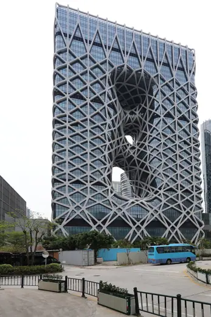
Morpheus HotelZaha Hadid Architects · 2018 Mortensrud ChurchJensen & Skodvin · 2002
Mortensrud ChurchJensen & Skodvin · 2002 Morton H. Meyerson Symphony CenterI. M. Pei · 1989
Morton H. Meyerson Symphony CenterI. M. Pei · 1989 Mortonhall CrematoriumBasil Spence, Glover & Ferguson · 1967
Mortonhall CrematoriumBasil Spence, Glover & Ferguson · 1967 Morumbi Stadium (Estádio Cícero Pompeu de Toledo)Vilanova Artigas · 1970
Morumbi Stadium (Estádio Cícero Pompeu de Toledo)Vilanova Artigas · 1970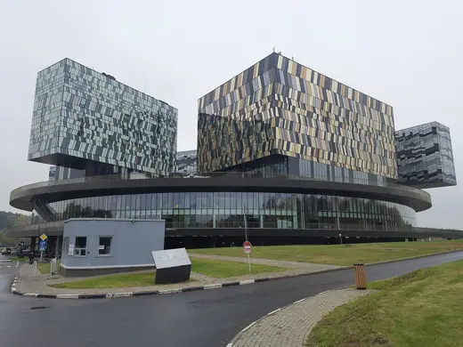
Moscow School of Management SkolkovoAdjaye Associates · 2010 Moscow State University Main BuildingLev Rudnev · 1953
Moscow State University Main BuildingLev Rudnev · 1953 Moses Mabhida Stadiumgmp Architects · 2009
Moses Mabhida Stadiumgmp Architects · 2009 Mosque-Madrasa of Sultan HassanMuhammad ibn Baylik al-Muhsini · 1363
Mosque-Madrasa of Sultan HassanMuhammad ibn Baylik al-Muhsini · 1363 Most SNP (UFO Bridge)Arpád Tesár, Jozef Lacko, Ivan Slameň · 1972
Most SNP (UFO Bridge)Arpád Tesár, Jozef Lacko, Ivan Slameň · 1972 Mountain DwellingsBIG · 2008
Mountain DwellingsBIG · 2008 Mt. Fuji World Heritage Centre, ShizuokaShigeru Ban · 2017
Mt. Fuji World Heritage Centre, ShizuokaShigeru Ban · 2017 MuBE – Brazilian Museum of SculpturePaulo Mendes da Rocha · 1995
MuBE – Brazilian Museum of SculpturePaulo Mendes da Rocha · 1995 MuCEMRudy Ricciotti · 2013
MuCEMRudy Ricciotti · 2013 MudamI. M. Pei · 2006
MudamI. M. Pei · 2006 Multihalle MannheimFrei Otto, Carlfried Mutschler · 1975
Multihalle MannheimFrei Otto, Carlfried Mutschler · 1975 Munich Olympic StadiumBehnisch & Partner, Frei Otto · 1972
Munich Olympic StadiumBehnisch & Partner, Frei Otto · 1972 Municipal House (Obecní dům)Antonín Balšánek and Osvald Polívka · 1912
Municipal House (Obecní dům)Antonín Balšánek and Osvald Polívka · 1912 Munkegaard SchoolArne Jacobsen · 1957
Munkegaard SchoolArne Jacobsen · 1957 Murcia Town Hall ExtensionRafael Moneo · 1998
Murcia Town Hall ExtensionRafael Moneo · 1998 MurinselVito Acconci · 2003
MurinselVito Acconci · 2003 Muryangsujeon, BuseoksaGoryeo builders · 1376
Muryangsujeon, BuseoksaGoryeo builders · 1376 MUSAC, Museum of Contemporary Art of Castilla y LeónMansilla + Tuñón · 2004
MUSAC, Museum of Contemporary Art of Castilla y LeónMansilla + Tuñón · 2004 MUSE Science MuseumRenzo Piano Building Workshop · 2013
MUSE Science MuseumRenzo Piano Building Workshop · 2013 Museo de Arte Contemporáneo de MonterreyRicardo Legorreta · 1991
Museo de Arte Contemporáneo de MonterreyRicardo Legorreta · 1991 Museo de Arte de PonceEdward Durell Stone · 1965
Museo de Arte de PonceEdward Durell Stone · 1965 Museo de Arte ModernoPedro Ramírez Vázquez and Rafael Mijares · 1964
Museo de Arte ModernoPedro Ramírez Vázquez and Rafael Mijares · 1964 Museo de Arte Moderno de Bogotá (MAMBO)Rogelio Salmona · 1985
Museo de Arte Moderno de Bogotá (MAMBO)Rogelio Salmona · 1985 Museo de Bellas Artes de Caracas (1976 building)Carlos Raúl Villanueva · 1976
Museo de Bellas Artes de Caracas (1976 building)Carlos Raúl Villanueva · 1976 Museo del Oro QuimbayaRogelio Salmona · 1986
Museo del Oro QuimbayaRogelio Salmona · 1986 Museo Enzo FerrariFuture Systems (Jan Kaplický), Andrea Morgante · 2012
Museo Enzo FerrariFuture Systems (Jan Kaplický), Andrea Morgante · 2012 Museo Experimental El EcoMathias Goeritz · 1953
Museo Experimental El EcoMathias Goeritz · 1953 Museo JumexDavid Chipperfield · 2013
Museo JumexDavid Chipperfield · 2013 Museo SoumayaFernando Romero · 2011
Museo SoumayaFernando Romero · 2011 Museo TamayoTeodoro González de León, Abraham Zabludovsky · 1981
Museo TamayoTeodoro González de León, Abraham Zabludovsky · 1981 Museo Universitario Arte ContemporáneoTeodoro González de León · 2008
Museo Universitario Arte ContemporáneoTeodoro González de León · 2008 Museu das MissõesLúcio Costa · 1940
Museu das MissõesLúcio Costa · 1940 Museu de Belles Arts de CastellóMansilla + Tuñón · 2001
Museu de Belles Arts de CastellóMansilla + Tuñón · 2001 Museu de les Ciències Príncipe FelipeSantiago Calatrava · 2000
Museu de les Ciències Príncipe FelipeSantiago Calatrava · 2000 Museum AbteibergHans Hollein · 1982
Museum AbteibergHans Hollein · 1982 Museum BrandhorstSauerbruch Hutton · 2009
Museum BrandhorstSauerbruch Hutton · 2009 Museum der bildenden Künste, LeipzigHufnagel Pütz Rafaelian (Karl Hufnagel, Peter Pütz, Michael Rafaelian) · 2004
Museum der bildenden Künste, LeipzigHufnagel Pütz Rafaelian (Karl Hufnagel, Peter Pütz, Michael Rafaelian) · 2004 Museum FolkwangDavid Chipperfield Architects · 2010
Museum FolkwangDavid Chipperfield Architects · 2010 Museum Frieder BurdaRichard Meier · 2004
Museum Frieder BurdaRichard Meier · 2004 Museum für Moderne KunstHans Hollein · 1991
Museum für Moderne KunstHans Hollein · 1991 Museum Liner (Kunstmuseum Appenzell)Gigon/Guyer · 1998
Museum Liner (Kunstmuseum Appenzell)Gigon/Guyer · 1998 Museum of Anthropology at UBCArthur Erickson · 1976
Museum of Anthropology at UBCArthur Erickson · 1976 Museum of Applied ArtsÖdön Lechner and Gyula Pártos · 1896
Museum of Applied ArtsÖdön Lechner and Gyula Pártos · 1896 Museum of Applied Arts FrankfurtRichard Meier · 1985
Museum of Applied Arts FrankfurtRichard Meier · 1985 Museum of Byzantine CultureKyriakos Krokos · 1994
Museum of Byzantine CultureKyriakos Krokos · 1994 Museum of Contemporary Art ChicagoJosef Paul Kleihues · 1996
Museum of Contemporary Art ChicagoJosef Paul Kleihues · 1996 Museum of Contemporary Art, BelgradeIvan Antić and Ivanka Raspopović · 1965
Museum of Contemporary Art, BelgradeIvan Antić and Ivanka Raspopović · 1965 Museum of Contemporary Art, Los AngelesArata Isozaki · 1986
Museum of Contemporary Art, Los AngelesArata Isozaki · 1986 Museum of East Asian ArtKunio Maekawa · 1977
Museum of East Asian ArtKunio Maekawa · 1977 Museum of Fine Arts, TournaiVictor Horta · 1928
Museum of Fine Arts, TournaiVictor Horta · 1928 Museum of Islamic ArtI. M. Pei · 2008
Museum of Islamic ArtI. M. Pei · 2008 Museum of Jewish HeritageKevin Roche John Dinkeloo and Associates · 1997
Museum of Jewish HeritageKevin Roche John Dinkeloo and Associates · 1997 Museum of Memory and ToleranceArditti + RDT Arquitectos · 2010
Museum of Memory and ToleranceArditti + RDT Arquitectos · 2010 Museum of Memory of Andalusia (MA)Alberto Campo Baeza · 2009
Museum of Memory of Andalusia (MA)Alberto Campo Baeza · 2009 Museum of Military History (Arsenal)Theophil Hansen and Ludwig Förster · 1856
Museum of Military History (Arsenal)Theophil Hansen and Ludwig Förster · 1856 Museum of Modern ArtYoshio Taniguchi · 2004
Museum of Modern ArtYoshio Taniguchi · 2004 Museum of Modern Art in WarsawThomas Phifer · 2024
Museum of Modern Art in WarsawThomas Phifer · 2024 Museum of Modern Art, Kamakura (Kamakura Bunkakan Tsurugaoka Museum)Junzo Sakakura · 1951
Museum of Modern Art, Kamakura (Kamakura Bunkakan Tsurugaoka Museum)Junzo Sakakura · 1951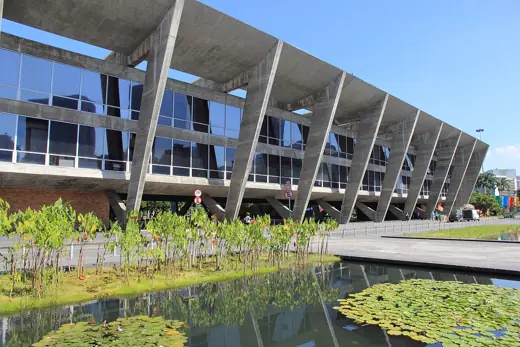
Museum of Modern Art, Rio de JaneiroAffonso Eduardo Reidy · 1967 Museum of Modern Art, SaitamaKisho Kurokawa · 1982
Museum of Modern Art, SaitamaKisho Kurokawa · 1982 Museum of Modern LiteratureDavid Chipperfield · 2006
Museum of Modern LiteratureDavid Chipperfield · 2006 Museum of Old and New ArtFender Katsalidis · 2011
Museum of Old and New ArtFender Katsalidis · 2011 Museum of Pop CultureFrank Gehry · 2000
Museum of Pop CultureFrank Gehry · 2000 Museum of SydneyDenton Corker Marshall · 1995
Museum of SydneyDenton Corker Marshall · 1995 Museum of the FutureKilla Design · 2022
Museum of the FutureKilla Design · 2022 Museum of TomorrowSantiago Calatrava · 2015
Museum of TomorrowSantiago Calatrava · 2015 Museum TinguelyMario Botta · 1996
Museum TinguelyMario Botta · 1996 Musiktheater im RevierWerner Ruhnau · 1959
Musiktheater im RevierWerner Ruhnau · 1959 MusikvereinTheophil Hansen · 1870
MusikvereinTheophil Hansen · 1870 Musée d'OrsayACT Architecture, Gae Aulenti · 1986
Musée d'OrsayACT Architecture, Gae Aulenti · 1986 Musée de la civilisationMoshe Safdie · 1988
Musée de la civilisationMoshe Safdie · 1988 Musée de la RomanitéElizabeth de Portzamparc · 2018
Musée de la RomanitéElizabeth de Portzamparc · 2018 Musée des ConfluencesCoop Himmelb(l)au · 2014
Musée des ConfluencesCoop Himmelb(l)au · 2014 Musée du quai BranlyJean Nouvel · 2006
Musée du quai BranlyJean Nouvel · 2006 Musée départemental Arles antiqueHenri Ciriani · 1995
Musée départemental Arles antiqueHenri Ciriani · 1995 Musée HergéChristian de Portzamparc · 2009
Musée HergéChristian de Portzamparc · 2009 Musée Jean Cocteau, Séverin Wunderman CollectionRudy Ricciotti · 2011
Musée Jean Cocteau, Séverin Wunderman CollectionRudy Ricciotti · 2011 Musée Picasso (Hôtel Salé)Roland Simounet · 1985
Musée Picasso (Hôtel Salé)Roland Simounet · 1985 Musée Yves Saint Laurent MarrakechStudio KO · 2017
Musée Yves Saint Laurent MarrakechStudio KO · 2017 Muuratsalo Experimental HouseAlvar Aalto · 1953
Muuratsalo Experimental HouseAlvar Aalto · 1953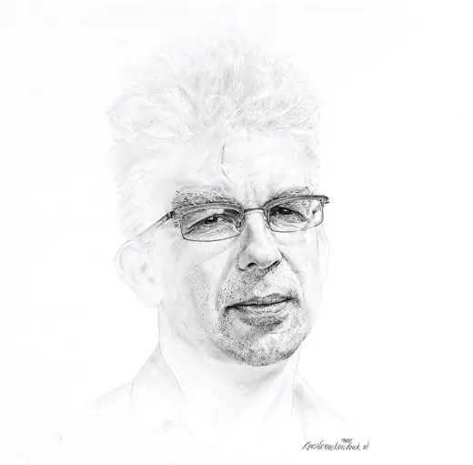
Muziekcentrum VredenburgHerman Hertzberger · 1979 Muziekgebouw aan 't IJ3XN · 2005
Muziekgebouw aan 't IJ3XN · 2005 Myyrmäki churchJuha Leiviskä · 1984
Myyrmäki churchJuha Leiviskä · 1984 Männistö ChurchJuha Leiviskä · 1992
Männistö ChurchJuha Leiviskä · 1992 MäntyniemiReima Pietilä, Raili Pietilä · 1993
MäntyniemiReima Pietilä, Raili Pietilä · 1993 Märkisches MuseumLudwig Hoffmann · 1908
Märkisches MuseumLudwig Hoffmann · 1908 MäusebunkerGerd and Magdalena Hänska · 1981
MäusebunkerGerd and Magdalena Hänska · 1981 Nadir Afonso Contemporary Art MuseumÁlvaro Siza · 2016
Nadir Afonso Contemporary Art MuseumÁlvaro Siza · 2016 Nagasaki National Peace Memorial HallAkira Kuryu · 2003
Nagasaki National Peace Memorial HallAkira Kuryu · 2003 Nagasaki Prefectural Art MuseumKengo Kuma · 2005
Nagasaki Prefectural Art MuseumKengo Kuma · 2005 Nagi Museum of Contemporary ArtArata Isozaki · 1994
Nagi Museum of Contemporary ArtArata Isozaki · 1994 Nagoya City Art MuseumKisho Kurokawa · 1987
Nagoya City Art MuseumKisho Kurokawa · 1987 Nakagawa-machi Bato Hiroshige MuseumKengo Kuma · 2000
Nakagawa-machi Bato Hiroshige MuseumKengo Kuma · 2000 Nakagin Capsule TowerKisho Kurokawa · 1972
Nakagin Capsule TowerKisho Kurokawa · 1972 Nanjing International Youth Cultural CentreZaha Hadid · 2018
Nanjing International Youth Cultural CentreZaha Hadid · 2018 Nanjing Massacre Memorial HallQi Kang · 1985
Nanjing Massacre Memorial HallQi Kang · 1985 Nantes CourthouseJean Nouvel · 2000
Nantes CourthouseJean Nouvel · 2000 Nantes School of ArchitectureLacaton & Vassal · 2009
Nantes School of ArchitectureLacaton & Vassal · 2009 Naoshima Ferry TerminalSANAA · 2006
Naoshima Ferry TerminalSANAA · 2006 Napier MuseumRobert Chisholm · 1880
Napier MuseumRobert Chisholm · 1880 Napier Street HousingKerstin Thompson Architects · 2001
Napier Street HousingKerstin Thompson Architects · 2001 Nara Centennial HallArata Isozaki · 1999
Nara Centennial HallArata Isozaki · 1999 Narkomfin buildingMoisei Ginzburg, Ignaty Milinis · 1930
Narkomfin buildingMoisei Ginzburg, Ignaty Milinis · 1930 National Art Center, TokyoKisho Kurokawa · 2007
National Art Center, TokyoKisho Kurokawa · 2007 National Art Schools (Escuelas Nacionales de Arte)Ricardo Porro, Vittorio Garatti, Roberto Gottardi · 1965
National Art Schools (Escuelas Nacionales de Arte)Ricardo Porro, Vittorio Garatti, Roberto Gottardi · 1965 National Arts CentreFred Lebensold (ARCOP) · 1969
National Arts CentreFred Lebensold (ARCOP) · 1969 National Assembly of BangladeshLouis Kahn · 1982
National Assembly of BangladeshLouis Kahn · 1982 National Building MuseumMontgomery C. Meigs · 1887
National Building MuseumMontgomery C. Meigs · 1887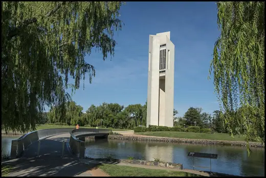
National CarillonCameron Chisholm Nicol (Don Ho) · 1970 National Centre for the Performing ArtsPaul Andreu · 2007
National Centre for the Performing ArtsPaul Andreu · 2007 National Coach MuseumPaulo Mendes da Rocha · 2015
National Coach MuseumPaulo Mendes da Rocha · 2015 National Commercial BankGordon Bunshaft · 1983
National Commercial BankGordon Bunshaft · 1983 National Congress of BrazilOscar Niemeyer · 1960
National Congress of BrazilOscar Niemeyer · 1960 National Crafts MuseumCharles Correa · 1991
National Crafts MuseumCharles Correa · 1991 National Dr. Sun Yat-sen Memorial HallWang Da-hong · 1972
National Dr. Sun Yat-sen Memorial HallWang Da-hong · 1972 National Forum of MusicStefan Kurylowicz · 2015
National Forum of MusicStefan Kurylowicz · 2015 National Gallery of Art, East BuildingI. M. Pei · 1978
National Gallery of Art, East BuildingI. M. Pei · 1978 National Gallery of AustraliaColin Madigan · 1982
National Gallery of AustraliaColin Madigan · 1982 National Gallery of CanadaMoshe Safdie · 1988
National Gallery of CanadaMoshe Safdie · 1988 National Gallery of VictoriaRoy Grounds · 1968
National Gallery of VictoriaRoy Grounds · 1968 National Gallery SingaporestudioMilou · 2015
National Gallery SingaporestudioMilou · 2015 National Institute of ImmunologyRaj Rewal · 1990
National Institute of ImmunologyRaj Rewal · 1990 National Kaohsiung Center for the ArtsMecanoo · 2018
National Kaohsiung Center for the ArtsMecanoo · 2018 National Library BuildingT. R. Hamzah & Yeang · 2005
National Library BuildingT. R. Hamzah & Yeang · 2005 National Library of ArgentinaClorindo Testa, Francisco Bullrich · 1992
National Library of ArgentinaClorindo Testa, Francisco Bullrich · 1992 National Library of AustraliaBunning and Madden (Walter Bunning) · 1968
National Library of AustraliaBunning and Madden (Walter Bunning) · 1968 National Library of BelarusMikhail Vinogradov, Viktor Kramarenko · 2006
National Library of BelarusMikhail Vinogradov, Viktor Kramarenko · 2006 National Library of IsraelHerzog & de Meuron · 2023
National Library of IsraelHerzog & de Meuron · 2023 National Library of KosovoAndrija Mutnjakovic · 1982
National Library of KosovoAndrija Mutnjakovic · 1982 National Library of LatviaGunnar Birkerts · 2014
National Library of LatviaGunnar Birkerts · 2014 National Monument (Indonesia)Frederich Silaban, R. M. Soedarsono · 1975
National Monument (Indonesia)Frederich Silaban, R. M. Soedarsono · 1975 National Museum (Malaysia)Ho Kwong Yew · 1963
National Museum (Malaysia)Ho Kwong Yew · 1963 National Museum and Research Center of AltamiraJuan Navarro Baldeweg · 2001
National Museum and Research Center of AltamiraJuan Navarro Baldeweg · 2001 National Museum of African American History and CultureDavid Adjaye, Phil Freelon · 2016
National Museum of African American History and CultureDavid Adjaye, Phil Freelon · 2016 National Museum of AnthropologyPedro Ramírez Vázquez · 1964
National Museum of AnthropologyPedro Ramírez Vázquez · 1964 National Museum of AustraliaAshton Raggatt McDougall with Robert Peck von Hartel Trethowan · 2001
National Museum of AustraliaAshton Raggatt McDougall with Robert Peck von Hartel Trethowan · 2001 National Museum of Egyptian CivilizationEl-Ghazali Kosseiba · 2017
National Museum of Egyptian CivilizationEl-Ghazali Kosseiba · 2017 National Museum of EthnologyKisho Kurokawa · 1977
National Museum of EthnologyKisho Kurokawa · 1977 National Museum of FinlandGesellius, Lindgren and Saarinen · 1910
National Museum of FinlandGesellius, Lindgren and Saarinen · 1910 National Museum of GhanaDenys Lasdun, Lindsay Drake · 1957
National Museum of GhanaDenys Lasdun, Lindsay Drake · 1957 National Museum of Japanese HistoryYoshinobu Ashihara · 1980
National Museum of Japanese HistoryYoshinobu Ashihara · 1980 National Museum of Modern and Contemporary Art, SeoulmpART Architects (Min Hyun-jun) · 2013
National Museum of Modern and Contemporary Art, SeoulmpART Architects (Min Hyun-jun) · 2013 National Museum of Modern Art, KyotoFumihiko Maki · 1986
National Museum of Modern Art, KyotoFumihiko Maki · 1986 National Museum of QatarJean Nouvel · 2019
National Museum of QatarJean Nouvel · 2019 National Museum of Roman ArtRafael Moneo · 1986
National Museum of Roman ArtRafael Moneo · 1986 National Museum of Saudi ArabiaRaymond Moriyama · 1999
National Museum of Saudi ArabiaRaymond Moriyama · 1999 National Museum of ScotlandBenson & Forsyth · 1998
National Museum of ScotlandBenson & Forsyth · 1998 National Museum of the American IndianDouglas Cardinal · 2004
National Museum of the American IndianDouglas Cardinal · 2004 National Museum of the RepublicOscar Niemeyer · 2006
National Museum of the RepublicOscar Niemeyer · 2006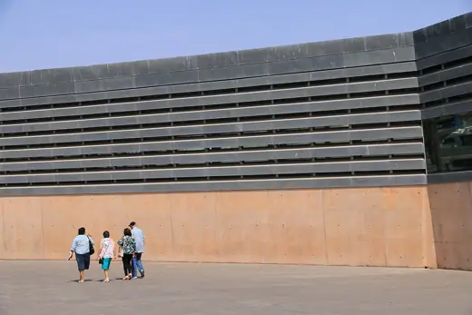
National Museum of Underwater Archaeology (ARQVA)Guillermo Vázquez Consuegra · 2008 National Museum of Vietnamese HistoryErnest Hebrard · 1932
National Museum of Vietnamese HistoryErnest Hebrard · 1932 National Museum of Western ArtLe Corbusier · 1959
National Museum of Western ArtLe Corbusier · 1959 National Museum – ArchitectureSverre Fehn · 2008
National Museum – ArchitectureSverre Fehn · 2008 National Olympic StadiumVann Molyvann · 1964
National Olympic StadiumVann Molyvann · 1964 National Palace MuseumHuang Pao-yu · 1965
National Palace MuseumHuang Pao-yu · 1965 National Palace of CultureAlexander Barov · 1981
National Palace of CultureAlexander Barov · 1981 National Portrait GalleryJohnson Pilton Walker · 2008
National Portrait GalleryJohnson Pilton Walker · 2008 National September 11 MemorialMichael Arad, Peter Walker · 2011
National September 11 MemorialMichael Arad, Peter Walker · 2011 National Space CentreNicholas Grimshaw · 2001
National Space CentreNicholas Grimshaw · 2001 National Stadium, Kaohsiung (World Games Stadium)Toyo Ito · 2009
National Stadium, Kaohsiung (World Games Stadium)Toyo Ito · 2009 National Stadium, SingaporeArup Associates, DP Architects · 2014
National Stadium, SingaporeArup Associates, DP Architects · 2014 National Taichung TheaterToyo Ito · 2016
National Taichung TheaterToyo Ito · 2016 National Theatre of GhanaCheng Taining, Ye Xianghan · 1992
National Theatre of GhanaCheng Taining, Ye Xianghan · 1992 National Theatre, LagosStefan Kolchev, Technoexportstroy · 1976
National Theatre, LagosStefan Kolchev, Technoexportstroy · 1976 Natural History MuseumAlfred Waterhouse · 1881
Natural History MuseumAlfred Waterhouse · 1881 Natural History Museum, ViennaGottfried Semper and Carl von Hasenauer · 1889
Natural History Museum, ViennaGottfried Semper and Carl von Hasenauer · 1889 Naturalis Biodiversity CenterNeutelings Riedijk · 2019
Naturalis Biodiversity CenterNeutelings Riedijk · 2019 NAVEZ, 5 social housing unitsMSA, V+ · 2015
NAVEZ, 5 social housing unitsMSA, V+ · 2015 Nebraska State CapitolBertram Goodhue · 1932
Nebraska State CapitolBertram Goodhue · 1932 Negev Brigade MonumentDani Karavan · 1968
Negev Brigade MonumentDani Karavan · 1968 NemaususJean Nouvel · 1987
NemaususJean Nouvel · 1987 NEMO Science MuseumRenzo Piano Building Workshop · 1997
NEMO Science MuseumRenzo Piano Building Workshop · 1997 Netherlands Embassy, BerlinOMA, Rem Koolhaas · 2003
Netherlands Embassy, BerlinOMA, Rem Koolhaas · 2003 Netherlands Institute for Sound and VisionNeutelings Riedijk Architecten · 2006
Netherlands Institute for Sound and VisionNeutelings Riedijk Architecten · 2006 Netherlands Pavilion, Expo 2000MVRDV · 2000
Netherlands Pavilion, Expo 2000MVRDV · 2000 Neue NationalgalerieMies van der Rohe · 1968
Neue NationalgalerieMies van der Rohe · 1968 Neue PinakothekAlexander von Branca · 1981
Neue PinakothekAlexander von Branca · 1981 Neue StaatsgalerieJames Stirling · 1984
Neue StaatsgalerieJames Stirling · 1984 Neuer ZollhofFrank Gehry · 1998
Neuer ZollhofFrank Gehry · 1998 Neues MuseumDavid Chipperfield · 2009
Neues MuseumDavid Chipperfield · 2009 Neviges Pilgrimage ChurchGottfried Böhm · 1968
Neviges Pilgrimage ChurchGottfried Böhm · 1968 New BarisHassan Fathy · 1967
New BarisHassan Fathy · 1967 New Gourna VillageHassan Fathy · 1948
New Gourna VillageHassan Fathy · 1948 New Library, Magdalene CollegeNiall McLaughlin Architects · 2021
New Library, Magdalene CollegeNiall McLaughlin Architects · 2021 New Monte Rosa HutAndrea Deplazes (ETH Zurich) · 2009
New Monte Rosa HutAndrea Deplazes (ETH Zurich) · 2009 New MuseumKazuyo Sejima, Ryue Nishizawa · 2007
New MuseumKazuyo Sejima, Ryue Nishizawa · 2007 New Orleans TowerAlvaro Siza · 2010
New Orleans TowerAlvaro Siza · 2010 New Synagogue DresdenWandel Hoefer Lorch + Hirsch · 2001
New Synagogue DresdenWandel Hoefer Lorch + Hirsch · 2001 New Town Hall, HanoverHermann Eggert and Gustav Halmhuber · 1913
New Town Hall, HanoverHermann Eggert and Gustav Halmhuber · 1913 New Town Hall, MunichGeorg von Hauberrisser · 1909
New Town Hall, MunichGeorg von Hauberrisser · 1909 New World CenterFrank Gehry · 2011
New World CenterFrank Gehry · 2011 New York State CapitolThomas Fuller, Leopold Eidlitz, H. H. Richardson, Isaac Perry · 1899
New York State CapitolThomas Fuller, Leopold Eidlitz, H. H. Richardson, Isaac Perry · 1899 New York State PavilionPhilip Johnson and Richard Foster · 1964
New York State PavilionPhilip Johnson and Richard Foster · 1964 New York Times BuildingRenzo Piano · 2007
New York Times BuildingRenzo Piano · 2007 Newport Street GalleryCaruso St John · 2015
Newport Street GalleryCaruso St John · 2015 Nezu MuseumKengo Kuma · 2009
Nezu MuseumKengo Kuma · 2009 Niavaran Cultural CenterKamran Diba · 1978
Niavaran Cultural CenterKamran Diba · 1978 Nid d'Abeille, Carrières CentralesGeorges Candilis, Shadrach Woods (ATBAT-Afrique) · 1953
Nid d'Abeille, Carrières CentralesGeorges Candilis, Shadrach Woods (ATBAT-Afrique) · 1953 Ningbo History MuseumWang Shu · 2008
Ningbo History MuseumWang Shu · 2008 Ningbo Museum of ArtWang Shu, Amateur Architecture Studio · 2005
Ningbo Museum of ArtWang Shu, Amateur Architecture Studio · 2005 Nippon BudokanMamoru Yamada · 1964
Nippon BudokanMamoru Yamada · 1964 Nira House (Leek House)Terunobu Fujimori · 1997
Nira House (Leek House)Terunobu Fujimori · 1997 Nissay Theatre (Nippon Life Hibiya Building)Togo Murano · 1963
Nissay Theatre (Nippon Life Hibiya Building)Togo Murano · 1963 Niterói Contemporary Art MuseumOscar Niemeyer · 1996
Niterói Contemporary Art MuseumOscar Niemeyer · 1996 No 1 PoultryJames Stirling, Michael Wilford and Associates · 1997
No 1 PoultryJames Stirling, Michael Wilford and Associates · 1997 NOA BuildingSeiichi Shirai · 1974
NOA BuildingSeiichi Shirai · 1974 Nobel Peace CenterDavid Adjaye · 2005
Nobel Peace CenterDavid Adjaye · 2005 Norddeutsche Landesbank (NORD/LB) HeadquartersBehnisch, Behnisch & Partner · 2002
Norddeutsche Landesbank (NORD/LB) HeadquartersBehnisch, Behnisch & Partner · 2002 Nordic HouseAlvar Aalto · 1968
Nordic HouseAlvar Aalto · 1968 Nordic House in the Faroe IslandsOla Steen, Kolbrún Ragnarsdóttir · 1983
Nordic House in the Faroe IslandsOla Steen, Kolbrún Ragnarsdóttir · 1983 Nordic PavilionSverre Fehn · 1962
Nordic PavilionSverre Fehn · 1962 Norwegian Glacier MuseumSverre Fehn · 1991
Norwegian Glacier MuseumSverre Fehn · 1991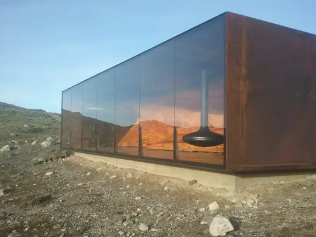
Norwegian Wild Reindeer PavilionSnøhetta · 2011 Notre-Dame de RoyanGuillaume Gillet · 1958
Notre-Dame de RoyanGuillaume Gillet · 1958 Notre-Dame du HautLe Corbusier · 1955
Notre-Dame du HautLe Corbusier · 1955 Notre-Dame du RaincyAuguste Perret · 1923
Notre-Dame du RaincyAuguste Perret · 1923 Notre-Dame-de-l'Arche-d'AllianceArchitecture-Studio · 1998
Notre-Dame-de-l'Arche-d'AllianceArchitecture-Studio · 1998 Notre-Dame-de-Lourdes, CasablancaAchille Dangleterre, Gaston Zimmer · 1954
Notre-Dame-de-Lourdes, CasablancaAchille Dangleterre, Gaston Zimmer · 1954 Novo-Ryazanskaya Street Bus GarageKonstantin Melnikov, Vladimir Shukhov · 1929
Novo-Ryazanskaya Street Bus GarageKonstantin Melnikov, Vladimir Shukhov · 1929 NovocomumGiuseppe Terragni · 1929
NovocomumGiuseppe Terragni · 1929 Nubia MuseumMahmoud El-Hakim · 1997
Nubia MuseumMahmoud El-Hakim · 1997 Nur AlemAdrian Smith + Gordon Gill · 2017
Nur AlemAdrian Smith + Gordon Gill · 2017 NyatapolaNewar builders · 1702
NyatapolaNewar builders · 1702 Oakland Museum of CaliforniaKevin Roche, Dan Kiley · 1969
Oakland Museum of CaliforniaKevin Roche, Dan Kiley · 1969 Oasia Hotel DowntownWOHA · 2016
Oasia Hotel DowntownWOHA · 2016 Oberrealta ChapelChristian Kerez, Rudolf Fontana · 1993
Oberrealta ChapelChristian Kerez, Rudolf Fontana · 1993 Oca, Ibirapuera ParkOscar Niemeyer · 1954
Oca, Ibirapuera ParkOscar Niemeyer · 1954 OCBC CentreI. M. Pei · 1976
OCBC CentreI. M. Pei · 1976 Odate Jukai DomeToyo Ito · 1997
Odate Jukai DomeToyo Ito · 1997 Odunpazarı Modern MuseumKengo Kuma and Associates · 2019
Odunpazarı Modern MuseumKengo Kuma and Associates · 2019 Ohel Jakob SynagogueWandel Hoefer Lorch (Rena Wandel-Hoefer, Wolfgang Lorch) · 2006
Ohel Jakob SynagogueWandel Hoefer Lorch (Rena Wandel-Hoefer, Wolfgang Lorch) · 2006 Oita Prefectural Art MuseumShigeru Ban · 2015
Oita Prefectural Art MuseumShigeru Ban · 2015 Oita Prefectural Library (Art Plaza)Arata Isozaki · 1966
Oita Prefectural Library (Art Plaza)Arata Isozaki · 1966 Okanoyama Museum of ArtArata Isozaki · 1984
Okanoyama Museum of ArtArata Isozaki · 1984 Old Government BuildingsWilliam Clayton · 1876
Old Government BuildingsWilliam Clayton · 1876 Olivetti ShowroomCarlo Scarpa · 1958
Olivetti ShowroomCarlo Scarpa · 1958 Olympic Park StationHassell · 1998
Olympic Park StationHassell · 1998 Olympic Stadium, Ciudad Universitaria de CaracasCarlos Raul Villanueva · 1951
Olympic Stadium, Ciudad Universitaria de CaracasCarlos Raul Villanueva · 1951 Omar Khayyam MausoleumHoushang Seyhoun · 1963
Omar Khayyam MausoleumHoushang Seyhoun · 1963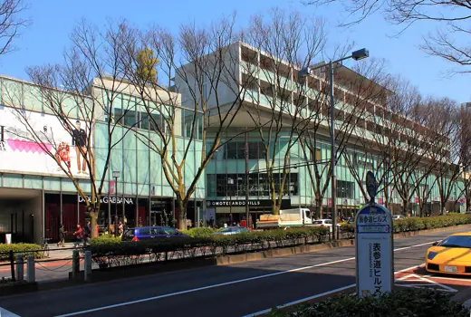
Omotesando HillsTadao Ando · 2006 Onagawa StationShigeru Ban · 2015
Onagawa StationShigeru Ban · 2015 Onassis StegiArchitecture-Studio · 2010
Onassis StegiArchitecture-Studio · 2010 One Central ParkJean Nouvel · 2014
One Central ParkJean Nouvel · 2014 One Chase Manhattan Plaza (28 Liberty Street)SOM (Gordon Bunshaft) · 1961
One Chase Manhattan Plaza (28 Liberty Street)SOM (Gordon Bunshaft) · 1961 One Za'abeelNikken Sekkei · 2023
One Za'abeelNikken Sekkei · 2023 One57Christian de Portzamparc · 2014
One57Christian de Portzamparc · 2014 Ontario Science CentreRaymond Moriyama · 1969
Ontario Science CentreRaymond Moriyama · 1969 Open Chapel of Lomas de Cuernavaca (Palmira Chapel)Félix Candela, with Guillermo Rosell and Manuel Larrosa · 1959
Open Chapel of Lomas de Cuernavaca (Palmira Chapel)Félix Candela, with Guillermo Rosell and Manuel Larrosa · 1959 Open Hand MonumentLe Corbusier · 1985
Open Hand MonumentLe Corbusier · 1985 Opera Village (Operndorf Afrika)Diébédo Francis Kéré · 2011
Opera Village (Operndorf Afrika)Diébédo Francis Kéré · 2011 Opus Hong KongFrank Gehry · 2012
Opus Hong KongFrank Gehry · 2012 Opéra BastilleCarlos Ott · 1989
Opéra BastilleCarlos Ott · 1989 Opéra de LyonJean Nouvel · 1993
Opéra de LyonJean Nouvel · 1993 Orange CubeJakob + MacFarlane · 2010
Orange CubeJakob + MacFarlane · 2010 Ordos MuseumMAD Architects (Ma Yansong) · 2011
Ordos MuseumMAD Architects (Ma Yansong) · 2011 Oriental Pearl TowerEast China Architectural Design Institute · 1994
Oriental Pearl TowerEast China Architectural Design Institute · 1994 Orquideorama, Medellín Botanical GardenPlan B Arquitectos, JPRCR · 2006
Orquideorama, Medellín Botanical GardenPlan B Arquitectos, JPRCR · 2006 Osaka Prefectural Sayamaike MuseumTadao Ando · 2001
Osaka Prefectural Sayamaike MuseumTadao Ando · 2001 Oscar Niemeyer International Cultural CentreOscar Niemeyer · 2011
Oscar Niemeyer International Cultural CentreOscar Niemeyer · 2011 Oscar Niemeyer MuseumOscar Niemeyer · 2002
Oscar Niemeyer MuseumOscar Niemeyer · 2002 Oslo City HallArnstein Arneberg, Magnus Poulsson · 1950
Oslo City HallArnstein Arneberg, Magnus Poulsson · 1950 Oslo Opera HouseSnøhetta · 2008
Oslo Opera HouseSnøhetta · 2008 Ostankino TowerNikolai Nikitin · 1967
Ostankino TowerNikolai Nikitin · 1967 Otaniemi ChapelKaija Siren, Heikki Siren · 1957
Otaniemi ChapelKaija Siren, Heikki Siren · 1957 OzeaneumBehnisch Architekten · 2008
OzeaneumBehnisch Architekten · 2008 Pacific Science CenterMinoru Yamasaki · 1962
Pacific Science CenterMinoru Yamasaki · 1962 Padiglione d'Arte ContemporaneaIgnazio Gardella · 1954
Padiglione d'Arte ContemporaneaIgnazio Gardella · 1954 Padre Pio Pilgrimage ChurchRenzo Piano · 2004
Padre Pio Pilgrimage ChurchRenzo Piano · 2004 Pagoda of Fogong Temple (Yingxian Wooden Pagoda)Liao dynasty builders · 1056
Pagoda of Fogong Temple (Yingxian Wooden Pagoda)Liao dynasty builders · 1056 Paimio SanatoriumAlvar Aalto · 1933
Paimio SanatoriumAlvar Aalto · 1933 Pakistan MonumentArif Masoud · 2007
Pakistan MonumentArif Masoud · 2007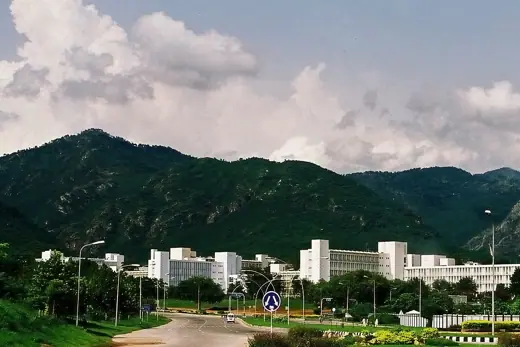
Pakistan SecretariatGio Ponti · 1964 Paks Catholic ChurchImre Makovecz · 1991
Paks Catholic ChurchImre Makovecz · 1991 Palace of AssemblyLe Corbusier · 1962
Palace of AssemblyLe Corbusier · 1962 Palace of Culture and ScienceLev Rudnev · 1955
Palace of Culture and ScienceLev Rudnev · 1955 Palace of JusticeJoseph Poelaert · 1883
Palace of JusticeJoseph Poelaert · 1883 Palace of Justice (Punjab and Haryana High Court)Le Corbusier · 1955
Palace of Justice (Punjab and Haryana High Court)Le Corbusier · 1955 Palace of NationsHenri-Paul Nénot, Julien Flegenheimer and others · 1938
Palace of NationsHenri-Paul Nénot, Julien Flegenheimer and others · 1938 Palace of Peace and ReconciliationFoster + Partners · 2006
Palace of Peace and ReconciliationFoster + Partners · 2006 Palace of SerbiaMihailo Jankovic · 1959
Palace of SerbiaMihailo Jankovic · 1959 Palace of the RepublicNikolai Ripinsky, Leonid Ukhobotov and team · 1970
Palace of the RepublicNikolai Ripinsky, Leonid Ukhobotov and team · 1970 Palacio BaroloMario Palanti · 1923
Palacio BaroloMario Palanti · 1923 Palacio de Bellas ArtesAdamo Boari, Federico Mariscal · 1934
Palacio de Bellas ArtesAdamo Boari, Federico Mariscal · 1934 Palacio de los DeportesFelix Candela · 1968
Palacio de los DeportesFelix Candela · 1968 Palacio SalvoMario Palanti · 1928
Palacio SalvoMario Palanti · 1928 Palais des Expositions (Grand Palais), CharleroiAgwA, architecten jan de vylder inge vinck · 2024
Palais des Expositions (Grand Palais), CharleroiAgwA, architecten jan de vylder inge vinck · 2024 Palais GarnierCharles Garnier · 1875
Palais GarnierCharles Garnier · 1875 Palau de la Música CatalanaLluis Domenech i Montaner · 1908
Palau de la Música CatalanaLluis Domenech i Montaner · 1908 Palau de les Arts Reina SofiaSantiago Calatrava · 2005
Palau de les Arts Reina SofiaSantiago Calatrava · 2005 Palau GüellAntoni Gaudí · 1890
Palau GüellAntoni Gaudí · 1890 Palau Municipal d'Esports de BadalonaEsteve Bonell, Francesc Rius · 1991
Palau Municipal d'Esports de BadalonaEsteve Bonell, Francesc Rius · 1991 Palau Sant JordiArata Isozaki · 1990
Palau Sant JordiArata Isozaki · 1990 Palazzetto dello SportPier Luigi Nervi, Annibale Vitellozzi · 1957
Palazzetto dello SportPier Luigi Nervi, Annibale Vitellozzi · 1957 Palazzo dei CongressiAdalberto Libera · 1954
Palazzo dei CongressiAdalberto Libera · 1954 Palazzo del LavoroPier Luigi Nervi with Gio Ponti · 1961
Palazzo del LavoroPier Luigi Nervi with Gio Ponti · 1961 Palazzo dell'Arte (Triennale di Milano)Giovanni Muzio · 1933
Palazzo dell'Arte (Triennale di Milano)Giovanni Muzio · 1933 Palazzo della Civiltà ItalianaGiovanni Guerrini, Ernesto Bruno La Padula, Mario Romano · 1943
Palazzo della Civiltà ItalianaGiovanni Guerrini, Ernesto Bruno La Padula, Mario Romano · 1943 Palazzo dello SportPier Luigi Nervi, Marcello Piacentini · 1960
Palazzo dello SportPier Luigi Nervi, Marcello Piacentini · 1960 Palazzo LombardiaPei Cobb Freed & Partners · 2010
Palazzo LombardiaPei Cobb Freed & Partners · 2010 Palazzo PiccolominiBernardo Rossellino · 1462
Palazzo PiccolominiBernardo Rossellino · 1462 Palazzo Venier dei LeoniLorenzo Boschetti · 1749
Palazzo Venier dei LeoniLorenzo Boschetti · 1749 Palestinian MuseumHeneghan Peng · 2016
Palestinian MuseumHeneghan Peng · 2016 Palestra (Gymnasium), LosoneLivio Vacchini · 1997
Palestra (Gymnasium), LosoneLivio Vacchini · 1997 Palika Kendra (NDMC Building)Kuldip Singh, Mahendra Raj · 1984
Palika Kendra (NDMC Building)Kuldip Singh, Mahendra Raj · 1984 Palmach MuseumZvi Hecker and Rafi Segal · 2000
Palmach MuseumZvi Hecker and Rafi Segal · 2000 Palmenhaus, BurggartenFriedrich Ohmann · 1906
Palmenhaus, BurggartenFriedrich Ohmann · 1906 Palmerston North City LibraryIan Athfield (Athfield Architects) · 1996
Palmerston North City LibraryIan Athfield (Athfield Architects) · 1996 Palmolive BuildingHolabird & Root · 1929
Palmolive BuildingHolabird & Root · 1929 Palmyra HouseStudio Mumbai, Bijoy Jain · 2007
Palmyra HouseStudio Mumbai, Bijoy Jain · 2007 Palácio da AlvoradaOscar Niemeyer · 1958
Palácio da AlvoradaOscar Niemeyer · 1958 Palácio da Justiça (Ministry of Justice), BrasíliaOscar Niemeyer · 1972
Palácio da Justiça (Ministry of Justice), BrasíliaOscar Niemeyer · 1972 Palácio do PlanaltoOscar Niemeyer · 1960
Palácio do PlanaltoOscar Niemeyer · 1960 Pampulha Art Museum (former Casino)Oscar Niemeyer · 1943
Pampulha Art Museum (former Casino)Oscar Niemeyer · 1943 Pan American Health Organization HeadquartersRomán Fresnedo Siri · 1965
Pan American Health Organization HeadquartersRomán Fresnedo Siri · 1965 PantheonHadrian (attrib.) · 125
PantheonHadrian (attrib.) · 125 Papalote Children's MuseumRicardo Legorreta · 1993
Papalote Children's MuseumRicardo Legorreta · 1993 PapaverhofJan Wils · 1921
PapaverhofJan Wils · 1921 Paper Dome (Paper Church)Shigeru Ban · 2008
Paper Dome (Paper Church)Shigeru Ban · 2008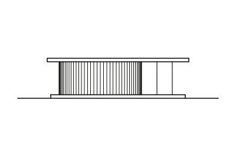
Paper HouseShigeru Ban · 1995 Parc André CitroënGilles Clement, Patrick Berger · 1992
Parc André CitroënGilles Clement, Patrick Berger · 1992 parc de la VilletteBernard Tschumi · 1987
parc de la VilletteBernard Tschumi · 1987 Paris Metro EntrancesHector Guimard · 1900
Paris Metro EntrancesHector Guimard · 1900 Paris-Charles de Gaulle Airport Terminal 1Paul Andreu · 1974
Paris-Charles de Gaulle Airport Terminal 1Paul Andreu · 1974 Park GüellAntoni Gaudí · 1914
Park GüellAntoni Gaudí · 1914 Park HillJack Lynn, Ivor Smith · 1961
Park HillJack Lynn, Ivor Smith · 1961 Parkroyal Collection PickeringWOHA · 2013
Parkroyal Collection PickeringWOHA · 2013 Parliament HouseMitchell/Giurgola & Thorp · 1988
Parliament HouseMitchell/Giurgola & Thorp · 1988 Parliament House (Eduskuntatalo)J. S. Sirén · 1931
Parliament House (Eduskuntatalo)J. S. Sirén · 1931 Parliament of Sri LankaGeoffrey Bawa · 1982
Parliament of Sri LankaGeoffrey Bawa · 1982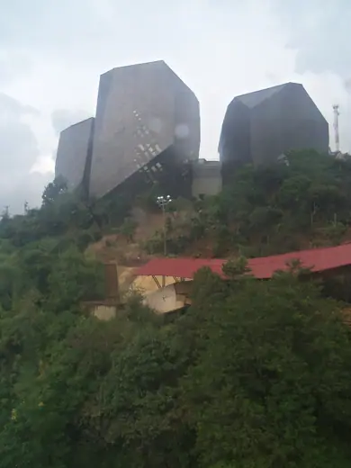
Parque Biblioteca EspañaGiancarlo Mazzanti · 2007 Parque Central ComplexDaniel Fernández-Shaw (Siso, Shaw & Asociados) · 1983
Parque Central ComplexDaniel Fernández-Shaw (Siso, Shaw & Asociados) · 1983 Parque GuinleLúcio Costa · 1954
Parque GuinleLúcio Costa · 1954 Partisan Memorial CemeteryBogdan Bogdanović · 1965
Partisan Memorial CemeteryBogdan Bogdanović · 1965 Paspels SchoolValerio Olgiati · 1998
Paspels SchoolValerio Olgiati · 1998 Pastoor van ArskerkAldo van Eyck · 1969
Pastoor van ArskerkAldo van Eyck · 1969 Patan MuseumGötz Hagmüller · 1997
Patan MuseumGötz Hagmüller · 1997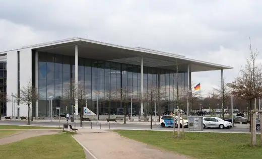
Paul Löbe HouseStephan Braunfels · 2001 Paul VI Audience HallPier Luigi Nervi · 1971
Paul VI Audience HallPier Luigi Nervi · 1971 Paula Fox Melanoma and Cancer CentreLyons · 2024
Paula Fox Melanoma and Cancer CentreLyons · 2024 Paula Modersohn-Becker MuseumBernhard Hoetger · 1927
Paula Modersohn-Becker MuseumBernhard Hoetger · 1927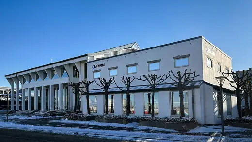
Paustian HouseJørn Utzon · 1987 Pavilion for Japanese Art, LACMABruce Goff and Bart Prince · 1988
Pavilion for Japanese Art, LACMABruce Goff and Bart Prince · 1988 Pavilion of Knowledge (Pavilhão do Conhecimento)João Luís Carrilho da Graça · 1999
Pavilion of Knowledge (Pavilhão do Conhecimento)João Luís Carrilho da Graça · 1999 Pavillon Le CorbusierLe Corbusier · 1967
Pavillon Le CorbusierLe Corbusier · 1967 Pavillon NoirRudy Ricciotti · 2006
Pavillon NoirRudy Ricciotti · 2006 Pavillon SuisseLe Corbusier · 1933
Pavillon SuisseLe Corbusier · 1933 Peace Hotel (Sassoon House)Palmer and Turner · 1929
Peace Hotel (Sassoon House)Palmer and Turner · 1929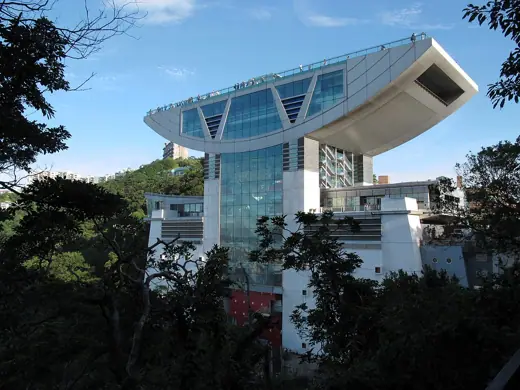
Peak TowerTerry Farrell · 1997 Pearl PalaceWilliam Wesley Peters · 1972
Pearl PalaceWilliam Wesley Peters · 1972 Pearl River TowerSOM · 2011
Pearl River TowerSOM · 2011 Peckham LibraryAlsop & Störmer · 2000
Peckham LibraryAlsop & Störmer · 2000 Pedregulho HousingAffonso Eduardo Reidy · c. 1955
Pedregulho HousingAffonso Eduardo Reidy · c. 1955 Penguin Pool, London ZooBerthold Lubetkin and Tecton · 1934
Penguin Pool, London ZooBerthold Lubetkin and Tecton · 1934 Pennsylvania State CapitolJoseph Miller Huston · 1906
Pennsylvania State CapitolJoseph Miller Huston · 1906 Pennzoil PlacePhilip Johnson and John Burgee · 1975
Pennzoil PlacePhilip Johnson and John Burgee · 1975 People's Park ComplexDesign Partnership · 1973
People's Park ComplexDesign Partnership · 1973 Pergamon MuseumAlfred Messel and Ludwig Hoffmann · 1930
Pergamon MuseumAlfred Messel and Ludwig Hoffmann · 1930 Perot Museum of Nature and ScienceMorphosis, Thom Mayne · 2012
Perot Museum of Nature and ScienceMorphosis, Thom Mayne · 2012 Perret TowerAuguste Perret · 1925
Perret TowerAuguste Perret · 1925 Perth ArenaAshton Raggatt McDougall · 2012
Perth ArenaAshton Raggatt McDougall · 2012 Petit PalaisCharles Girault · 1900
Petit PalaisCharles Girault · 1900 Petronas TowersCesar Pelli · 1998
Petronas TowersCesar Pelli · 1998 Petroperú BuildingDaniel Arana Ríos, Walter Weberhofer · 1973
Petroperú BuildingDaniel Arana Ríos, Walter Weberhofer · 1973 Petter Dass MuseumSnohetta · 2007
Petter Dass MuseumSnohetta · 2007 Phaeno Science CenterZaha Hadid · 2005
Phaeno Science CenterZaha Hadid · 2005 Philadelphia City HallJohn McArthur Jr. · 1901
Philadelphia City HallJohn McArthur Jr. · 1901 Philadelphia Museum of ArtHorace Trumbauer; Zantzinger, Borie and Medary · 1928
Philadelphia Museum of ArtHorace Trumbauer; Zantzinger, Borie and Medary · 1928 Philharmonie de ParisAteliers Jean Nouvel · 2015
Philharmonie de ParisAteliers Jean Nouvel · 2015 Philharmonie LuxembourgChristian de Portzamparc · 2005
Philharmonie LuxembourgChristian de Portzamparc · 2005 Philippine International Convention CenterLeandro Locsin · 1976
Philippine International Convention CenterLeandro Locsin · 1976 Phillips Exeter Academy LibraryLouis Kahn · 1971
Phillips Exeter Academy LibraryLouis Kahn · 1971 Pierre Lassonde PavilionOMA (Shohei Shigematsu) with Provencher_Roy · 2016
Pierre Lassonde PavilionOMA (Shohei Shigematsu) with Provencher_Roy · 2016 PierresvivesZaha Hadid Architects · 2012
PierresvivesZaha Hadid Architects · 2012 Pinacoteca do Estado de São PauloPaulo Mendes da Rocha · 1998
Pinacoteca do Estado de São PauloPaulo Mendes da Rocha · 1998 Pinacoteca Giovanni e Marella AgnelliRenzo Piano Building Workshop · 2002
Pinacoteca Giovanni e Marella AgnelliRenzo Piano Building Workshop · 2002 Pinakothek der ModerneStephan Braunfels · 2002
Pinakothek der ModerneStephan Braunfels · 2002 Pinnacle@DuxtonARC Studio Architecture + Urbanism · 2009
Pinnacle@DuxtonARC Studio Architecture + Urbanism · 2009 Pirelli TowerGio Ponti · 1960
Pirelli TowerGio Ponti · 1960 Place BonaventureARCOP · 1967
Place BonaventureARCOP · 1967 Place of Memory, Tolerance and Social InclusionBarclay & Crousse · 2015
Place of Memory, Tolerance and Social InclusionBarclay & Crousse · 2015 Place Ville MarieI. M. Pei, Henry N. Cobb · 1962
Place Ville MarieI. M. Pei, Henry N. Cobb · 1962 PLATO Contemporary Art GalleryKWK Promes (Robert Konieczny) · 2022
PLATO Contemporary Art GalleryKWK Promes (Robert Konieczny) · 2022 Plenary Building of the Bundestag, BonnBehnisch & Partner (Günter Behnisch) · 1992
Plenary Building of the Bundestag, BonnBehnisch & Partner (Günter Behnisch) · 1992 Pointe-à-Callière MuseumDan Hanganu · 1992
Pointe-à-Callière MuseumDan Hanganu · 1992 POLIN Museum of the History of Polish JewsLahdelma & Mahlamäki · 2013
POLIN Museum of the History of Polish JewsLahdelma & Mahlamäki · 2013 Ponte CityManfred Hermer · 1975
Ponte CityManfred Hermer · 1975 Ponte Musmeci (Viadotto dell'Industria)Sergio Musmeci · 1976
Ponte Musmeci (Viadotto dell'Industria)Sergio Musmeci · 1976 Porsche MuseumDelugan Meissl Associated Architects · 2009
Porsche MuseumDelugan Meissl Associated Architects · 2009 Port HouseZaha Hadid Architects · 2016
Port HouseZaha Hadid Architects · 2016 Portland BuildingMichael Graves · 1982
Portland BuildingMichael Graves · 1982 Portugal PavilionÁlvaro Siza · 1998
Portugal PavilionÁlvaro Siza · 1998 Potala Palace5th Dalai Lama (commissioned) · 1694
Potala Palace5th Dalai Lama (commissioned) · 1694 Potato Head Beach ClubAndra Matin · 2010
Potato Head Beach ClubAndra Matin · 2010 PoundburyLéon Krier · 1993
PoundburyLéon Krier · 1993 Pousada de Santa MarinhaFernando Távora · 1985
Pousada de Santa MarinhaFernando Távora · 1985 Pousada Santa Maria do BouroEduardo Souto de Moura · 1997
Pousada Santa Maria do BouroEduardo Souto de Moura · 1997 Powerhouse BrattørkaiaSnøhetta · 2019
Powerhouse BrattørkaiaSnøhetta · 2019 PPG PlacePhilip Johnson and John Burgee · 1984
PPG PlacePhilip Johnson and John Burgee · 1984 Prada AoyamaHerzog & de Meuron · 2003
Prada AoyamaHerzog & de Meuron · 2003 Prado Museum extensionRafael Moneo · 2007
Prado Museum extensionRafael Moneo · 2007 Praça das ArtesBrasil Arquitetura · 2012
Praça das ArtesBrasil Arquitetura · 2012 Praça do Patriarca CanopyPaulo Mendes da Rocha · 2002
Praça do Patriarca CanopyPaulo Mendes da Rocha · 2002 Premabhai HallB. V. Doshi, Mahendra Raj · 1972
Premabhai HallB. V. Doshi, Mahendra Raj · 1972 Preston Bus StationBuilding Design Partnership (Keith Ingham, Charles Wilson) with Ove Arup & Partners · 1969
Preston Bus StationBuilding Design Partnership (Keith Ingham, Charles Wilson) with Ove Arup & Partners · 1969 Price TowerFrank Lloyd Wright · 1956
Price TowerFrank Lloyd Wright · 1956 Prime TowerGigon/Guyer · 2011
Prime TowerGigon/Guyer · 2011 Prudential HouseMarcin Weinfeld; steel frame by Stefan Bryła and Wenczesław Poniż · 1934
Prudential HouseMarcin Weinfeld; steel frame by Stefan Bryła and Wenczesław Poniż · 1934 PSFS BuildingGeorge Howe, William Lescaze · 1932
PSFS BuildingGeorge Howe, William Lescaze · 1932 Puente de la MujerSantiago Calatrava · 2001
Puente de la MujerSantiago Calatrava · 2001 Pulitzer Arts FoundationTadao Ando · 2001
Pulitzer Arts FoundationTadao Ando · 2001 Punakha DzongZhabdrung Ngawang Namgyal · 1638
Punakha DzongZhabdrung Ngawang Namgyal · 1638 Qantas House (No. 1 Chifley Square)Rudder, Littlemore & Rudder · 1957
Qantas House (No. 1 Chifley Square)Rudder, Littlemore & Rudder · 1957 Qasr Al Hokm Justice Palace and Grand MosqueRasem Badran · 1992
Qasr Al Hokm Justice Palace and Grand MosqueRasem Badran · 1992 Qatar Faculty of Islamic StudiesMangera Yvars Architects · 2015
Qatar Faculty of Islamic StudiesMangera Yvars Architects · 2015 Qatar National Convention CentreArata Isozaki · 2011
Qatar National Convention CentreArata Isozaki · 2011 Qatar National LibraryOMA · 2017
Qatar National LibraryOMA · 2017 Qatar UniversityKamal El Kafrawi · 1985
Qatar UniversityKamal El Kafrawi · 1985 Quartier SchützenstraßeAldo Rossi · 1998
Quartier SchützenstraßeAldo Rossi · 1998 Quay Quarter Tower3XN with BVN · 2022
Quay Quarter Tower3XN with BVN · 2022 Quba MosqueAbdel-Wahed El-Wakil · 1986
Quba MosqueAbdel-Wahed El-Wakil · 1986 Queen Alia International AirportFoster + Partners · 2013
Queen Alia International AirportFoster + Partners · 2013 Queen Elizabeth HallGLC Architects (Hubert Bennett, Jack Whittle, F. G. West, Geoffrey Horsefall) · 1967
Queen Elizabeth HallGLC Architects (Hubert Bennett, Jack Whittle, F. G. West, Geoffrey Horsefall) · 1967 Queen Elizabeth II Courts of LawArchitectus with Guymer Bailey Architects · 2012
Queen Elizabeth II Courts of LawArchitectus with Guymer Bailey Architects · 2012 Queen Tamar AirportJ. Mayer H. Architects · 2010
Queen Tamar AirportJ. Mayer H. Architects · 2010 Queensland Art GalleryRobin Gibson · 1982
Queensland Art GalleryRobin Gibson · 1982 Queensland Children's Hospital (former Lady Cilento Children's Hospital)Conrad Gargett Lyons · 2014
Queensland Children's Hospital (former Lady Cilento Children's Hospital)Conrad Gargett Lyons · 2014 Queensland Performing Arts Centre (QPAC)Robin Gibson · 1985
Queensland Performing Arts Centre (QPAC)Robin Gibson · 1985 Quezon Memorial ShrineFederico Ilustre · 1978
Quezon Memorial ShrineFederico Ilustre · 1978 Quinta da MalagueiraÁlvaro Siza · 1977
Quinta da MalagueiraÁlvaro Siza · 1977 Quinta MonroyAlejandro Aravena, Elemental · 2004
Quinta MonroyAlejandro Aravena, Elemental · 2004 Quzhou StadiumMAD Architects · 2022
Quzhou StadiumMAD Architects · 2022 QV1Harry Seidler & Associates · 1991
QV1Harry Seidler & Associates · 1991 Rabindra BhavanHabib Rahman · 1961
Rabindra BhavanHabib Rahman · 1961 Rachid Karami International FairOscar Niemeyer · 1975
Rachid Karami International FairOscar Niemeyer · 1975 Radio City Music HallEdward Durell Stone and Donald Deskey · 1932
Radio City Music HallEdward Durell Stone and Donald Deskey · 1932 Raffles City ChongqingMoshe Safdie · 2019
Raffles City ChongqingMoshe Safdie · 2019 Rainier TowerMinoru Yamasaki · 1977
Rainier TowerMinoru Yamasaki · 1977 Ramses Wissa Wassef Art CentreRamses Wissa Wassef · 1974
Ramses Wissa Wassef Art CentreRamses Wissa Wassef · 1974 Rani ki VavChaulukya builders · c. 1063
Rani ki VavChaulukya builders · c. 1063 Rashtrapati BhavanEdwin Lutyens · 1929
Rashtrapati BhavanEdwin Lutyens · 1929 RautataloAlvar Aalto · 1955
RautataloAlvar Aalto · 1955 Ravenscar House MuseumPatterson Associates · 2021
Ravenscar House MuseumPatterson Associates · 2021 Ray and Maria Stata Center (MIT Building 32)Frank Gehry · 2004
Ray and Maria Stata Center (MIT Building 32)Frank Gehry · 2004 Recoleta Cultural CenterClorindo Testa, Jacques Bedel · 1980
Recoleta Cultural CenterClorindo Testa, Jacques Bedel · 1980 Rectorate Tower, UNAMMario Pani, Enrique del Moral, Salvador Ortega Flores · 1952
Rectorate Tower, UNAMMario Pani, Enrique del Moral, Salvador Ortega Flores · 1952 Red Banner Textile FactoryErich Mendelsohn · 1926
Red Banner Textile FactoryErich Mendelsohn · 1926 Red City Hall (Rotes Rathaus)Hermann Friedrich Waesemann · 1869
Red City Hall (Rotes Rathaus)Hermann Friedrich Waesemann · 1869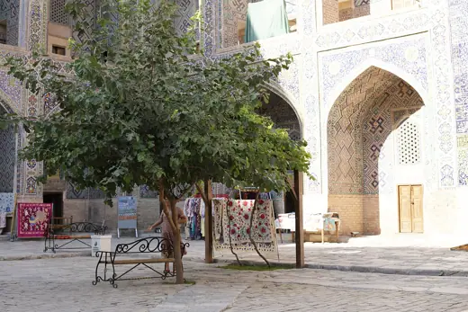
RegistanTimurid and Shaybanid builders · 1660 ReichstagNorman Foster · 1999
ReichstagNorman Foster · 1999 Reina Sofía Museum ExtensionJean Nouvel · 2005
Reina Sofía Museum ExtensionJean Nouvel · 2005 Renault Distribution CentreFoster + Partners · 1982
Renault Distribution CentreFoster + Partners · 1982 Resurrection ChapelErik Bryggman · 1941
Resurrection ChapelErik Bryggman · 1941 Retti Candle ShopHans Hollein · 1965
Retti Candle ShopHans Hollein · 1965 Reykjavík City HallStudio Granda · 1992
Reykjavík City HallStudio Granda · 1992 Rialto TowersGerard de Preu and Partners with Perrott Lyon Mathieson · 1986
Rialto TowersGerard de Preu and Partners with Perrott Lyon Mathieson · 1986 Ricola Europe Production and Storage BuildingHerzog & de Meuron · 1993
Ricola Europe Production and Storage BuildingHerzog & de Meuron · 1993 Rietveld Schröder HouseGerrit Rietveld · 1924
Rietveld Schröder HouseGerrit Rietveld · 1924 Ring of Remembrance (L'Anneau de la Mémoire)Philippe Prost · 2014
Ring of Remembrance (L'Anneau de la Mémoire)Philippe Prost · 2014 Riverside CentreHarry Seidler & Associates · 1986
Riverside CentreHarry Seidler & Associates · 1986 Riverside MuseumZaha Hadid Architects · 2011
Riverside MuseumZaha Hadid Architects · 2011 Rivesaltes Camp MemorialRudy Ricciotti · 2015
Rivesaltes Camp MemorialRudy Ricciotti · 2015 RMIT Design HubSean Godsell Architects with Peddle Thorp · 2012
RMIT Design HubSean Godsell Architects with Peddle Thorp · 2012 RMIT Storey HallAshton Raggatt McDougall · 1995
RMIT Storey HallAshton Raggatt McDougall · 1995 Robarts LibraryMathers & Haldenby · 1973
Robarts LibraryMathers & Haldenby · 1973 Robert C. Weaver Federal BuildingMarcel Breuer · 1968
Robert C. Weaver Federal BuildingMarcel Breuer · 1968 Robie HouseFrank Lloyd Wright · 1910
Robie HouseFrank Lloyd Wright · 1910 Robot BuildingSumet Jumsai · 1986
Robot BuildingSumet Jumsai · 1986 Robson SquareArthur Erickson · 1983
Robson SquareArthur Erickson · 1983 Roche Tower (Bau 1)Herzog & de Meuron · 2015
Roche Tower (Bau 1)Herzog & de Meuron · 2015 Roche Tower 2Herzog & de Meuron · 2022
Roche Tower 2Herzog & de Meuron · 2022 Rock and Roll Hall of FameI. M. Pei · 1995
Rock and Roll Hall of FameI. M. Pei · 1995 Rock Garden of ChandigarhNek Chand · 1976
Rock Garden of ChandigarhNek Chand · 1976 Rockefeller MuseumAusten Harrison · 1938
Rockefeller MuseumAusten Harrison · 1938 Rohm Theatre KyotoKunio Maekawa · 2016
Rohm Theatre KyotoKunio Maekawa · 2016 Rokko HousingTadao Ando · 1983
Rokko HousingTadao Ando · 1983 Rolex Learning CenterSANAA · 2010
Rolex Learning CenterSANAA · 2010 Romeo und JuliaHans Scharoun and Wilhelm Frank · 1959
Romeo und JuliaHans Scharoun and Wilhelm Frank · 1959 Roof HouseTezuka Architects · 2001
Roof HouseTezuka Architects · 2001 Rose Seidler HouseHarry Seidler · 1950
Rose Seidler HouseHarry Seidler · 1950 Rosenthal Center for Contemporary ArtZaha Hadid · 2003
Rosenthal Center for Contemporary ArtZaha Hadid · 2003 Rossiya CinemaSpartak Kndeghtsyan, Artur Tarkhanyan, Grachya Poghosyan · 1975
Rossiya CinemaSpartak Kndeghtsyan, Artur Tarkhanyan, Grachya Poghosyan · 1975 Rothko ChapelPhilip Johnson, Howard Barnstone · 1971
Rothko ChapelPhilip Johnson, Howard Barnstone · 1971 Rovaniemi LibraryAlvar Aalto · 1968
Rovaniemi LibraryAlvar Aalto · 1968 Row House in SumiyoshiTadao Ando · 1976
Row House in SumiyoshiTadao Ando · 1976 Roy Grounds HouseRoy Grounds · 1953
Roy Grounds HouseRoy Grounds · 1953 Royal Academy for Nature ConservationAmmar Khammash · 2014
Royal Academy for Nature ConservationAmmar Khammash · 2014 Royal Albert HallFrancis Fowke and Henry Y. D. Scott · 1871
Royal Albert HallFrancis Fowke and Henry Y. D. Scott · 1871 Royal Children's HospitalBillard Leece Partnership and Bates Smart · 2011
Royal Children's HospitalBillard Leece Partnership and Bates Smart · 2011 Royal Collections GalleryMansilla + Tuñón (Luis Moreno Mansilla, Emilio Tuñón) · 2023
Royal Collections GalleryMansilla + Tuñón (Luis Moreno Mansilla, Emilio Tuñón) · 2023 Royal College of PhysiciansDenys Lasdun · 1964
Royal College of PhysiciansDenys Lasdun · 1964 Royal Commonwealth PoolRobert Matthew, Johnson-Marshall and Partners (John Richards) · 1970
Royal Commonwealth PoolRobert Matthew, Johnson-Marshall and Partners (John Richards) · 1970 Royal Danish PlayhouseLundgaard & Tranberg · 2008
Royal Danish PlayhouseLundgaard & Tranberg · 2008 Royal Exhibition BuildingJoseph Reed · 1880
Royal Exhibition BuildingJoseph Reed · 1880 Royal Festival HallLeslie Martin, Robert Matthew · 1951
Royal Festival HallLeslie Martin, Robert Matthew · 1951 Royal National TheatreDenys Lasdun · 1976
Royal National TheatreDenys Lasdun · 1976 Royal Theatre of RabatZaha Hadid Architects · 2021
Royal Theatre of RabatZaha Hadid Architects · 2021 Rue des Suisses HousingHerzog & de Meuron · 2000
Rue des Suisses HousingHerzog & de Meuron · 2000 Rufer HouseAdolf Loos · 1922
Rufer HouseAdolf Loos · 1922 Ruhr University BochumHentrich, Petschnigg & Partner (Helmut Hentrich) · 1965
Ruhr University BochumHentrich, Petschnigg & Partner (Helmut Hentrich) · 1965 Rusakov Workers' ClubKonstantin Melnikov · 1928
Rusakov Workers' ClubKonstantin Melnikov · 1928 Rødovre Town HallArne Jacobsen · 1956
Rødovre Town HallArne Jacobsen · 1956 S. R. Crown HallMies van der Rohe · 1956
S. R. Crown HallMies van der Rohe · 1956 Sacred Heart Cathedral, AlgiersPaul Herbe, Jean Le Couteur · 1962
Sacred Heart Cathedral, AlgiersPaul Herbe, Jean Le Couteur · 1962 Sacred Heart Cathedral, CasablancaPaul Tournon · 1930
Sacred Heart Cathedral, CasablancaPaul Tournon · 1930 Sagrada FamiliaAntoni Gaudi · begun 1882
Sagrada FamiliaAntoni Gaudi · begun 1882 Sagrada Família schoolsAntoni Gaudi · 1909
Sagrada Família schoolsAntoni Gaudi · 1909 Sainsbury Centre for Visual ArtsNorman Foster · 1978
Sainsbury Centre for Visual ArtsNorman Foster · 1978 Sainsbury LaboratoryStanton Williams · 2011
Sainsbury LaboratoryStanton Williams · 2011 Sainsbury Wing, National GalleryVenturi, Scott Brown and Associates · 1991
Sainsbury Wing, National GalleryVenturi, Scott Brown and Associates · 1991 Saint Benedict ChapelPeter Zumthor · 1988
Saint Benedict ChapelPeter Zumthor · 1988 Saint Boniface CathedralEtienne Gaboury · 1972
Saint Boniface CathedralEtienne Gaboury · 1972 Saint Louis Art Museum, East BuildingDavid Chipperfield Architects · 2013
Saint Louis Art Museum, East BuildingDavid Chipperfield Architects · 2013 Saint Peter Chapel, Campos do JordãoPaulo Mendes da Rocha · 1987
Saint Peter Chapel, Campos do JordãoPaulo Mendes da Rocha · 1987 Saint-Pierre, FirminyLe Corbusier, José Oubrerie · 2006
Saint-Pierre, FirminyLe Corbusier, José Oubrerie · 2006 Sainte-Marie de La TouretteLe Corbusier · 1960
Sainte-Marie de La TouretteLe Corbusier · 1960 Saipal BakeryPancho Guedes · 1954
Saipal BakeryPancho Guedes · 1954 Saitama Prefectural UniversityRiken Yamamoto · 1999
Saitama Prefectural UniversityRiken Yamamoto · 1999 Sakaide Artificial GroundMasato Otaka · 1968
Sakaide Artificial GroundMasato Otaka · 1968 Sakamoto Ryōma Memorial MuseumWorkshop (Hiroshi and Akiko Takahashi) · 1991
Sakamoto Ryōma Memorial MuseumWorkshop (Hiroshi and Akiko Takahashi) · 1991 Salerno Maritime TerminalZaha Hadid Architects · 2016
Salerno Maritime TerminalZaha Hadid Architects · 2016 Salk InstituteLouis Kahn · 1965
Salk InstituteLouis Kahn · 1965 SALT GalataHan Tümertekin · 2011
SALT GalataHan Tümertekin · 2011 Salyut HotelAvraham Miletsky · 1984
Salyut HotelAvraham Miletsky · 1984 San Antonio Central LibraryRicardo Legorreta with Sprinkle Robey Architects and Johnson-Dempsey & Associates · 1995
San Antonio Central LibraryRicardo Legorreta with Sprinkle Robey Architects and Johnson-Dempsey & Associates · 1995 San Cataldo CemeteryAldo Rossi, Gianni Braghieri · 1978San Francesco al FopponinoGio Ponti · 1964
San Cataldo CemeteryAldo Rossi, Gianni Braghieri · 1978San Francesco al FopponinoGio Ponti · 1964 San Francisco City HallArthur Brown Jr. · 1915
San Francisco City HallArthur Brown Jr. · 1915 San Francisco Federal BuildingMorphosis · 2007
San Francisco Federal BuildingMorphosis · 2007 San Francisco Museum of Modern ArtMario Botta · 1995
San Francisco Museum of Modern ArtMario Botta · 1995 San José City HallRichard Meier · 2005
San José City HallRichard Meier · 2005 San Miguel Corporation BuildingMañosa & Partners · 1984
San Miguel Corporation BuildingMañosa & Partners · 1984 San Telmo Museum extensionNieto Sobejano Arquitectos · 2011
San Telmo Museum extensionNieto Sobejano Arquitectos · 2011 Sanatorium Joseph LemaireMaxime Brunfaut · 1937
Sanatorium Joseph LemaireMaxime Brunfaut · 1937 Sanatorium PurkersdorfJosef Hoffmann · 1904
Sanatorium PurkersdorfJosef Hoffmann · 1904 Sancaklar MosqueEmre Arolat · 2012
Sancaklar MosqueEmre Arolat · 2012 Sanctuary of MeritxellRicardo Bofill · 1976
Sanctuary of MeritxellRicardo Bofill · 1976 Sanctuary of the Madonna of TearsMichel Andrault, Pierre Parat · 1994
Sanctuary of the Madonna of TearsMichel Andrault, Pierre Parat · 1994 SangathB. V. Doshi · 1981
SangathB. V. Doshi · 1981 SanomataloJan Söderlund, Antti-Matti Siikala · 1999
SanomataloJan Söderlund, Antti-Matti Siikala · 1999 Sansad Bhavan (Old Parliament House)Edwin Lutyens, Herbert Baker · 1927
Sansad Bhavan (Old Parliament House)Edwin Lutyens, Herbert Baker · 1927 Sanskar KendraLe Corbusier · 1957
Sanskar KendraLe Corbusier · 1957 Sant Antoni-Joan Oliver LibraryRCR Arquitectes · 2007
Sant Antoni-Joan Oliver LibraryRCR Arquitectes · 2007 Santa Caterina MarketEnric Miralles, Benedetta Tagliabue · 2005
Santa Caterina MarketEnric Miralles, Benedetta Tagliabue · 2005 Santa Maria Assunta, RiolaAlvar Aalto · 1978
Santa Maria Assunta, RiolaAlvar Aalto · 1978 Santa Maria Church, Marco de CanavesesÁlvaro Siza · 1996
Santa Maria Church, Marco de CanavesesÁlvaro Siza · 1996 Santa Maria da Feira Municipal MarketFernando Távora · 1959
Santa Maria da Feira Municipal MarketFernando Távora · 1959 Santa Maria Immacolata, LongaroneGiovanni Michelucci · 1983
Santa Maria Immacolata, LongaroneGiovanni Michelucci · 1983 Santo André Civic CentreRino Levi · 1969
Santo André Civic CentreRino Levi · 1969 Sapporo DomeHiroshi Hara · 2001
Sapporo DomeHiroshi Hara · 2001 Sara KulturhusWhite Arkitekter · 2021
Sara KulturhusWhite Arkitekter · 2021 Sardar Vallabhbhai Patel StadiumCharles Correa, Mahendra Raj · 1966
Sardar Vallabhbhai Patel StadiumCharles Correa, Mahendra Raj · 1966 Sarpi Border CheckpointJ. Mayer H. Architects · 2011
Sarpi Border CheckpointJ. Mayer H. Architects · 2011 SAS Royal HotelArne Jacobsen · 1960
SAS Royal HotelArne Jacobsen · 1960 Sava CentarStojan Maksimović · 1979
Sava CentarStojan Maksimović · 1979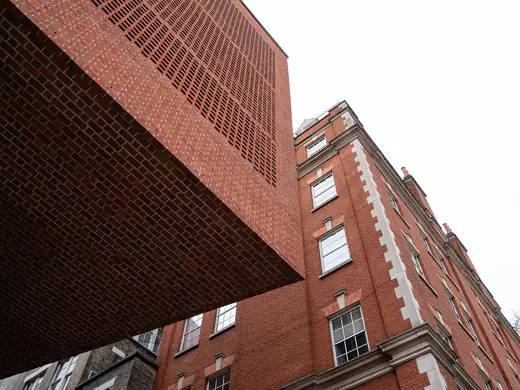
Saw Swee Hock Student Centre, LSEO'Donnell + Tuomey · 2014 Scale Lane BridgeMcDowell+Benedetti · 2013
Scale Lane BridgeMcDowell+Benedetti · 2013 Scarborough College (Andrews Building)John Andrews · 1964
Scarborough College (Andrews Building)John Andrews · 1964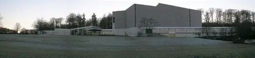
Scharoun Theatre WolfsburgHans Scharoun · 1973 SchaulagerHerzog & de Meuron · 2003
SchaulagerHerzog & de Meuron · 2003 Schindler HouseRudolph Schindler · 1922
Schindler HouseRudolph Schindler · 1922 Schlangenbader Straße Housing (Die Schlange)Georg Heinrichs, Wolf Bertelsmann, Gerhard and Klaus Detlev Krebs · 1980
Schlangenbader Straße Housing (Die Schlange)Georg Heinrichs, Wolf Bertelsmann, Gerhard and Klaus Detlev Krebs · 1980 Schocken Department Store, ChemnitzErich Mendelsohn · 1930
Schocken Department Store, ChemnitzErich Mendelsohn · 1930 Schocken LibraryErich Mendelsohn · 1936
Schocken LibraryErich Mendelsohn · 1936 School of the Arts, SingaporeWOHA · 2010
School of the Arts, SingaporeWOHA · 2010 Scientific Information Centre and Academic Library (CINiBA)HS99 · 2012
Scientific Information Centre and Academic Library (CINiBA)HS99 · 2012 Scotland Street SchoolCharles Rennie Mackintosh · 1906
Scotland Street SchoolCharles Rennie Mackintosh · 1906 Scottish Parliament BuildingEnric Miralles, Benedetta Tagliabue · 2004
Scottish Parliament BuildingEnric Miralles, Benedetta Tagliabue · 2004 SDU Campus KoldingHenning Larsen Architects · 2014
SDU Campus KoldingHenning Larsen Architects · 2014 Sea OrganNikola Bašić · 2005
Sea OrganNikola Bašić · 2005 Sea Ranch Condominium OneMoore Lyndon Turnbull Whitaker (MLTW) · 1965
Sea Ranch Condominium OneMoore Lyndon Turnbull Whitaker (MLTW) · 1965 Seagram BuildingMies van der Rohe · 1958
Seagram BuildingMies van der Rohe · 1958 Seattle Central LibraryOMA · 2004
Seattle Central LibraryOMA · 2004 SEC ArmadilloFoster and Partners · 1997
SEC ArmadilloFoster and Partners · 1997 Secession BuildingJoseph Maria Olbrich · 1898
Secession BuildingJoseph Maria Olbrich · 1898 Second Artigas House (Residência Vilanova Artigas II)Vilanova Artigas · 1949
Second Artigas House (Residência Vilanova Artigas II)Vilanova Artigas · 1949 Secretariat BuildingLe Corbusier · 1958
Secretariat BuildingLe Corbusier · 1958 Seema MalakaGeoffrey Bawa · 1976
Seema MalakaGeoffrey Bawa · 1976 Seinäjoki City HallAlvar Aalto · 1965
Seinäjoki City HallAlvar Aalto · 1965 Selfridges Building, BirminghamFuture Systems (Jan Kaplický, Amanda Levete) · 2003
Selfridges Building, BirminghamFuture Systems (Jan Kaplický, Amanda Levete) · 2003 Selimiye MosqueMimar Sinan · 1575
Selimiye MosqueMimar Sinan · 1575 SemperoperGottfried Semper · 1878
SemperoperGottfried Semper · 1878 Sendai MediathequeToyo Ito · 2001
Sendai MediathequeToyo Ito · 2001 SeneddRichard Rogers Partnership · 2006
SeneddRichard Rogers Partnership · 2006 Seonyudo ParkSeoahn Total Landscape (Jung Young-sun), Joh Sung-yong · 2002
Seonyudo ParkSeoahn Total Landscape (Jung Young-sun), Joh Sung-yong · 2002 Seoul Arts Center Opera HouseKim Seok-chul · 1993
Seoul Arts Center Opera HouseKim Seok-chul · 1993 Seoul City HallYoo Kerl (iArc) · 2012
Seoul City HallYoo Kerl (iArc) · 2012 Seoul National University Museum of ArtOMA (Rem Koolhaas) · 2005
Seoul National University Museum of ArtOMA (Rem Koolhaas) · 2005 Seoul Olympic StadiumKim Swoo-geun · 1984
Seoul Olympic StadiumKim Swoo-geun · 1984 Seoullo 7017MVRDV · 2017
Seoullo 7017MVRDV · 2017 Serra Dourada StadiumPaulo Mendes da Rocha · 1975
Serra Dourada StadiumPaulo Mendes da Rocha · 1975 Serralves Museum of Contemporary ArtÁlvaro Siza · 1999
Serralves Museum of Contemporary ArtÁlvaro Siza · 1999 SESC 24 de MaioPaulo Mendes da Rocha, MMBB · 2017
SESC 24 de MaioPaulo Mendes da Rocha, MMBB · 2017 SESC PompéiaLina Bo Bardi · 1986
SESC PompéiaLina Bo Bardi · 1986 Setúbal School of EducationÁlvaro Siza · 1994
Setúbal School of EducationÁlvaro Siza · 1994 Sevan Writers' ResortGevorg Kochar, Mikael Mazmanyan · 1963Seville–Santa Justa StationCruz y Ortiz · 1991
Sevan Writers' ResortGevorg Kochar, Mikael Mazmanyan · 1963Seville–Santa Justa StationCruz y Ortiz · 1991 Sewoon SanggaKim Swoo-geun · 1967
Sewoon SanggaKim Swoo-geun · 1967 Shaanxi History MuseumZhang Jinqiu · 1991
Shaanxi History MuseumZhang Jinqiu · 1991 Shah Mosque, IsfahanAli Akbar Isfahani · 1629
Shah Mosque, IsfahanAli Akbar Isfahani · 1629 Shaheed Minar, DhakaHamidur Rahman, Novera Ahmed · 1963Shakespeare's GlobeTheo Crosby · 1997
Shaheed Minar, DhakaHamidur Rahman, Novera Ahmed · 1963Shakespeare's GlobeTheo Crosby · 1997 Shanghai Exhibition CentreSergey Andreyev, Chen Zhi, Wang Dingzheng, Cai Xianyu · 1955
Shanghai Exhibition CentreSergey Andreyev, Chen Zhi, Wang Dingzheng, Cai Xianyu · 1955 Shanghai Grand TheatreJean-Marie Charpentier · 1998
Shanghai Grand TheatreJean-Marie Charpentier · 1998 Shanghai MuseumXing Tonghe · 1996
Shanghai MuseumXing Tonghe · 1996 Shanghai Oriental Art CenterPaul Andreu · 2005
Shanghai Oriental Art CenterPaul Andreu · 2005 Shanghai Suhe MixC WorldKokaistudios · 2022
Shanghai Suhe MixC WorldKokaistudios · 2022 Shanghai TowerGensler · 2015
Shanghai TowerGensler · 2015 Shanghai World Financial CenterKohn Pedersen Fox · 2008
Shanghai World Financial CenterKohn Pedersen Fox · 2008 Sharifi-ha HouseNext Office, Alireza Taghaboni · 2013Sharp Centre for DesignWill Alsop · 2004
Sharifi-ha HouseNext Office, Alireza Taghaboni · 2013Sharp Centre for DesignWill Alsop · 2004 Sheats-Goldstein ResidenceJohn Lautner · 1963
Sheats-Goldstein ResidenceJohn Lautner · 1963 Sheikh Lotfollah MosqueMohammad-Reza Isfahani · 1619
Sheikh Lotfollah MosqueMohammad-Reza Isfahani · 1619 Sheikh Zayed BridgeZaha Hadid · 2010
Sheikh Zayed BridgeZaha Hadid · 2010 Sheikh Zayed Grand MosqueYusef Abdelki · 2007
Sheikh Zayed Grand MosqueYusef Abdelki · 2007 Sheldon Museum of ArtPhilip Johnson · 1963
Sheldon Museum of ArtPhilip Johnson · 1963 Shelters for the Roman Ruins, ChurPeter Zumthor · 1986
Shelters for the Roman Ruins, ChurPeter Zumthor · 1986 Shenzhen Bao'an International Airport Terminal 3Studio Fuksas · 2013
Shenzhen Bao'an International Airport Terminal 3Studio Fuksas · 2013 Shenzhen Stock ExchangeOMA · 2013
Shenzhen Stock ExchangeOMA · 2013 Sheraton Grand DohaWilliam Pereira · 1982
Sheraton Grand DohaWilliam Pereira · 1982 Sheraton Huzhou Hot Spring ResortMAD Architects (Ma Yansong) · 2013
Sheraton Huzhou Hot Spring ResortMAD Architects (Ma Yansong) · 2013 Shiba Ryotaro Memorial MuseumTadao Ando · 2001
Shiba Ryotaro Memorial MuseumTadao Ando · 2001 ShibamHadhrami builders · c. 1550
ShibamHadhrami builders · c. 1550 Shimane Art MuseumKiyonori Kikutake · 1999
Shimane Art MuseumKiyonori Kikutake · 1999 Shine DomeRoy Grounds · 1959
Shine DomeRoy Grounds · 1959 Shinjuku NS BuildingNikken Sekkei (Shōji Hayashi) · 1982
Shinjuku NS BuildingNikken Sekkei (Shōji Hayashi) · 1982 Shinjuku Park TowerKenzo Tange · 1994
Shinjuku Park TowerKenzo Tange · 1994 Shiroiya HotelSou Fujimoto · 2020
Shiroiya HotelSou Fujimoto · 2020 Shizuoka Convention and Arts Center (Granship)Arata Isozaki · 1998
Shizuoka Convention and Arts Center (Granship)Arata Isozaki · 1998 Shizuoka Press and Broadcasting CenterKenzō Tange · 1967
Shizuoka Press and Broadcasting CenterKenzō Tange · 1967 Shonandai Cultural CenterItsuko Hasegawa · 1990
Shonandai Cultural CenterItsuko Hasegawa · 1990 Shoto Museum of ArtSeiichi Shirai · 1980
Shoto Museum of ArtSeiichi Shirai · 1980 Shri Ram Centre for Performing ArtsShiv Nath Prasad, Mahendra Raj · 1969
Shri Ram Centre for Performing ArtsShiv Nath Prasad, Mahendra Raj · 1969 Shrine of the BookFrederick Kiesler, Armand Bartos · 1965
Shrine of the BookFrederick Kiesler, Armand Bartos · 1965 Shukhov TowerVladimir Shukhov · 1922
Shukhov TowerVladimir Shukhov · 1922 Shukhov Tower on the Oka RiverVladimir Shukhov · 1929
Shukhov Tower on the Oka RiverVladimir Shukhov · 1929 Siamese TowersAlejandro Aravena · 2005
Siamese TowersAlejandro Aravena · 2005 Sibelius HallKimmo Lintula, Hannu Tikka · 2000
Sibelius HallKimmo Lintula, Hannu Tikka · 2000 Sidney Myer Music BowlYuncken Freeman · 1959
Sidney Myer Music BowlYuncken Freeman · 1959 Siedlung HalenAtelier 5 · 1961
Siedlung HalenAtelier 5 · 1961 Silver HutToyo Ito · 1984
Silver HutToyo Ito · 1984 Simmons Hall, MITSteven Holl Architects · 2002
Simmons Hall, MITSteven Holl Architects · 2002 Simon Fraser UniversityArthur Erickson, Geoffrey Massey · 1965
Simon Fraser UniversityArthur Erickson, Geoffrey Massey · 1965 Simose Art MuseumShigeru Ban · 2023
Simose Art MuseumShigeru Ban · 2023 Singapore Conference HallMalayan Architects Co-Partnership · 1965
Singapore Conference HallMalayan Architects Co-Partnership · 1965 Sir John Soane's MuseumJohn Soane · 1824
Sir John Soane's MuseumJohn Soane · 1824 Sirius BuildingTao Gofers · 1980
Sirius BuildingTao Gofers · 1980 SIS BuildingTerry Farrell · 1994
SIS BuildingTerry Farrell · 1994 Skagen Odde Nature CentreJørn Utzon · 2000
Skagen Odde Nature CentreJørn Utzon · 2000 Skopje Railway StationKenzō Tange · 1981
Skopje Railway StationKenzō Tange · 1981 Skopje Telecommunications CentreJanko Konstantinov · 1981
Skopje Telecommunications CentreJanko Konstantinov · 1981 Skovshoved Petrol StationArne Jacobsen · 1936
Skovshoved Petrol StationArne Jacobsen · 1936 Sky HouseKiyonori Kikutake · 1958
Sky HouseKiyonori Kikutake · 1958 Sky TowerCraig Craig Moller · 1997
Sky TowerCraig Craig Moller · 1997 Slovak National Gallery ExtensionVladimír Dedeček; renovation by Architekti BKPŠ · 1977
Slovak National Gallery ExtensionVladimír Dedeček; renovation by Architekti BKPŠ · 1977 Slovak Radio BuildingŠtefan Svetko, Štefan Ďurkovič · 1983
Slovak Radio BuildingŠtefan Svetko, Štefan Ďurkovič · 1983 SluishuisBIG, Barcode Architects · 2022
SluishuisBIG, Barcode Architects · 2022 Smithdon High SchoolAlison and Peter Smithson · 1954
Smithdon High SchoolAlison and Peter Smithson · 1954 Social Security Complex, ZeyrekSedad Hakkı Eldem · 1970
Social Security Complex, ZeyrekSedad Hakkı Eldem · 1970 Society Hill TowersI. M. Pei · 1964
Society Hill TowersI. M. Pei · 1964 Solar do UnhãoLina Bo Bardi · 1963
Solar do UnhãoLina Bo Bardi · 1963 Solomon R. Guggenheim MuseumFrank Lloyd Wright · 1959
Solomon R. Guggenheim MuseumFrank Lloyd Wright · 1959 Solow BuildingGordon Bunshaft (SOM) · 1974
Solow BuildingGordon Bunshaft (SOM) · 1974 SOMISA BuildingMario Roberto Álvarez · 1977
SOMISA BuildingMario Roberto Álvarez · 1977 Sonneveld HouseBrinkman & Van der Vlugt · 1933Sony CenterHelmut Jahn · 2000
Sonneveld HouseBrinkman & Van der Vlugt · 1933Sony CenterHelmut Jahn · 2000 Sony City Osaki (NBF Osaki Building)Nikken Sekkei · 2011
Sony City Osaki (NBF Osaki Building)Nikken Sekkei · 2011 Soreq Nuclear Research CenterPhilip Johnson · 1960
Soreq Nuclear Research CenterPhilip Johnson · 1960 Soulages MuseumRCR Arquitectes · 2014
Soulages MuseumRCR Arquitectes · 2014 South Australian Health and Medical Research Institute (SAHMRI)Woods Bagot · 2013
South Australian Health and Medical Research Institute (SAHMRI)Woods Bagot · 2013 Southern Cross StationGrimshaw Architects with Jackson Architecture · 2006
Southern Cross StationGrimshaw Architects with Jackson Architecture · 2006 Space Group BuildingKim Swoo-geun · 1977
Space Group BuildingKim Swoo-geun · 1977 Space NeedleJohn Graham & Company · 1962
Space NeedleJohn Graham & Company · 1962 Spanish Cultural Heritage Institute ("Corona de Espinas")Fernando Higueras and Antonio Miró · 1970
Spanish Cultural Heritage Institute ("Corona de Espinas")Fernando Higueras and Antonio Miró · 1970 SpiralFumihiko Maki · 1985
SpiralFumihiko Maki · 1985 Spittelau Viaducts HousingZaha Hadid Architects · 2005
Spittelau Viaducts HousingZaha Hadid Architects · 2005 SpodekMaciej Gintowt, Maciej Krasinski · 1971
SpodekMaciej Gintowt, Maciej Krasinski · 1971 SsamziegilChoi Moon-gyu (Gaa Architects) · 2004
SsamziegilChoi Moon-gyu (Gaa Architects) · 2004 St Peter's Church, KlippanSigurd Lewerentz · 1966
St Peter's Church, KlippanSigurd Lewerentz · 1966 St Peter's SeminaryGillespie, Kidd & Coia (Isi Metzstein, Andy MacMillan) · 1966
St Peter's SeminaryGillespie, Kidd & Coia (Isi Metzstein, Andy MacMillan) · 1966 St. Agnes (König Galerie)Werner Düttmann; conversion by Arno Brandlhuber · 1967
St. Agnes (König Galerie)Werner Düttmann; conversion by Arno Brandlhuber · 1967 St. Anna, DürenRudolf Schwarz · 1956
St. Anna, DürenRudolf Schwarz · 1956 St. Hallvard Church and MonasteryLund & Slaatto (Kjell Lund, Nils Slaatto) · 1966
St. Hallvard Church and MonasteryLund & Slaatto (Kjell Lund, Nils Slaatto) · 1966 St. Henry's Ecumenical Art ChapelSanaksenaho Architects (Matti Sanaksenaho) · 2005
St. Henry's Ecumenical Art ChapelSanaksenaho Architects (Matti Sanaksenaho) · 2005 St. Johann von CapistranSep Ruf · 1960
St. Johann von CapistranSep Ruf · 1960 St. John's Abbey ChurchMarcel Breuer · 1961
St. John's Abbey ChurchMarcel Breuer · 1961 St. Joseph's ChurchAuguste Perret · 1957
St. Joseph's ChurchAuguste Perret · 1957 St. Louis Lambert International Airport Terminal 1Hellmuth, Yamasaki & Leinweber · 1956
St. Louis Lambert International Airport Terminal 1Hellmuth, Yamasaki & Leinweber · 1956 St. Mark's Church (Markuskyrkan)Sigurd Lewerentz · 1960
St. Mark's Church (Markuskyrkan)Sigurd Lewerentz · 1960 St. Mary's CathedralKenzo Tange · 1964
St. Mary's CathedralKenzo Tange · 1964 St. Paul's Cathedral, AbidjanAldo Spirito · 1985
St. Paul's Cathedral, AbidjanAldo Spirito · 1985 St. Paul's ChurchEliel Saarinen · 1919
St. Paul's ChurchEliel Saarinen · 1919 St. Peter's ChurchSigurd Lewerentz · 1966
St. Peter's ChurchSigurd Lewerentz · 1966 St. Roch's ChurchOskar Sosnowski · 1946
St. Roch's ChurchOskar Sosnowski · 1946 Staatstheater CottbusBernhard Sehring · 1908
Staatstheater CottbusBernhard Sehring · 1908 Stacking GreenVo Trong Nghia · 2011
Stacking GreenVo Trong Nghia · 2011 Stadio Artemio FranchiPier Luigi Nervi · 1931
Stadio Artemio FranchiPier Luigi Nervi · 1931 Stadio FlaminioPier Luigi Nervi and Antonio Nervi · 1959
Stadio FlaminioPier Luigi Nervi and Antonio Nervi · 1959 Stadio San NicolaRenzo Piano Building Workshop · 1990
Stadio San NicolaRenzo Piano Building Workshop · 1990 Stadium 974Fenwick Iribarren Architects · 2021
Stadium 974Fenwick Iribarren Architects · 2021 Stadshal (Market Hall), GhentRobbrecht en Daem, Marie-José Van Hee · 2012
Stadshal (Market Hall), GhentRobbrecht en Daem, Marie-José Van Hee · 2012 Stadsschouwburg UtrechtWillem Marinus Dudok · 1941
Stadsschouwburg UtrechtWillem Marinus Dudok · 1941 Stadthaus Scharnhauser ParkJ. Mayer H. · 2002
Stadthaus Scharnhauser ParkJ. Mayer H. · 2002 Stadthaus UlmRichard Meier · 1993
Stadthaus UlmRichard Meier · 1993 Stahl House (Case Study House #22)Pierre Koenig · 1960
Stahl House (Case Study House #22)Pierre Koenig · 1960 Standard Bank CentreHubert Petschnigg · 1970
Standard Bank CentreHubert Petschnigg · 1970 Stansted Airport TerminalNorman Foster · 1991
Stansted Airport TerminalNorman Foster · 1991 Starbucks Coffee, Dazaifu Tenmangu OmotesandoKengo Kuma · 2011
Starbucks Coffee, Dazaifu Tenmangu OmotesandoKengo Kuma · 2011 State Council BuildingRoland Korn and Hans-Erich Bogatzky · 1964
State Council BuildingRoland Korn and Hans-Erich Bogatzky · 1964 State Farm StadiumPeter Eisenman with HOK Sport · 2006
State Farm StadiumPeter Eisenman with HOK Sport · 2006 State Historical MuseumVladimir Sherwood · 1883
State Historical MuseumVladimir Sherwood · 1883 State Kremlin PalaceMikhail Posokhin · 1961
State Kremlin PalaceMikhail Posokhin · 1961 State Library of QueenslandDonovan Hill, Peddle Thorp · 2006
State Library of QueenslandDonovan Hill, Peddle Thorp · 2006 State Library VictoriaJoseph Reed · 1913
State Library VictoriaJoseph Reed · 1913 Stavros Niarchos Foundation Cultural CenterRenzo Piano · 2016
Stavros Niarchos Foundation Cultural CenterRenzo Piano · 2016 Stegastein ViewpointTodd Saunders, Tommie Wilhelmsen · 2006
Stegastein ViewpointTodd Saunders, Tommie Wilhelmsen · 2006 Steilneset MemorialPeter Zumthor, Louise Bourgeois · 2011
Steilneset MemorialPeter Zumthor, Louise Bourgeois · 2011 SteinhausGünther Domenig · 2008
SteinhausGünther Domenig · 2008 Stockholm City HallRagnar Östberg · 1923
Stockholm City HallRagnar Östberg · 1923 Stockholm Concert HallIvar Tengbom · 1926
Stockholm Concert HallIvar Tengbom · 1926 Stockholm Public LibraryGunnar Asplund · 1928
Stockholm Public LibraryGunnar Asplund · 1928 Stoclet PalaceJosef Hoffmann · 1911
Stoclet PalaceJosef Hoffmann · 1911 Stone Museum (Stone Plaza)Kengo Kuma · 2000
Stone Museum (Stone Plaza)Kengo Kuma · 2000 Stormen Concert Hall and LibraryDRDH Architects · 2014
Stormen Concert Hall and LibraryDRDH Architects · 2014 Studio AaltoAlvar Aalto · 1955
Studio AaltoAlvar Aalto · 1955 Study Pavilion, TU BraunschweigGustav Düsing, Max Hacke · 2023
Study Pavilion, TU BraunschweigGustav Düsing, Max Hacke · 2023 Stuttgart City Library (Stadtbibliothek am Mailänder Platz)Eun Young Yi · 2011
Stuttgart City Library (Stadtbibliothek am Mailänder Platz)Eun Young Yi · 2011 Stuttgart Music School (Musikhochschule)James Stirling, Michael Wilford and Associates · 1996
Stuttgart Music School (Musikhochschule)James Stirling, Michael Wilford and Associates · 1996 Stuttgart TV TowerFritz Leonhardt · 1956
Stuttgart TV TowerFritz Leonhardt · 1956 Sultan Qaboos Grand MosqueMohammed Saleh Makiya, Quad Design · 2001
Sultan Qaboos Grand MosqueMohammed Saleh Makiya, Quad Design · 2001 Sumida Hokusai MuseumKazuyo Sejima · 2016
Sumida Hokusai MuseumKazuyo Sejima · 2016 Sun Yat-sen MausoleumLü Yanzhi · 1929
Sun Yat-sen MausoleumLü Yanzhi · 1929 Sun Yat-sen Memorial Hall, GuangzhouLü Yanzhi · 1931
Sun Yat-sen Memorial Hall, GuangzhouLü Yanzhi · 1931 Sunila Pulp Mill and HousingAlvar Aalto · 1939
Sunila Pulp Mill and HousingAlvar Aalto · 1939 SunnyHills at Minami-AoyamaKengo Kuma · 2013
SunnyHills at Minami-AoyamaKengo Kuma · 2013 Suntory Museum of ArtKengo Kuma · 2007
Suntory Museum of ArtKengo Kuma · 2007 Suntory Museum TenpozanTadao Ando · 1994
Suntory Museum TenpozanTadao Ando · 1994 SuperjednostkaMieczysław Król · 1972
SuperjednostkaMieczysław Król · 1972 SuperkilenBIG, Topotek 1, Superflex · 2012
SuperkilenBIG, Topotek 1, Superflex · 2012 Supreme Court of IsraelRam Karmi, Ada Karmi-Melamede · 1992
Supreme Court of IsraelRam Karmi, Ada Karmi-Melamede · 1992 Supreme Federal CourtOscar Niemeyer · 1960
Supreme Federal CourtOscar Niemeyer · 1960 Surat Diamond BourseMorphogenesis · 2023
Surat Diamond BourseMorphogenesis · 2023 Surgical Clinic and Health CentreDiébédo Francis Kéré · 2014
Surgical Clinic and Health CentreDiébédo Francis Kéré · 2014 Suvarnabhumi AirportMurphy/Jahn · 2006
Suvarnabhumi AirportMurphy/Jahn · 2006 Suzhou MuseumI. M. Pei · 2006
Suzhou MuseumI. M. Pei · 2006 Svalbard Global Seed VaultPeter W. Soderman · 2008
Svalbard Global Seed VaultPeter W. Soderman · 2008 Svaneke Water TowerJorn Utzon · 1952
Svaneke Water TowerJorn Utzon · 1952 Sveriges Riksbank BuildingPeter Celsing · 1976
Sveriges Riksbank BuildingPeter Celsing · 1976 Swadhinata StambhaKashef Chowdhury, Marina Tabassum · 2013
Swadhinata StambhaKashef Chowdhury, Marina Tabassum · 2013 Swanston Academic Building (RMIT Building 80)Lyons · 2012
Swanston Academic Building (RMIT Building 80)Lyons · 2012 Swatch Headquarters, BielShigeru Ban Architects · 2019
Swatch Headquarters, BielShigeru Ban Architects · 2019 Swiss Embassy, Berlin (extension)Diener & Diener · 2000
Swiss Embassy, Berlin (extension)Diener & Diener · 2000 Swiss National Museum, ExtensionChrist & Gantenbein · 2016
Swiss National Museum, ExtensionChrist & Gantenbein · 2016 Swiss National Park Visitor CentreValerio Olgiati · 2008
Swiss National Park Visitor CentreValerio Olgiati · 2008 Sydney Opera HouseJørn Utzon · 1973
Sydney Opera HouseJørn Utzon · 1973 Sydney Tower (Centrepoint Tower)Donald Crone & Associates · 1981
Sydney Tower (Centrepoint Tower)Donald Crone & Associates · 1981 Szczecin PhilharmonicBarozzi Veiga · 2014
Szczecin PhilharmonicBarozzi Veiga · 2014 Széchenyi Thermal BathGyőző Czigler · 1913
Széchenyi Thermal BathGyőző Czigler · 1913 Säynätsalo Town HallAlvar Aalto · 1952Søholm Row HousesArne Jacobsen · 1950
Säynätsalo Town HallAlvar Aalto · 1952Søholm Row HousesArne Jacobsen · 1950 Süleymaniye MosqueMimar Sinan · 1557
Süleymaniye MosqueMimar Sinan · 1557 Tabakfabrik LinzPeter Behrens and Alexander Popp · 1935
Tabakfabrik LinzPeter Behrens and Alexander Popp · 1935 Tabiat BridgeLeila Araghian · 2014
Tabiat BridgeLeila Araghian · 2014 Tagblatt-TurmErnst Otto Osswald · 1928
Tagblatt-TurmErnst Otto Osswald · 1928 Tagore Memorial HallBalkrishna Doshi · 1967
Tagore Memorial HallBalkrishna Doshi · 1967 Tai KwunHerzog & de Meuron · 2018
Tai KwunHerzog & de Meuron · 2018 Taipei 101C. Y. Lee · 2004
Taipei 101C. Y. Lee · 2004 Taipei Fine Arts MuseumKao Er-pan · 1983
Taipei Fine Arts MuseumKao Er-pan · 1983 Taipei Music CenterReiser + Umemoto (RUR Architecture) · 2020
Taipei Music CenterReiser + Umemoto (RUR Architecture) · 2020 Taipei Performing Arts CenterOMA · 2022
Taipei Performing Arts CenterOMA · 2022 Taj MahalUstad Ahmad Lahauri · 1653
Taj MahalUstad Ahmad Lahauri · 1653 Takanawa Gateway StationKengo Kuma · 2020
Takanawa Gateway StationKengo Kuma · 2020 Takasugi-anTerunobu Fujimori · 2004
Takasugi-anTerunobu Fujimori · 2004 Takiyya al-SulaymaniyyaMimar Sinan · 1559
Takiyya al-SulaymaniyyaMimar Sinan · 1559 Taliesin WestFrank Lloyd Wright · 1937
Taliesin WestFrank Lloyd Wright · 1937 Tallinn Song Festival StageAlar Kotli, Henno Sepmann, Uno Tölpus · 1960
Tallinn Song Festival StageAlar Kotli, Henno Sepmann, Uno Tölpus · 1960 Talponia (Unità residenziale Ovest)Roberto Gabetti, Aimaro Isola · 1971Tama Art University LibraryToyo Ito · 2007
Talponia (Unità residenziale Ovest)Roberto Gabetti, Aimaro Isola · 1971Tama Art University LibraryToyo Ito · 2007 Tancredo Neves Pantheon of the FatherlandOscar Niemeyer · 1986
Tancredo Neves Pantheon of the FatherlandOscar Niemeyer · 1986 Tanzbrunnen (Star Wave Tent)Frei Otto · 1957
Tanzbrunnen (Star Wave Tent)Frei Otto · 1957 Tao Zhu Yin YuanVincent Callebaut · 2018
Tao Zhu Yin YuanVincent Callebaut · 2018 Tapiola ChurchAarno Ruusuvuori · 1965
Tapiola ChurchAarno Ruusuvuori · 1965 TASS BuildingViktor Yegerev · 1977
TASS BuildingViktor Yegerev · 1977 Tate LiverpoolJames Stirling · 1988
Tate LiverpoolJames Stirling · 1988 Tate ModernHerzog & de Meuron · 2000
Tate ModernHerzog & de Meuron · 2000 Tautra Mariakloster (convent)Jensen & Skodvin · 2006
Tautra Mariakloster (convent)Jensen & Skodvin · 2006 Tbilisi Archaeological MuseumShota Kavlashvili · 1988
Tbilisi Archaeological MuseumShota Kavlashvili · 1988 Tbilisi Public Service HallMassimiliano and Doriana Fuksas · 2012
Tbilisi Public Service HallMassimiliano and Doriana Fuksas · 2012 Te Papa TongarewaJasmax · 1998
Te Papa TongarewaJasmax · 1998 Te Uru Waitākere Contemporary GalleryMitchell & Stout Architects (Julie Stout) · 2014
Te Uru Waitākere Contemporary GalleryMitchell & Stout Architects (Julie Stout) · 2014 TEA Tenerife Espacio de las ArtesHerzog & de Meuron · 2008
TEA Tenerife Espacio de las ArtesHerzog & de Meuron · 2008 Teacher-Student Centre, University of DhakaConstantinos Doxiadis · 1961
Teacher-Student Centre, University of DhakaConstantinos Doxiadis · 1961 Team Disney BuildingArata Isozaki · 1991
Team Disney BuildingArata Isozaki · 1991 Teatre Nacional de CatalunyaRicardo Bofill · 1997
Teatre Nacional de CatalunyaRicardo Bofill · 1997 Teatro ColonFrancesco Tamburini, Vittorio Meano · 1908
Teatro ColonFrancesco Tamburini, Vittorio Meano · 1908 Teatro Cultura ArtísticaRino Levi · 1950
Teatro Cultura ArtísticaRino Levi · 1950 Teatro General San MartínMario Roberto Álvarez, Macedonio Ruiz · 1960
Teatro General San MartínMario Roberto Álvarez, Macedonio Ruiz · 1960 Teatro OficinaLina Bo Bardi and Edson Elito · 1993
Teatro OficinaLina Bo Bardi and Edson Elito · 1993 Teatro RegioCarlo Mollino · 1973Teatro Regional del BiobíoSmiljan Radić · 2018
Teatro RegioCarlo Mollino · 1973Teatro Regional del BiobíoSmiljan Radić · 2018 Tegel Airport, Terminal Avon Gerkan, Marg und Partner (gmp) · 1974
Tegel Airport, Terminal Avon Gerkan, Marg und Partner (gmp) · 1974 Tehran Museum of Contemporary ArtKamran Diba · 1977
Tehran Museum of Contemporary ArtKamran Diba · 1977 Tel Aviv City HallMenachem Cohen · 1966
Tel Aviv City HallMenachem Cohen · 1966 Tel Aviv Museum of Art, Herta and Paul Amir BuildingPreston Scott Cohen · 2011
Tel Aviv Museum of Art, Herta and Paul Amir BuildingPreston Scott Cohen · 2011 Teletón Children's Rehabilitation CentreSolano Benítez · 2010
Teletón Children's Rehabilitation CentreSolano Benítez · 2010 Temple of HeavenMing imperial builders · 1420
Temple of HeavenMing imperial builders · 1420 Temple Street Parking GaragePaul Rudolph · 1963
Temple Street Parking GaragePaul Rudolph · 1963 Tempodromgmp (von Gerkan, Marg and Partners) · 2001
Tempodromgmp (von Gerkan, Marg and Partners) · 2001 Temppeliaukio ChurchTimo Suomalainen, Tuomo Suomalainen · 1969
Temppeliaukio ChurchTimo Suomalainen, Tuomo Suomalainen · 1969 TEPIAFumihiko Maki · 1989
TEPIAFumihiko Maki · 1989 Teresa Carreño Cultural ComplexTomás Lugo Marcano, Jesús Sandoval, Dietrich Kunckel · 1983
Teresa Carreño Cultural ComplexTomás Lugo Marcano, Jesús Sandoval, Dietrich Kunckel · 1983 Termas GeométricasGermán del Sol · 2004
Termas GeométricasGermán del Sol · 2004 Terneuzen City HallVan den Broek en Bakema · 1972
Terneuzen City HallVan den Broek en Bakema · 1972 Terrassenhaus Berlin / Lobe BlockBrandlhuber+ Emde, Burlon and Muck Petzet Architekten · 2018
Terrassenhaus Berlin / Lobe BlockBrandlhuber+ Emde, Burlon and Muck Petzet Architekten · 2018 Teshima Art MuseumRyue Nishizawa, Rei Naito · 2010
Teshima Art MuseumRyue Nishizawa, Rei Naito · 2010 Thammasat University Rooftop FarmLANDPROCESS · 2019
Thammasat University Rooftop FarmLANDPROCESS · 2019 The AtheneumRichard Meier · 1979
The AtheneumRichard Meier · 1979 The BowFoster + Partners · 2012
The BowFoster + Partners · 2012 The Box (Conjunctive Points)Eric Owen Moss Architects · 1994
The Box (Conjunctive Points)Eric Owen Moss Architects · 1994 The Circle, Zurich AirportRiken Yamamoto · 2020
The Circle, Zurich AirportRiken Yamamoto · 2020 The Datai LangkawiKerry Hill with Akitek Jururancang · 1993
The Datai LangkawiKerry Hill with Akitek Jururancang · 1993 The Economist BuildingAlison and Peter Smithson · 1964
The Economist BuildingAlison and Peter Smithson · 1964 The Egg (Beirut City Center)Joseph Philippe Karam · 1965
The Egg (Beirut City Center)Joseph Philippe Karam · 1965 The GatewayI. M. Pei · 1990
The GatewayI. M. Pei · 1990 The GlasshouseFoster and Partners · 2004
The GlasshouseFoster and Partners · 2004 The Hepworth WakefieldDavid Chipperfield Architects · 2011
The Hepworth WakefieldDavid Chipperfield Architects · 2011 The Hive, Nanyang Technological UniversityHeatherwick Studio · 2015
The Hive, Nanyang Technological UniversityHeatherwick Studio · 2015 The IndexFoster + Partners · 2010
The IndexFoster + Partners · 2010 The InterlaceOMA, Ole Scheeren · 2013
The InterlaceOMA, Ole Scheeren · 2013 The Lighthouse (Glasgow Herald Building)Charles Rennie Mackintosh · 1895
The Lighthouse (Glasgow Herald Building)Charles Rennie Mackintosh · 1895 The LowryMichael Wilford and Partners · 2000
The LowryMichael Wilford and Partners · 2000 The MetWOHA · 2009
The MetWOHA · 2009 The Morgan Library & MuseumMcKim, Mead & White · 1906
The Morgan Library & MuseumMcKim, Mead & White · 1906 The Museum Hotel AntakyaEmre Arolat Architecture · 2019
The Museum Hotel AntakyaEmre Arolat Architecture · 2019 The Neurosciences InstituteTod Williams Billie Tsien Architects · 1995
The Neurosciences InstituteTod Williams Billie Tsien Architects · 1995 The New Art Gallery WalsallCaruso St John · 2000
The New Art Gallery WalsallCaruso St John · 2000 The OpusZaha Hadid Architects · 2020
The OpusZaha Hadid Architects · 2020 The Prince Kyoto Takaragaike (Kyoto Takaragaike Prince Hotel)Togo Murano · 1986
The Prince Kyoto Takaragaike (Kyoto Takaragaike Prince Hotel)Togo Murano · 1986 The Pyramids (College Life Insurance)Kevin Roche John Dinkeloo and Associates · 1972
The Pyramids (College Life Insurance)Kevin Roche John Dinkeloo and Associates · 1972 The ShardRenzo Piano · 2012
The ShardRenzo Piano · 2012 The Smiling LionPancho Guedes · 1958
The Smiling LionPancho Guedes · 1958 The TwistBIG (Bjarke Ingels Group) · 2019
The TwistBIG (Bjarke Ingels Group) · 2019 Therme ValsPeter Zumthor · 1996
Therme ValsPeter Zumthor · 1996 Thomas Jefferson Building, Library of CongressSmithmeyer & Pelz · 1897
Thomas Jefferson Building, Library of CongressSmithmeyer & Pelz · 1897 Thorncrown ChapelE. Fay Jones · 1980
Thorncrown ChapelE. Fay Jones · 1980 Thyssen-Bornemisza MuseumRafael Moneo · 1992
Thyssen-Bornemisza MuseumRafael Moneo · 1992 Théâtre des Champs-ÉlyséesAuguste Perret · 1913
Théâtre des Champs-ÉlyséesAuguste Perret · 1913 Tianjin Binhai LibraryMVRDV, Tianjin Urban Planning and Design Institute · 2017
Tianjin Binhai LibraryMVRDV, Tianjin Urban Planning and Design Institute · 2017 TietgenkollegietLundgaard & Tranberg · 2006
TietgenkollegietLundgaard & Tranberg · 2006 Timberline LodgeW. I. Turner and Gilbert Stanley Underwood (WPA) · 1937
Timberline LodgeW. I. Turner and Gilbert Stanley Underwood (WPA) · 1937 TKTS Booth, Father Duffy SquareChoi Ropiha, Perkins Eastman, PKSB Architects · 2008
TKTS Booth, Father Duffy SquareChoi Ropiha, Perkins Eastman, PKSB Architects · 2008 Toba Sea-Folk MuseumHiroshi Naito · 1992
Toba Sea-Folk MuseumHiroshi Naito · 1992 Tod's Omotesando BuildingToyo Ito · 2004
Tod's Omotesando BuildingToyo Ito · 2004 Toho Gakuen School of MusicNikken Sekkei · 2014
Toho Gakuen School of MusicNikken Sekkei · 2014 Tokyo Big SightAXS Satow · 1996
Tokyo Big SightAXS Satow · 1996 Tokyo Bunka KaikanKunio Maekawa · 1961
Tokyo Bunka KaikanKunio Maekawa · 1961 Tokyo International ForumRafael Vinoly · 1996
Tokyo International ForumRafael Vinoly · 1996 Tokyo Metropolitan Art MuseumKunio Maekawa · 1975
Tokyo Metropolitan Art MuseumKunio Maekawa · 1975 Tokyo Metropolitan Government BuildingKenzo Tange · 1991
Tokyo Metropolitan Government BuildingKenzo Tange · 1991 Tokyo Metropolitan GymnasiumFumihiko Maki · 1990
Tokyo Metropolitan GymnasiumFumihiko Maki · 1990 Tokyo Metropolitan Teien Art MuseumYōkichi Gondō with Henri Rapin · 1933
Tokyo Metropolitan Teien Art MuseumYōkichi Gondō with Henri Rapin · 1933 Tokyo Sea Life ParkYoshio Taniguchi · 1989
Tokyo Sea Life ParkYoshio Taniguchi · 1989 Tokyo SkytreeNikken Sekkei · 2012
Tokyo SkytreeNikken Sekkei · 2012 Tokyo TowerTachū Naitō · 1958
Tokyo TowerTachū Naitō · 1958 Tomb of HafezAndré Godard · 1935
Tomb of HafezAndré Godard · 1935 Tomb of Nader ShahHoushang Seyhoun · 1959Toni-ArealEM2N · 2014
Tomb of Nader ShahHoushang Seyhoun · 1959Toni-ArealEM2N · 2014 Torino Esposizioni (Hall B)Pier Luigi Nervi · 1949
Torino Esposizioni (Hall B)Pier Luigi Nervi · 1949 Toronto City HallViljo Revell · 1965
Toronto City HallViljo Revell · 1965 Toronto-Dominion CentreLudwig Mies van der Rohe · 1967
Toronto-Dominion CentreLudwig Mies van der Rohe · 1967 Torre BBVA (Castellana 81)Francisco Javier Sáenz de Oiza · 1981
Torre BBVA (Castellana 81)Francisco Javier Sáenz de Oiza · 1981 Torre BBVA MexicoRogers Stirk Harbour + Partners, Legorreta · 2016
Torre BBVA MexicoRogers Stirk Harbour + Partners, Legorreta · 2016 Torre BrancaGio Ponti · 1933
Torre BrancaGio Ponti · 1933 Torre CepsaFoster + Partners · 2008
Torre CepsaFoster + Partners · 2008 Torre de CollserolaFoster + Partners · 1992
Torre de CollserolaFoster + Partners · 1992 Torre de la CreuJosep Maria Jujol · 1916
Torre de la CreuJosep Maria Jujol · 1916 Torre Emperador Castellana (Torre Espacio)Pei Cobb Freed & Partners · 2008
Torre Emperador Castellana (Torre Espacio)Pei Cobb Freed & Partners · 2008 Torre GlòriesJean Nouvel · 2005
Torre GlòriesJean Nouvel · 2005 Torre Insignia (Banobras Tower)Mario Pani · 1962
Torre Insignia (Banobras Tower)Mario Pani · 1962 Torre LatinoamericanaAugusto H. Álvarez · 1956
Torre LatinoamericanaAugusto H. Álvarez · 1956 Torre ReformaL. Benjamín Romano · 2016
Torre ReformaL. Benjamín Romano · 2016 Torre VelascaBBPR · 1958
Torre VelascaBBPR · 1958 Torres BlancasFrancisco Javier Sáenz de Oiza · 1969
Torres BlancasFrancisco Javier Sáenz de Oiza · 1969 Torres de ColónAntonio Lamela · 1976
Torres de ColónAntonio Lamela · 1976 Torres de SatéliteLuis Barragán, Mathias Goeritz · 1958
Torres de SatéliteLuis Barragán, Mathias Goeritz · 1958 Torres de TajamarLuis Prieto Vial with Bresciani, Valdés, Castillo, Huidobro · 1967
Torres de TajamarLuis Prieto Vial with Bresciani, Valdés, Castillo, Huidobro · 1967 Torres del ParqueRogelio Salmona · 1970
Torres del ParqueRogelio Salmona · 1970 Tossols-Basil Athletics TrackRCR Arquitectes · 2000
Tossols-Basil Athletics TrackRCR Arquitectes · 2000 Toulouse School of EconomicsGrafton Architects · 2019
Toulouse School of EconomicsGrafton Architects · 2019 Tour de la BourseLuigi Moretti, Pier Luigi Nervi · 1964
Tour de la BourseLuigi Moretti, Pier Luigi Nervi · 1964 Tour de LilleChristian de Portzamparc · 1995
Tour de LilleChristian de Portzamparc · 1995 Tour DuoAteliers Jean Nouvel · 2021
Tour DuoAteliers Jean Nouvel · 2021 Tour PerretAuguste Perret · 1952
Tour PerretAuguste Perret · 1952 Tour Total (Jean-Monnet-Tower)Barkow Leibinger · 2012
Tour Total (Jean-Monnet-Tower)Barkow Leibinger · 2012 Tours Aillaud (Tours Nuages)Émile Aillaud · 1977
Tours Aillaud (Tours Nuages)Émile Aillaud · 1977 Towada Art CenterRyue Nishizawa · 2008
Towada Art CenterRyue Nishizawa · 2008 Tower HouseTakamitsu Azuma · 1966
Tower HouseTakamitsu Azuma · 1966 Tower of WindsToyo Ito · 1986
Tower of WindsToyo Ito · 1986 Town House, Kingston UniversityGrafton Architects · 2020
Town House, Kingston UniversityGrafton Architects · 2020 Toyo Ito Museum of ArchitectureToyo Ito · 2011
Toyo Ito Museum of ArchitectureToyo Ito · 2011 Toyoda Auditorium, Nagoya UniversityFumihiko Maki · 1960
Toyoda Auditorium, Nagoya UniversityFumihiko Maki · 1960 Toyota Municipal Museum of ArtYoshio Taniguchi · 1995
Toyota Municipal Museum of ArtYoshio Taniguchi · 1995 Toyota StadiumKisho Kurokawa · 2001
Toyota StadiumKisho Kurokawa · 2001 Trade BuildingsJosep Antoni Coderch and Manuel Valls · 1968
Trade BuildingsJosep Antoni Coderch and Manuel Valls · 1968 Transparent FactoryGunter Henn · 2002
Transparent FactoryGunter Henn · 2002 Trellick TowerErnő Goldfinger · 1972
Trellick TowerErnő Goldfinger · 1972 Trenton Bath HouseLouis Kahn · 1955
Trenton Bath HouseLouis Kahn · 1955 Tribunal de ParisRenzo Piano Building Workshop · 2018
Tribunal de ParisRenzo Piano Building Workshop · 2018 Tribune TowerJohn Mead Howells and Raymond Hood · 1925
Tribune TowerJohn Mead Howells and Raymond Hood · 1925 TripolisAldo van Eyck and Hannie van Eyck · 1994
TripolisAldo van Eyck and Hannie van Eyck · 1994 Triveni Kala SangamJoseph Allen Stein · 1963
Triveni Kala SangamJoseph Allen Stein · 1963 Tsukuba Center BuildingArata Isozaki · 1983
Tsukuba Center BuildingArata Isozaki · 1983 Tulou Collective HousingUrbanus · 2008
Tulou Collective HousingUrbanus · 2008 Turkish Historical SocietyTurgut Cansever, Ertur Yener · 1966
Turkish Historical SocietyTurgut Cansever, Ertur Yener · 1966 Turning TorsoSantiago Calatrava · 2005
Turning TorsoSantiago Calatrava · 2005 Turun Sanomat BuildingAlvar Aalto · 1930
Turun Sanomat BuildingAlvar Aalto · 1930 Tuwaiq PalaceFrei Otto, Buro Happold · 1985
Tuwaiq PalaceFrei Otto, Buro Happold · 1985 TWA Flight CenterEero Saarinen · 1962
TWA Flight CenterEero Saarinen · 1962 Tūranga (Christchurch Central Library)Architectus with Schmidt Hammer Lassen · 2018
Tūranga (Christchurch Central Library)Architectus with Schmidt Hammer Lassen · 2018 U.S. Bank StadiumHKS · 2016UC Innovation Center Anacleto AngeliniAlejandro Aravena, Elemental · 2014
U.S. Bank StadiumHKS · 2016UC Innovation Center Anacleto AngeliniAlejandro Aravena, Elemental · 2014 Ufa-KristallpalastCoop Himmelb(l)au · 1998
Ufa-KristallpalastCoop Himmelb(l)au · 1998 Ukrainian House (former Lenin Museum)Vadym Hopkalo and team · 1982
Ukrainian House (former Lenin Museum)Vadym Hopkalo and team · 1982 Umbrella House (Hiss Residence)Paul Rudolph · 1953
Umbrella House (Hiss Residence)Paul Rudolph · 1953 Umbrella House (Kasa no Ie)Kazuo Shinohara · 1961
Umbrella House (Kasa no Ie)Kazuo Shinohara · 1961 Umeda Sky BuildingHiroshi Hara · 1993
Umeda Sky BuildingHiroshi Hara · 1993 UnderSnøhetta · 2019
UnderSnøhetta · 2019 UNESCO HeadquartersMarcel Breuer, Pier Luigi Nervi, Bernard Zehrfuss · 1958
UNESCO HeadquartersMarcel Breuer, Pier Luigi Nervi, Bernard Zehrfuss · 1958 Unidad Vecinal PortalesBresciani, Valdés, Castillo, Huidobro · 1966
Unidad Vecinal PortalesBresciani, Valdés, Castillo, Huidobro · 1966 Unilever Offices, ParaguaySolano Benítez · 2001
Unilever Offices, ParaguaySolano Benítez · 2001 Unilever-HausBehnisch Architekten · 2009
Unilever-HausBehnisch Architekten · 2009 Union BuildingsHerbert Baker · 1913
Union BuildingsHerbert Baker · 1913 Unite d'Habitation BerlinLe Corbusier · 1958
Unite d'Habitation BerlinLe Corbusier · 1958 United Nations HeadquartersHarrison & Abramovitz · 1952
United Nations HeadquartersHarrison & Abramovitz · 1952 United Nations Secretariat BuildingWallace K. Harrison with Le Corbusier and Oscar Niemeyer · 1952
United Nations Secretariat BuildingWallace K. Harrison with Le Corbusier and Oscar Niemeyer · 1952 United Nations University HeadquartersKenzo Tange · 1992
United Nations University HeadquartersKenzo Tange · 1992 United States Holocaust Memorial MuseumJames Ingo Freed · 1993
United States Holocaust Memorial MuseumJames Ingo Freed · 1993 United States Supreme Court BuildingCass Gilbert · 1935
United States Supreme Court BuildingCass Gilbert · 1935 Unity TempleFrank Lloyd Wright · 1908
Unity TempleFrank Lloyd Wright · 1908 Unité d'HabitationLe Corbusier · 1952
Unité d'HabitationLe Corbusier · 1952 UniverseumGert Wingårdh · 2001
UniverseumGert Wingårdh · 2001 Universidad Laboral de GijónLuis Moya Blanco · 1955
Universidad Laboral de GijónLuis Moya Blanco · 1955 Universita Luigi Bocconi BuildingGrafton Architects · 2008
Universita Luigi Bocconi BuildingGrafton Architects · 2008 Universiti Teknologi PetronasFoster + Partners · 2004
Universiti Teknologi PetronasFoster + Partners · 2004 University Children's Hospital ZurichHerzog & de Meuron · 2024
University Children's Hospital ZurichHerzog & de Meuron · 2024 University Hall, University of LethbridgeArthur Erickson · 1971
University Hall, University of LethbridgeArthur Erickson · 1971 University House, Australian National UniversityBrian Lewis · 1954
University House, Australian National UniversityBrian Lewis · 1954 University of ConstantineOscar Niemeyer · 1972
University of ConstantineOscar Niemeyer · 1972 University of Deusto LibraryRafael Moneo · 2009
University of Deusto LibraryRafael Moneo · 2009 University of East Anglia Ziggurats (Norfolk and Suffolk Terraces)Denys Lasdun · 1968
University of East Anglia Ziggurats (Norfolk and Suffolk Terraces)Denys Lasdun · 1968 University of IbadanMaxwell Fry, Jane Drew · c. 1955
University of IbadanMaxwell Fry, Jane Drew · c. 1955 University of RuhunaGeoffrey Bawa · 1988
University of RuhunaGeoffrey Bawa · 1988 Unknown Soldier Memorial, CairoSami Rafi · 1975
Unknown Soldier Memorial, CairoSami Rafi · 1975 Upper Lawn PavilionAlison and Peter Smithson · 1962
Upper Lawn PavilionAlison and Peter Smithson · 1962 UraniaMax Fabiani · 1910
UraniaMax Fabiani · 1910 Urban HiveArchium (Kim In-cheurl) · 2009
Urban HiveArchium (Kim In-cheurl) · 2009 Usera Public Library (José Hierro)Ábalos & Herreros · 2003
Usera Public Library (José Hierro)Ábalos & Herreros · 2003 UTEC University CampusGrafton Architects · 2015
UTEC University CampusGrafton Architects · 2015 Utzon CenterJorn Utzon, Kim Utzon · 2008
Utzon CenterJorn Utzon, Kim Utzon · 2008 Utzon House, HellebækJørn Utzon · 1952
Utzon House, HellebækJørn Utzon · 1952 V&A DundeeKengo Kuma · 2018
V&A DundeeKengo Kuma · 2018 Van Gogh MuseumGerrit Rietveld · 1973
Van Gogh MuseumGerrit Rietveld · 1973 Van Nelle FactoryBrinkman & Van der Vlugt · 1931
Van Nelle FactoryBrinkman & Van der Vlugt · 1931 Vancouver HouseBIG · 2020
Vancouver HouseBIG · 2020 Vanna Venturi HouseRobert Venturi · 1964
Vanna Venturi HouseRobert Venturi · 1964 Vasconcelos LibraryAlberto Kalach · 2006
Vasconcelos LibraryAlberto Kalach · 2006 VavenWhite Arkitekter, Snohetta · 2014
VavenWhite Arkitekter, Snohetta · 2014 VDL Research HouseRichard Neutra · 1932
VDL Research HouseRichard Neutra · 1932 Veles e VentsDavid Chipperfield · 2006
Veles e VentsDavid Chipperfield · 2006 Veletržní palácOldřich Tyl, Josef Fuchs · 1928
Veletržní palácOldřich Tyl, Josef Fuchs · 1928 Velodrom and Swimming Hall, BerlinDominique Perrault · 1997
Velodrom and Swimming Hall, BerlinDominique Perrault · 1997 Vertical Courtyard ApartmentsWang Shu, Amateur Architecture Studio · 2007
Vertical Courtyard ApartmentsWang Shu, Amateur Architecture Studio · 2007 Via 57 WestBIG · 2016
Via 57 WestBIG · 2016 Victoria GateACME · 2016
Victoria GateACME · 2016 Victoria TowerWingårdh Arkitektkontor · 2011
Victoria TowerWingårdh Arkitektkontor · 2011 Vidhan BhavanCharles Correa · 1996
Vidhan BhavanCharles Correa · 1996 Vienna City HallFriedrich von Schmidt · 1883
Vienna City HallFriedrich von Schmidt · 1883 Vienna StadtbahnOtto Wagner · 1901
Vienna StadtbahnOtto Wagner · 1901 Vienna State OperaAugust Sicard von Sicardsburg and Eduard van der Nüll · 1869
Vienna State OperaAugust Sicard von Sicardsburg and Eduard van der Nüll · 1869 Vienna Werkbund EstateJosef Frank (plan) with about 30 architects incl. Loos, Rietveld, Neutra, Hoffmann · 1932
Vienna Werkbund EstateJosef Frank (plan) with about 30 architects incl. Loos, Rietveld, Neutra, Hoffmann · 1932 Vietnam National Convention Centergmp Architekten · 2006
Vietnam National Convention Centergmp Architekten · 2006 Viikki ChurchJKMM Architects (Samuli Miettinen) · 2005
Viikki ChurchJKMM Architects (Samuli Miettinen) · 2005 Viipuri LibraryAlvar Aalto · 1935
Viipuri LibraryAlvar Aalto · 1935 Villa BaizeauLe Corbusier · 1928
Villa BaizeauLe Corbusier · 1928 Villa BloemenwerfHenry van de Velde · 1895
Villa BloemenwerfHenry van de Velde · 1895 Villa BuskSverre Fehn · 1990
Villa BuskSverre Fehn · 1990 Villa CavroisRobert Mallet-Stevens · 1932
Villa CavroisRobert Mallet-Stevens · 1932 Villa dall'AvaOMA, Rem Koolhaas · 1991
Villa dall'AvaOMA, Rem Koolhaas · 1991 Villa EscheHenry van de Velde · 1903
Villa EscheHenry van de Velde · 1903 Villa FalletCharles-Édouard Jeanneret (Le Corbusier) with René Chapallaz · 1907
Villa FalletCharles-Édouard Jeanneret (Le Corbusier) with René Chapallaz · 1907 Villa GöthBengt Edman and Lennart Holm · 1950
Villa GöthBengt Edman and Lennart Holm · 1950 Villa IsolaWolff Schoemaker · 1933
Villa IsolaWolff Schoemaker · 1933 Villa KolibaStanisław Witkiewicz · 1893
Villa KolibaStanisław Witkiewicz · 1893 Villa La RotondaAndrea Palladio · 1592
Villa La RotondaAndrea Palladio · 1592 Villa Le LacLe Corbusier · 1924
Villa Le LacLe Corbusier · 1924 Villa MaireaAlvar Aalto · 1939
Villa MaireaAlvar Aalto · 1939 Villa MéditerranéeStefano Boeri · 2013Villa MüllerAdolf Loos, Karel Lhota · 1930
Villa MéditerranéeStefano Boeri · 2013Villa MüllerAdolf Loos, Karel Lhota · 1930 Villa NoaillesRobert Mallet-Stevens · c. 1925
Villa NoaillesRobert Mallet-Stevens · c. 1925 Villa Planchart (Quinta El Cerrito)Gio Ponti · 1957
Villa Planchart (Quinta El Cerrito)Gio Ponti · 1957 Villa SavoyeLe Corbusier · 1931
Villa SavoyeLe Corbusier · 1931 Villa SchminkeHans Scharoun · 1933
Villa SchminkeHans Scharoun · 1933 Villa SchreinerSverre Fehn · 1963
Villa SchreinerSverre Fehn · 1963 Villa Schwob (Villa Turque)Charles-Édouard Jeanneret (Le Corbusier) · 1917
Villa Schwob (Villa Turque)Charles-Édouard Jeanneret (Le Corbusier) · 1917 Villa ShodhanLe Corbusier · 1956Villa Stein-de Monzie (Les Terrasses)Le Corbusier and Pierre Jeanneret · 1928
Villa ShodhanLe Corbusier · 1956Villa Stein-de Monzie (Les Terrasses)Le Corbusier and Pierre Jeanneret · 1928 Villa StenersenArne Korsmo · 1939
Villa StenersenArne Korsmo · 1939 Villa StiassniErnst Wiesner · 1929
Villa StiassniErnst Wiesner · 1929 Villa TugendhatMies van der Rohe · 1930
Villa TugendhatMies van der Rohe · 1930 Villa Verde HousingAlejandro Aravena, Elemental · 2013
Villa Verde HousingAlejandro Aravena, Elemental · 2013 Vilnius Palace of Concerts and SportsEduardas Chlomauskas · 1971
Vilnius Palace of Concerts and SportsEduardas Chlomauskas · 1971 Virgilio Barco LibraryRogelio Salmona · 2001
Virgilio Barco LibraryRogelio Salmona · 2001 Vitra Design MuseumFrank Gehry · 1989
Vitra Design MuseumFrank Gehry · 1989 Vitra Fire StationZaha Hadid · 1993
Vitra Fire StationZaha Hadid · 1993 VivoCityToyo Ito · 2006
VivoCityToyo Ito · 2006 Viña Vik WinerySmiljan Radić with Loreto Lyon · 2014
Viña Vik WinerySmiljan Radić with Loreto Lyon · 2014 VM HousesPLOT · 2005
VM HousesPLOT · 2005 Voortrekker MonumentGerard Moerdijk · 1949
Voortrekker MonumentGerard Moerdijk · 1949 Votive Temple of MaipúJuan Martínez Gutiérrez · 1974
Votive Temple of MaipúJuan Martínez Gutiérrez · 1974 VulcaniaHans Hollein · 2002
VulcaniaHans Hollein · 2002 W Abu Dhabi – Yas IslandAsymptote Architecture · 2009
W Abu Dhabi – Yas IslandAsymptote Architecture · 2009 Wadden Sea CentreDorte Mandrup · 2017
Wadden Sea CentreDorte Mandrup · 2017 Wah Fu EstateDonald Liao · 1967
Wah Fu EstateDonald Liao · 1967 Wainwright BuildingLouis Sullivan · 1891
Wainwright BuildingLouis Sullivan · 1891 Walden 7Ricardo Bofill · 1975
Walden 7Ricardo Bofill · 1975 Wales Millennium CentreJonathan Adams · 2004
Wales Millennium CentreJonathan Adams · 2004 Walker Guest HousePaul Rudolph · 1953
Walker Guest HousePaul Rudolph · 1953 Wall-less HouseShigeru Ban · 1997
Wall-less HouseShigeru Ban · 1997 Walt Disney Concert HallFrank Gehry · 2003
Walt Disney Concert HallFrank Gehry · 2003 Wangjing SOHOZaha Hadid Architects · 2014
Wangjing SOHOZaha Hadid Architects · 2014 Washington Dulles Airport TerminalEero Saarinen · 1962
Washington Dulles Airport TerminalEero Saarinen · 1962 Washington Metro stationsHarry Weese · 1976
Washington Metro stationsHarry Weese · 1976 Wat Xieng ThongLao builders · 1560
Wat Xieng ThongLao builders · 1560 Watari Museum of Contemporary Art (Watari-um)Mario Botta · 1990
Watari Museum of Contemporary Art (Watari-um)Mario Botta · 1990 Water Temple (Honpuku-ji)Tadao Ando · 1991Water-Moon Monastery (Nung Chan Monastery)Kris Yao · 2012
Water Temple (Honpuku-ji)Tadao Ando · 1991Water-Moon Monastery (Nung Chan Monastery)Kris Yao · 2012 Waterloo InternationalNicholas Grimshaw & Partners · 1993
Waterloo InternationalNicholas Grimshaw & Partners · 1993 Weald and Downland GridshellEdward Cullinan Architects, Buro Happold · 2002
Weald and Downland GridshellEdward Cullinan Architects, Buro Happold · 2002 Weekend House, AnavyssosAris Konstantinidis · 1962
Weekend House, AnavyssosAris Konstantinidis · 1962 WeesperflatHerman Hertzberger · 1966
WeesperflatHerman Hertzberger · 1966 Weisman Art MuseumFrank Gehry · 1993
Weisman Art MuseumFrank Gehry · 1993 Weissenhof EstateMies van der Rohe · 1927
Weissenhof EstateMies van der Rohe · 1927 Weizmann HouseErich Mendelsohn · 1937
Weizmann HouseErich Mendelsohn · 1937 Wellington Central Library (Te Matapihi)Athfield Architects (Ian Athfield) · 1991
Wellington Central Library (Te Matapihi)Athfield Architects (Ian Athfield) · 1991 Weltstadthaus Peek & CloppenburgRenzo Piano Building Workshop · 2005
Weltstadthaus Peek & CloppenburgRenzo Piano Building Workshop · 2005 Wembley StadiumFoster + Partners · 2007
Wembley StadiumFoster + Partners · 2007 Werkbundsiedlung NeubühlHaefeli, Moser, Steiger, Hubacher, Roth, Artaria and Schmidt · 1932
Werkbundsiedlung NeubühlHaefeli, Moser, Steiger, Hubacher, Roth, Artaria and Schmidt · 1932 Werkraum HausPeter Zumthor · 2013
Werkraum HausPeter Zumthor · 2013 West Japan General Exhibition CenterArata Isozaki · 1977West Village (Basis Yard)Liu Jiakun (Jiakun Architects) · 2015
West Japan General Exhibition CenterArata Isozaki · 1977West Village (Basis Yard)Liu Jiakun (Jiakun Architects) · 2015 Westmount SquareLudwig Mies van der Rohe · 1967
Westmount SquareLudwig Mies van der Rohe · 1967 Wexner Center for the ArtsPeter Eisenman · 1989
Wexner Center for the ArtsPeter Eisenman · 1989 Weyerhaeuser Corporate HeadquartersSkidmore, Owings & Merrill (Edward Charles Bassett), with Sasaki, Walker and Associates · 1971
Weyerhaeuser Corporate HeadquartersSkidmore, Owings & Merrill (Edward Charles Bassett), with Sasaki, Walker and Associates · 1971 White House (Moscow)Dmitry Chechulin · 1981
White House (Moscow)Dmitry Chechulin · 1981 Whitney Museum of American ArtRenzo Piano Building Workshop · 2015
Whitney Museum of American ArtRenzo Piano Building Workshop · 2015 Wiener StadthalleRoland Rainer · 1958
Wiener StadthalleRoland Rainer · 1958 Willis BuildingNorman Foster · 1975
Willis BuildingNorman Foster · 1975 Willow TearoomsCharles Rennie Mackintosh · 1903
Willow TearoomsCharles Rennie Mackintosh · 1903 Wittgenstein HouseLudwig Wittgenstein and Paul Engelmann · 1928
Wittgenstein HouseLudwig Wittgenstein and Paul Engelmann · 1928 wNw BarVo Trong Nghia · 2008
wNw BarVo Trong Nghia · 2008 Woermann TowerÁbalos & Herreros, with Joaquín Casariego and Elsa Guerra · 2005
Woermann TowerÁbalos & Herreros, with Joaquín Casariego and Elsa Guerra · 2005 Wohl CentreDaniel Libeskind · 2005
Wohl CentreDaniel Libeskind · 2005 Wohnpark Alt-ErlaaHarry Glück · 1985
Wohnpark Alt-ErlaaHarry Glück · 1985 Wohnstadt Carl LegienBruno Taut, Franz Hillinger · 1930
Wohnstadt Carl LegienBruno Taut, Franz Hillinger · 1930 Woodland CemeteryGunnar Asplund, Sigurd Lewerentz · 1940
Woodland CemeteryGunnar Asplund, Sigurd Lewerentz · 1940 Woolworth BuildingCass Gilbert · 1913
Woolworth BuildingCass Gilbert · 1913 World Forum (Congress Building)J. J. P. Oud · 1969
World Forum (Congress Building)J. J. P. Oud · 1969 Wotruba ChurchFritz Wotruba, Fritz Gerhard Mayr · 1976
Wotruba ChurchFritz Wotruba, Fritz Gerhard Mayr · 1976 WoZoCoMVRDV · 1997
WoZoCoMVRDV · 1997 Wrigley BuildingGraham, Anderson, Probst & White · 1924
Wrigley BuildingGraham, Anderson, Probst & White · 1924 Wurster HallJoseph Esherick, Vernon DeMars, Donald Olsen · 1964
Wurster HallJoseph Esherick, Vernon DeMars, Donald Olsen · 1964 Wyndham CourtLyons Israel Ellis (E. D. Lyons, Frank Linden, Aubrey Hume) · 1969
Wyndham CourtLyons Israel Ellis (E. D. Lyons, Frank Linden, Aubrey Hume) · 1969 WZB Berlin Social Science CenterJames Stirling, Michael Wilford and Associates · 1988
WZB Berlin Social Science CenterJames Stirling, Michael Wilford and Associates · 1988 Xenia Hotel, MykonosAris Konstantinidis · 1960
Xenia Hotel, MykonosAris Konstantinidis · 1960 Xiangshan Visitor Center, Sun Moon LakeNorihiko Dan · 2010
Xiangshan Visitor Center, Sun Moon LakeNorihiko Dan · 2010 Xiqu CentreRevery Architecture, Ronald Lu and Partners · 2019XylemDiébédo Francis Kéré · 2019
Xiqu CentreRevery Architecture, Ronald Lu and Partners · 2019XylemDiébédo Francis Kéré · 2019 Yaama MosqueEl Hadji Falké Barmou · 1982
Yaama MosqueEl Hadji Falké Barmou · 1982 Yad KennedyDavid Resnick · 1966Yad Vashem Holocaust History MuseumMoshe Safdie · 2005
Yad KennedyDavid Resnick · 1966Yad Vashem Holocaust History MuseumMoshe Safdie · 2005 Yale Art and Architecture BuildingPaul Rudolph · 1963
Yale Art and Architecture BuildingPaul Rudolph · 1963 Yale Center for British ArtLouis Kahn · 1974
Yale Center for British ArtLouis Kahn · 1974 Yamanashi Press and Broadcasting CenterKenzo Tange · 1966
Yamanashi Press and Broadcasting CenterKenzo Tange · 1966 Yamanashi Press and Broadcasting CentreKenzō Tange · 1966
Yamanashi Press and Broadcasting CentreKenzō Tange · 1966 Yangdeok CathedralKim Swoo-geun · 1979
Yangdeok CathedralKim Swoo-geun · 1979 Yatsushiro Municipal MuseumToyo Ito · 1991
Yatsushiro Municipal MuseumToyo Ito · 1991 Yekaterinburg CircusNikolai Nikitin · 1980
Yekaterinburg CircusNikolai Nikitin · 1980 Yerevan CascadeJim Torosyan · c. 1980
Yerevan CascadeJim Torosyan · c. 1980 Yokohama Museum of ArtKenzō Tange · 1989
Yokohama Museum of ArtKenzō Tange · 1989 Yokosuka Museum of ArtRiken Yamamoto · 2007
Yokosuka Museum of ArtRiken Yamamoto · 2007 Yoyogi National GymnasiumKenzo Tange · 1964
Yoyogi National GymnasiumKenzo Tange · 1964 Yugoslav Ministry of Defence (Generalstab)Nikola Dobrovic · 1965
Yugoslav Ministry of Defence (Generalstab)Nikola Dobrovic · 1965 Z33 House for Contemporary Art, Design and ArchitectureFrancesca Torzo · 2019
Z33 House for Contemporary Art, Design and ArchitectureFrancesca Torzo · 2019 Za-Koenji Public TheatreToyo Ito · 2009
Za-Koenji Public TheatreToyo Ito · 2009 Zaryadye ParkDiller Scofidio + Renfro · 2017
Zaryadye ParkDiller Scofidio + Renfro · 2017 Zarzuela HippodromeEduardo Torroja, Carlos Arniches · 1941
Zarzuela HippodromeEduardo Torroja, Carlos Arniches · 1941 Zayed National MuseumFoster + Partners · 2025
Zayed National MuseumFoster + Partners · 2025 Zeitz MOCAAHeatherwick Studio · 2017
Zeitz MOCAAHeatherwick Studio · 2017 Zentralsparkasse Branch, FavoritenstrasseGünther Domenig · 1979
Zentralsparkasse Branch, FavoritenstrasseGünther Domenig · 1979 Zentrum Paul KleeRenzo Piano Building Workshop · 2005
Zentrum Paul KleeRenzo Piano Building Workshop · 2005 Zhongshan Hall (Taipei Public Hall)Ide Kaoru · 1936
Zhongshan Hall (Taipei Public Hall)Ide Kaoru · 1936 ZIL Palace of CultureVesnin brothers · 1937
ZIL Palace of CultureVesnin brothers · 1937 Zollverein School of Management and DesignSANAA (Kazuyo Sejima, Ryue Nishizawa) · 2006Zollverein Shaft XIIFritz Schupp, Martin Kremmer · 1932
Zollverein School of Management and DesignSANAA (Kazuyo Sejima, Ryue Nishizawa) · 2006Zollverein Shaft XIIFritz Schupp, Martin Kremmer · 1932 Zonnestraal SanatoriumJan Duiker, Bernard Bijvoet · 1928
Zonnestraal SanatoriumJan Duiker, Bernard Bijvoet · 1928 Zorlu CenterEmre Arolat, Tabanlioglu Architects · 2013
Zorlu CenterEmre Arolat, Tabanlioglu Architects · 2013 ZubizuriSantiago Calatrava · 1997
ZubizuriSantiago Calatrava · 1997 Zuev Workers' ClubIlya Golosov · 1929
Zuev Workers' ClubIlya Golosov · 1929 Zvartnots Airport Old TerminalArtur Tarkhanyan, Spartak Khachikyan, Levon Cherkezyan, Zhorzh Shekhlyan · 1980
Zvartnots Airport Old TerminalArtur Tarkhanyan, Spartak Khachikyan, Levon Cherkezyan, Zhorzh Shekhlyan · 1980 Zénith de StrasbourgMassimiliano and Doriana Fuksas · 2008
Zénith de StrasbourgMassimiliano and Doriana Fuksas · 2008 Züblin-HausGottfried Böhm with Dörte Gatermann · 1985
Züblin-HausGottfried Böhm with Dörte Gatermann · 1985 Çamlıca TowerMelike Altınışık Architects · 2021
Çamlıca TowerMelike Altınışık Architects · 2021 École de plein air de SuresnesEugène Beaudouin and Marcel Lods · 1935
École de plein air de SuresnesEugène Beaudouin and Marcel Lods · 1935 Étoiles d'IvryJean Renaudie · 1975
Étoiles d'IvryJean Renaudie · 1975 Évry CathedralMario Botta · 1995
Évry CathedralMario Botta · 1995 Ørestad Gymnasium3XN · 2007
Ørestad Gymnasium3XN · 2007 Şakirin MosqueHusrev Tayla · 2009
Şakirin MosqueHusrev Tayla · 2009 Šerefudin's White MosqueZlatko Ugljen · 1980
Šerefudin's White MosqueZlatko Ugljen · 1980 Žižkov Television TowerVáclav Aulický · 1992
Žižkov Television TowerVáclav Aulický · 1992